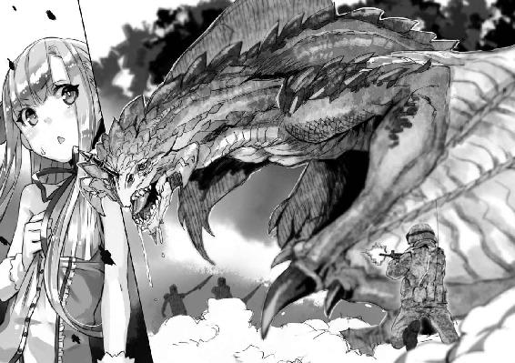

| アウトブレイク・カンパニー 萌える侵略者 04 | |
| 榊一郎 | |
| 講談社 (2012) | |
ebpaj-guide-1.0
口絵・本文イラスト／ゆーげん
デザイン／塚原麻衣子（ムシカゴグラフィクス）
第一章 皇帝陛下の憂鬱
僕──加納慎一は声を大にして言いたい。
メイド服は良い。
あれは──良いものだ。
「おお............」
もともとメイド服というものに形式上、明確な定義はない。
その名が示す通り、メイドさんが着るからメイド服であって、それ以上でもそれ以下でもない。まあ水兵が着ているからその名が付いているのに、今や、日本じゃ女子学生の代名詞みたいになっちゃってるセーラー服なんてのもあるにはあるけれど、それはさておき。
大概の人がメイド服と言うと思い浮かべるのは、黒や濃紺のワンピースに、フリルの付いた白いエプロンを着用、頭にはエプロン同様にレースの付いたヘッドドレス──というものだろう。
実際──それでおおむね間違っていない。無骨にならないぎりぎりにまで装飾性を抑えた仕事着としての機能美が、そこにはある。その形状には必然であるがゆえの無駄のない美しさがあるのだ。
「おおおお............」
だけど──現代の、それも日本において、メイド服とはコスプレ衣装だ。
色だって桃色だったり水色だったり。スカートは太股辺りまでの丈でニーハイソックスと合わせていたり。袖もノースリーブだったり。むしろこれでもかってくらいに装飾性重視の傾向がある。
もちろん、自他共に認めるオタクである僕は、コスプレとしてのメイド服も大好きだ。
あれはあれでアリ。特にスカートとニーハイソックスの間から覗く絶対領域なんて、清楚さと淫靡さの間でせめぎ合うミリ単位の芸術だと思う。またニーハイソックスが太股にムチッと食い込む様なども──それだけでご飯三杯はいけちゃう自信が僕にはある。
「おおおおおおお............」
しかし。しかしだ。
だからといって仕事着としてのメイド服がないがしろにされて良いとは思えない。
そうなのだ。原点を忘れてはならない。そうは思わないかい!?
特にその──色。
そもそも黒に代表される暗色は、身体を引き締め見せてくれる。
しかもその暗色と対照的に重ねられたエプロンの白さ！ ここ重要！ 乙女の純潔を象徴するかのようなその白は、メイド服を語るうえで絶対に譲れない一線だと僕は思います！
単に露出面積が多いだけの服とは、根本的に異なる！
讃えよ、メイド服！ 崇めよ、メイド服！
単純な性欲による条件反射ではない、幾つもの暗喩隠喩を含み、見る者に様々なドラマを想起させる──そんな高度な萌えが、そこにはある！
「おおおおおおおおおおおおおおおお............！」
............などというよーな。
「おおおおおおおおおおおおおおおおおおおおおおおおおおおお............!!」
小難しくも小賢しい理屈は。
「おおおおおおおおおおおおおおおおおおおおおおおおおおおおおおおおお!!」
一瞬にして僕の頭の中からすっ飛んでいた。
僕はただ湧き上がる感動の渦をどうすることもできず──ただただ、それを慟哭にも似た声にして漏らすばかりだった。
なんという......なんという...............胸ッ！
いつもと同じ平凡な朝、僕は屋敷の廊下を歩いていて──ふと扉の開く音にそちらを振り返って見れば。
「おおおおおおおお............おおっ......おおおおっ...........................っぱい！」
そこに桃源郷があった。
そう。それはまさに桃ッ！ 二つのたわわな水蜜桃が織りなす複雑な曲面は、白いエプロンと濃紺のワンピースの向こう側に隠されていてさえ、匂い立つような存在感を──「私を見て！」と言わんばかりに──主張していた。
今にも破れそうなほど、ぱっつんぱっつんに張った布地が、豊かな二つの丘の形を余すところなく僕に教えてくれる。まろやかだ。なんてまろやかなんだ。嗚呼。ただ大きいだけではない、微妙な曲線が描き出す至高の柔肉......！
弥栄、称えよ、その双丘ッ！
ジーク──ＯＰＰＡＩッ!!
「......慎一君？」
感動に打ち震える僕に──怪訝そうな声が掛けられる。
「何してるの？」
「拝んでいます」
と僕は両手を合わせながら言った。
ありがたやありがたや。
巨乳は夢。巨乳は愛。巨乳は命。
拝めば寿命が千日延びること請け合いである。
「......何を？」
「もちろん、この、はわわでたわわな、実にけしからん──」
とそこまで言って。
僕は眼を瞬かせながら──しかも大変な努力をもって、視線を胸からその上へとずらすことに成功した。
「誰かと思えば美埜里さん」
「......つまり、顔なんか全然見てなかったわけね」
と呆れた様子でそう言うのは、黒髪のメイドさんだった。
年齢は、一見すると十代にも見えるが、実際には二十代前半で──いわゆる童顔だ。目鼻立ちは整っている。けれど『綺麗』と感じるより『可愛い』とまず思ってしまうのは、丸みを帯びた目鼻立ちと、眼鏡の奥の、こぼれんばかりに大きな両眼のせいだと思う。
「いえ、そんなことは決して」
僕は宣誓するように片手を挙げて否定してから──とりあえず挨拶した。
「おはようございます、美埜里さん」
彼女の名前は古賀沼美埜里さん。
基本的に癒し系というか、見るからに優しい感じの女性で、実際に面倒見の良いお姉さんなのだけれど──その職業はというと、自衛隊員、つまりは女性自衛官だ。
彼女は僕の護衛として同じ屋敷に住んでくれている。
なので、僕にとっては馴染みの同居人──なわけなんだけれど。
「誰かと思っちゃいましたよ」
本当に一瞬、誰だか分からなかった。
普段の美埜里さんは、自衛官の制服──いわゆる『常装』というやつを着ている。
シャツに、タイトスカート、ワンポイントとしてネクタイ、といった感じの、いかにも『女性自衛官ですよ』って格好だ。たまに肉体労働的な作業に出る場合は、野戦服だのタンクトップだのになることもあるみたいだけど──考えてみれば、美埜里さんの私服姿というのを僕は見たことがない。
だから僕の美埜里さんのイメージというのは、制服とワンセットなのだ。
そんな彼女が、いきなりメイド服なんか着ているものだから......僕としては『え？ 誰？』と反射的に思ってしまうのも無理からぬことなのだ。たぶん。別に普段から美埜里さんの胸ばっかり見ているわけではない。たぶん。
しかも今の美埜里さんは、髪を下ろしている。
いつもの彼女は髪を後ろでお団子にまとめている。動きやすさ重視なのだろう。そのため、ぱっと見だと彼女の髪型は、男性のような、とても短いものに思えてしまう。
なのに今は、肩より少し下の辺りまである黒髪を、普通に下へ垂らした髪型だ。
こうしてみると、眼鏡と相まって実に大人しそうというか──お淑やかな女性、といった印象になるからすごい。女は化けるというけれど、全然雰囲気が違うのだ。しかも着ているのがメイド服となると、清楚な印象がやたら強調される。
なんというか......落差萌え？ とでも言おうか。
普段のいかにも『自衛官です』というお堅い雰囲気を見慣れているせいで、なんというか、見ているだけで思わず胸が高鳴ってしまう。ええと──あれだ、普段、ボーイッシュな感じの女の子が、可愛らしいスカートを穿いているのを見てしまったときのときめき。あんな感じね。
「どうしてまたそんな格好を？」
「あー......まあ」
美埜里さんは、はにかむように笑いながら頰を搔く。
おおう。その仕草がまた、新鮮で、可愛いのなんの。年上の女性に使う褒め言葉じゃないかもしれないけどさ。
「ミュセルとシェリスが......ちょっとね」
ミュセル。シェリス。
この二人は僕達が今現在、住んでいる屋敷に勤めるメイドさんである。
もともといたのはミュセル一人だったのだけど、諸事情あって彼女が忙しくなってきたため、新規にもう一人──ということで、傭い入れたのがシェリスだ。
でもって......
もともとミュセルはちょっとそそっかしいというか、ドジっ娘属性を備えていたりするわけだけども。新しく入ったシェリスはシェリスで、あまりメイド仕事に──というより人間との生活に慣れていないようで、ちょくちょく失敗をする。
結果、たまにそれが重なって、ややこしいことになったりするみたい。
今回で言えば──
失敗その一。ミュセルがつい美埜里さんの服を全部洗濯してしまう。
失敗その二。シェリスが誤って花瓶の水を美埜里さんにぶっかける。
この二つのドジっ娘コンボにより、美埜里さんの着るべき乾いた服が全滅してしまった......ということらしかった。いやまあシェリスは人妻だけど、それはさておき。
「仕方ないから乾くまで代わりに何か──ってことで」
美埜里さんはメイド服の特徴とも言うべき膨らんだ袖の部分をつまんで苦笑する。
「とりあえず、これを借りることになったんだけどね」
「でもこれ──ミュセルのじゃありませんよね？」
と僕は首を傾げて言った。
「いや。ミュセルのもの──というか、もともと、普段あの子が着ているのも、彼女の服じゃないみたいだよ」
「へ......？」
「仕事着よ仕事着。私達の制服と一緒、支給品」
「あー......」
なるほど。
もともとこの屋敷は──実質的に僕の家、ということになっているけれど、実際の所有者は神聖エルダント帝国、つまり国家だ。僕は神聖エルダント帝国の用意してくれた借家に間借りしているだけなのだ。
そしてこの屋敷には、驚いたことにメイドさんと庭師までついていた。
となると──当然、メイド服、つまり仕事着は『備品』扱いだよね。
「そういえばシェリスもちょっとデザイン違うの着てますよね」
「まあ彼女は身体の形からして違うしね」
と美埜里さん。
要するに......この屋敷には、あらかじめメイド服も幾つかの種類とサイズが備品扱いで用意されているらしい。美埜里さんが着ているのは、その中の一着ということだ。
「ミュセルのと違ってなんかこう、ずいぶん、渋いというかシックですねえ」
「ちょっと窮屈だけどね」
と美埜里さん。
確かに──サイズ違いとまでは言わないけれど、全体的に窮屈そうには見える。
襟元までぴっちりとボタンを留めるタイプのワンピースで、全体的に重そうというか、ゴシックな感じが強い。しかも美埜里さんの場合、胸が収まりきらないというか、胸元がはちきれんばかりにぱっつんぱっつんなので、露出度は低いくせに、妙に──エロい。
僕は内心、ナイスな失敗をしてくれたミュセルとシェリスに大感謝した。
「でも、こんなひらひらしたスカート落ち着かないし、それに、サイズもちょっと小さいから動きにくくて......だからもうちょっと違う服を借りるか、いっそ乾いてなくても良いから、洗った服をもらいに行こうかと思ってね」
そう考えて部屋から出たところで、僕とばったり──ということらしい。
それにしても......
「似合いますよ。とても」
「胸をガン見しながら言わないの」
「──失礼しました」
僕は改めて美埜里さんの顔に視線を戻す。
「でも本当に似合ってると思いますよ」
コレは言葉通り、噓偽りない本音。
「別に屋敷にいるときくらいは、そういう格好もすれば良いのに」
美埜里さんがいつも自衛官としての衣装を着ているのは、勤務中だから、なのだろうけれども。住み込みで年中無休、二十四時間態勢で僕の護衛をしているわけだから、勤務時間外なんてないも同然で。
なら屋敷にいるときくらいは、普通の格好をしていても良いんじゃないか、と思う。
けれど──
「......まあ......ちょっと......ね」
美埜里さんは僕から視線を逸らし、どこか困ったように、言葉を濁す。
「......？」
どうしたんだろう。
なんだかいつもの美埜里さんらしくない感じだけど。
僕は気になって美埜里さんの顔を覗き込もうとして──しかし自然と眼はその下の膨らみに向いていた。いや。違うんだ。見たくて見ているわけじゃない──こともないけど、違うんだ。だって、だってそこに胸があるから......！
次の瞬間。
──ぱんっ。
何かが弾ける音がした。
「......っ!?」
声にならない美埜里さんの短い悲鳴。
同時に鋭い痛みが僕の顔面──それも両眼を直撃する。
「眼がっ！」
後で分かったことだけど、それは、メイド服のボタンだった。
美埜里さんの胸の豊かさに耐えきれなくなったそれらが、揃って服から弾け跳び......あろうことか、胸をガン見していた僕の両眼を、直撃したのである。
何この天罰覿面!?
「し、慎一君！ 大丈夫ッ？」
「眼が、眼がああ！」
などと思わず某有名アニメのロリコン悪役の台詞を叫ぶ僕。さすがの美埜里さんも慌てている様子で──『バ●ス！』などと破滅の呪文を唱えたりはせず、僕を気遣う様子で手を伸ばしてきてくれたみたいだけど。
「眼がぁ......うわっ！」
「え......ひゃっ!?」
眼の痛みに我を忘れて暴れていた僕は、脚をもつれさせて、その場に転倒していた──傍にいた美埜里さんまで巻き込んで。
きっと普段の美埜里さんだったら、咄嗟に僕を支えてくれていただろう。女性とはいえ、元自宅警備員の僕なんかよりずっと筋力があるし、反射神経も鋭い。
けれど──今の美埜里さんは慣れないメイド服。しかも、ボタンがまとめて弾け跳んだそれの胸元を、咄嗟に押さえた彼女は、本来の動きができなかったのである。
そして──
「──!?」
反射的に身を固くして両手を掲げ、床との激突に備えた僕は──しかし顔面も後頭部も強打せずに済んでいた。
や......柔らかい......!?
何か、何か柔らかいものが、僕の顔を受け止めて......これは、これは、これはまさか、まさか、まさかかかかかかか（興奮のあまり言語中枢崩壊中）。
「いたた......」
「だ、大丈夫ですかっ？」
僕は慌てて我に返って眼を開ける。涙で視界はぼやけ気味だけど──とりあえずちゃんと見えているようだ。
まず最初に眼に飛び込んできたのは──予想通りのものだった。
「おおうっ！」
胸だ。
しかも服がはだけたところを、美埜里さんが腕で押さえて留めていた状態そのままだったりするので、こう、彼女の胸が腕に押さえつけられて、実に柔らかそうに形を変えて、まるで『さあ、揉め！』と言わ──いや、そうじゃなくて!!
......っていうか美埜里さん、着けてない!?
ひょっとしてミュセルってば下着まで根刮ぎ洗っちゃったとか!?
あああ!? なんて、なんて、なんて......ＧＪ！
などとドジっ娘メイドさんに感謝している場合ではなくて。
「──慎一君!?」
「す、すみません！」
僕は慌てて美埜里さんの上から退こうとする。
けれど、まるでその瞬間を狙い澄ましたかのように......
「だ、旦那様......？」
動揺のたっぷり載った声が聞こえてきた。
思わず硬直する僕。
ここで改めて僕と美埜里さんの状態を考える。
床の上に仰向けに倒れた美埜里さん──withボタンがとれて脱げかけのメイド服、しかもノーブラ。
美埜里さんの上に覆い被さる＆その胸に顔を埋めんばかりに顔面が接近中の僕。
これはどう見ても、誰の眼から見てもたぶん、その、僕が美埜里さんを押し倒して、エロいことに及ぼうとしているようにしか見えなくて。
そのまま前を向いて美埜里さんの胸を見ながら現実逃避していたかったが──さすがにそういうわけにもいかない。
大変な努力と共に振り返ると、そこには。
「............」
「............」
いつの間にやって来たのか──動揺の色がはっきり浮かんだ表情のミュセルと、そして珍しいものを見た、とでも言いたげに眼を丸くしたエルビアがそこにいるのが見えた。
ミュセル・フォアラン。
この屋敷でメイドを務めるハーフエルフの少女。
エルビア・ハーナイマン。
自称・放浪絵描きというウェアウルフの少女。
共に僕の屋敷の同居人である。
「シンイチ様──」
エルビアはぴこぴことその獣耳と尻尾を動かしながら言った。
驚いているというより感心しているふうだけど──
「ひょっとして......『あの日』っすか？」
「んなわけないから！」
僕は悲鳴じみた声で叫ぶ。
ちなみに見た目通りの獣っ娘であるエルビアが言う『あの日』というのは、いわゆる『女の子の日』とは異なり──月に一度ある発情期のことを言う。
そういえばこの間はエルビアの発情期のせいでいろいろゴタゴタしたわけだけど、あれって半獣人の男性にもあったりするんだろうか。だとするとものすごくこう、治安が乱れまくるような気がするけど──
いや、それはさておき。
「............っ！」
ミュセルが──何やら『これ以上は耐えられません！』とでも言わんばかりに僕達から眼を背けると、そのまま踵を返し、足早に廊下を去っていく。
「ま......待ってミュセル......！」
逃げるようにして小さくなっていく彼女の背中に、僕は右手を伸ばして叫んだ。
「これは、誤解、誤解なんだああああッ！」
ミュセルの姿が廊下の奥の曲がり角を曲がって消えていくのを、絶望的な想いで見送りながら──そういえば、つい先日も似たようなことを言ったような気がするなあ、などと心の片隅で他人事のように考える僕なのだった。

僕の名前は加納慎一。
ラノベ作家の父と元エロゲ原画師の母を持つ、純血種・濃縮二倍のオタクである。
幼馴染みの女の子に告白して振られたため、平凡な高校生から自宅警備員へと転職して一年あまり──堪忍袋の緒が切れた両親によって、復学か、就職か、さもなくば離縁か、の三者択一を迫られた僕が、嫌々始めた就職活動で手に入れたのは、とてもとても非常識な仕事だった。
すなわち──異世界における総合商社の総支配人。
たぶん、普通の人にこう説明すると、何を言ってんだコイツと正気を疑われかねないけれど、とりあえず僕は正常だ。たぶん。
そう。異世界だ。異なる世界と書いて異世界。
かつてはＳＦとかファンタジーとか、物語の中にしか存在しなかった──異郷。
事の起こりは......自殺の名所ともいわれている富士の樹海、もとい青木ヶ原樹海で、ある穴が発見されたことだった。
いったい、いつから存在していたのか。
ここにできた理由はなんなのか。
そもそも、この穴はいったいなんなのか。
根本的なことは何も分かっていない。
ただ一つだけ分かっていることは、この穴が、地球とはまったく違う異世界へ繫がっている、超空間通路らしい──ということだけだった。
ある意味でこれは幸運だった、のだろう。
宇宙空間やら、地球内部のマントル層やら、ブラックホールのシュバルツシルト半径内に繫がっていたら、どうなってたか。繫がった日が地球最後の日だったとしてもおかしくはないわけで。
ともあれ......
もろもろの事情から、日本政府は極秘でこの穴を調査し、その結果──この世界に、自分達と同じような生物がいることを知った。
つまり人間がいて、国家組織を形成しているということを。
同じ人間なら、宇宙人よりは理解しやすいはず──と政府のお偉方が考えたのかどうかは知らないけれど、ごく少数の研究・対策班によって、機密の壁の内側で、この異世界との交流は開始され......やがて日本はその穴の通じていた国家と一定レベルの国交を結ぶことに成功した。大多数の一般国民や諸外国には秘密のままで。
もちろん──日本政府が、この異世界の存在を秘密にしているのには理由がある。
何しろ穴の向こうは異世界だ。
しかも調査の結果──文明レベルは地球でいうところの中世西欧のそれに近い。
ならば『こちら』では枯渇の危機が叫ばれる各種資源がこの世界にあるのではないか。
または『こちら』にはない貴重な物質や生物資源が手つかずで存在するのではないか。
あるいは将来的には──この世界から膨大な労働力や市場を確保できるのではないか。
まあそういう『美味しそうなところ』を日本政府はそっくりそのまま独占するつもりで、この穴と、その向こう側の世界のことを秘匿してきた。
ところが。
意外にも、当初最も難航が懸念されていた意思疎通の問題は、あっさりと解決した。この世界の独自技術──魔法で拍子抜けするくらいに互いの言葉は通じたのだ。
しかし問題はその後だった。
お知り合いには、なれました。
話も、するようになりました。
でもそれ以上に進展しないんです。
──などと、まるでどこかの男女交際の悩み、みたいな話だけれど。
日本とその相手の国──神聖エルダント帝国との親密度を上げるための方法が、見つからなかったのだ。
何しろ、繰り返すけど相手は異世界の国家だ。
歴史や文化が違えば、興味を示すものも、まったく違ってくる。
通貨体制そのものが違ううえに、経済的な繫がりがないので、単純な金銭の駆け引きは難しい。モノを提供しようにも、迂闊な品を差し出せば、資源やら何やらの取り放題を目論んでいる日本政府の思惑に気付かれてしまう可能性もある。何よりくだんの穴が大量の物品を運べるほどの大きさではないし──それこそ迂闊に大量の品物を運び込むと、諸外国に気付かれる可能性が高い。
持ち運びが簡単で。
とにかく無害で。
できれば安価。
となると、誰もが思いつくのは日本の伝統工芸やら伝統文化なわけだけど。
これがいまいち、エルダント帝国側には理解されず受けも良くなかった。
困り果てた日本政府は、片っ端からいろいろなものを試し──結果、いちばん、エルダント帝国側の反応が良かったのは、日本製のサブカル的エンターテイメント、すなわち、漫画やアニメなどのオタク商品だった。
そういうわけで、日本政府はオタク文化を主軸に置いてこの神聖エルダント帝国と交流していく方針を決定し、異世界初の総合エンタメ商社〈アミュテック〉を神聖エルダント帝国と合同で設立した──のは良いけれど。
具体的に、どんな作品を、どんなふうに持ち込むのか。
これを『感覚的に』判断できる人間が、政府の側にいなかった。
まあ理屈ではいくらでも判断できるけれど、政府がこの手の文化だのなんだのに手を出すと、たいていは残念なことになる。考え方がお役人的というか、野暮ったいくせに無意味に上から目線というか。さすがにその辺りのことには政府関係者も気付いていたらしい。
じゃあそれを感覚的に判断できる人間を連れてこい、ということになるわけで。
そして、できれば何か不都合が起きたときに、切り捨てやすい人間が良いと。
そうして幾つかの偶然から選び出され──強引にこの神聖エルダント帝国に連れてこられたのが、この僕、元自宅警備員たる加納慎一、なのだった。
食事は可能な限りみんな揃って。
それが〈アミュテック〉社の社訓──ってほどでもないけれど、僕達が貸し与えられているこの屋敷での基本方針だった。決めたのは僕。神聖エルダント帝国ではかなり奇抜な考え方らしいのだけど、僕は気にしていなかった。
「いただきます」
手を合わせ、ナイフとフォークに手を伸ばす。
僕の声を合図に、他の皆も──五人も食事を始めた。
ちなみに食事は基本的に皆で一緒に、といっても、食べるものは微妙に違う。これは各人の好みというより、種族の違いから来るものだ。何しろ単純に数えてもうちには人間、ハーフエルフ、リザードマン、ウェアウルフ、の四種類の人種が揃っていて、それぞれ微妙にその生態も異なるのだ。
なので実は朝食の準備といっても、意外に大変である。
「旦那様、お味はいかがですか？」
小鳥のような仕草で首を傾げてそう尋ねてくるのは、隣に座る、亜麻色の髪をポニーテールにしたメイド服の少女──ミュセルだった。
彼女はその衣装を見て分かる通り、この屋敷でメイドとして働いている。
でもって朝食の用意は、基本的に彼女の仕事なのだ。各人の好みも考えて少しずつ内容を変えた朝食を用意するのは手間なはずなんだけど、彼女は嫌な顔一つせずに甲斐甲斐しく働いてくれている。
しかも──
「相変わらず美味しいよ」
食べ物を飲み込んで、僕は笑顔でそう答える。
ミュセルの料理は美味しい。女の子の手料理なんて初めて食べる──ちなみに僕には妹が一人いるが紫月の奴は料理の類はいっさいしない──ので、僕の感覚に萌え補正が掛かっている恐れもあったけど、美埜里さんやエルビアに尋ねても同意見なので、彼女は本当に料理が上手いのだろう。
「ありがとうございます」
ミュセルは顔を綻ばせて嬉しそうに言う。
はうっ......！
僕の言葉に一喜一憂する健気な美少女！ しかもメイドさんでハーフエルフで！ どんだけ過剰武装なのこの子！ 一緒に住み出してもう半年以上になるのに、未だに朝食のたびに萌え死に寸前の僕なのだった。
何やらさきほど、廊下で美埜里さんを押し倒しちゃった一件で、彼女には誤解され、微妙に気まずい思いをしていた僕なのだけど。この様子ならミュセルも、もう気にしていないみたいだった。まあ後で念のためにきちんと説明しておいた方が良いだろうけども。
まずは一安心。
そう胸をなで下ろす僕だったのだけど──
「──あの」
ふと表情を曇らせてミュセルは言う。
「さきほどは......申し訳ございませんでした......」
「──え？」
ぎくりと身を強張らせる僕。
さきほどと言われると、それはやっぱり廊下の一件しか思い浮かばなくて。
でもなんでミュセルが謝るの？
「その......びっくりしてしまって......お許しもなく、逃げ出してしまって......」
「は？ いやいやいや！ 違うでしょ！」
と僕は思わず突っ込んでいた。
「誤解しないで。お願いだから」
「誤解......ですか？」
おずおずとした様子で尋ねてくるミュセル。
「だからその、僕は別に、美埜里さんとその──」
「交尾してたわけじゃないらしいっすよ？」
と──助け船なんだか追い打ちなんだかよく分からない台詞を挟んでくるのは、長卓を挟んで向かいに座っている獣っ娘だった。
エルビア・ハーナイマンだ。
前述の通り、彼女は獣耳に獣尾装備の亜人種──見ての通りのウェアウルフである。
本人曰く職業は放浪画家だそうだけれど、実際には、エルダント帝国と敵対するバハイラム王国が派遣した間者、つまりはスパイらしい。
本来ならば、人権思想なんて『何それ美味しいの？』的な中世的価値観では、敵・即・斬、な感じで処刑されちゃうはずだったのだけど......まあ紆余曲折あって、うちのお抱え絵師として保護観察状態なのだ。
まあそれはさておき。
このエルビア──おおらかで人懐っこい笑顔の、可愛い獣っ娘なのは良いんだけど、その分ひどく大雑把でガサツというか、もうちょっと空気読めと言いたくなるくらいに、うっかり発言が多い。
「こっ......交............！」
あ。ほら。またミュセルが絶句してる。
真珠のように白い肌を、恥じらいで仄かに赤く染めているミュセルは、大変可愛らしいのだけど、変な言い方をされるとよけいに話がこじれそうで困る。
「エルビア──」
「いやあ。アタシも最初は焦っちゃったっすけどね」
あはははは──と笑うエルビア。
ちなみに彼女はさきほどの一件で、その場に留まってくれていたので、おおむね事情については釈明できていたのだけど。
「──なんの話です？」
そこで口を挟んできたのは、僕の左隣に座るブルークだった。
ブルーク・ダーウェン。
僕の屋敷の下男、というか実質、庭師をしているリザードマンだ。
半獣人、という意味ではエルビアと同じ系統に分類される人種なんだけど、ウェアウルフが『獣耳と獣尾がついてるだけで実質的に人間そのもの』なのに対し、リザードマンはまったく逆。つまり基本は直立歩行の人型だけど、その外見は名前の通りに蜥蜴そのもの──頭部は砲弾型で長く口は裂けていて、これでもかってくらいにゴツゴツした、爬虫類の顔立ちをしている。
たぶん、真夜中に出会したら、子供なんて泣いちゃうだろう。
もちろん、表情なんてほとんど読めないし、口調もどこか気怠い感じなので、いまひとつ何を考えているのか分かり難いのだけど。
それでも彼が根はとてもいい男で、しかも冷血爬虫類どころか、とても『熱い』人物であるということを、僕達はよく知っている。最近は彼の方でも打ち解けてきてくれて、朝食時の会話に加わってくれることもしばしばあった。
「いや実は──」
「さっきシンイチ様がミノリ様を廊下で押し倒してたんすよ！」
「エルビア!!」
なんでそんな誤解要素満載の台詞を得意げに言うんだ、この獣っ娘は。
「だから誤解だってば！」
僕は慌てて言った。
「たまたまその、美埜里さんの胸を見ていたらボタンが、いやそうじゃなくてね!?」
「ははぁ......」
ブルークはその縦長の頭で小さく頷いた。
驚いているのか、呆れているのか、残念ながら僕には判断がつかないけれど。
「だから誤解っていうか、その、押し倒しちゃったのはまあ噓ではないっていうか、本当だけど、その、事故、そう、事故なんだよ！」
僕はそう言い募る。
なんだかブルークの瞼のない眼で見られると、ひどくいたたまれない気持ちになるというか、下手に感情の色が見えない分、こちらに少しでも疚しい気持ちがあると、いろいろとよけいな想像の方が先に立っちゃうというか。いや、別に疚しいことなんて何もない、何もないんだけどね！
「分かりやす。旦那様」
ブルークはもう一度頷いた。
「旦那様は美埜里さんに卵を産ませたいんですな」
「分かってない、ブルーク分かってないよ！」
実はブルークといろいろ分かり合えてきた──とか思ってるのって僕の幻想なのかも。
「へぇ......」
「そうよ。ブルーク」
とブルークの向かいに座るもう一人のメイドさんが言った。
「人間は卵を産まないわ」
「............」
いやまあ確かにその通りなんですけど。
とりあえず『メイドさん』と表現はしたけれど。
たぶん、その言葉だけで想像されるもろもろの図とは、とてつもなくかけ離れた人物がそこにいた。というかまあ普通、メイドさんに鱗はない。
そう。ブルークの向かいに座るメイドさん、彼女もまたリザードマンなのだった。
シェリス・ダーウェン。
ブルークの奥さんである。
女性ということでブルークよりも小柄でほっそりしているが、基本造形はもう、まんまリザードマンなので、なんというか、メイド服を着た姿が恐ろしいほどの違和感を醸し出している。体型はともかく、顔の作りがまったく違うので、ツギハギ感というかメイド服とのコラボによって醸し出される『コレジャナイ』感がすごい。シェリスには失礼な話かもしれないけれど。
「そうか。そうだな」
「ええ」
頷き合うブルークとシェリス。
「ところでブルーク、もう一つ林檎はどう？」
「もらおう」
「はい──どうぞ」
......何この二人だけの異空間。
阿吽の呼吸というかなんというか──表情は僕から見ると、どちらもよく分からないのだけど、二人を中心に直径二メートルくらい限定で、実に仲睦まじそうな空気が漂っている。
まあブルークが奥さんと仲が良いのは喜ばしいことなんだけど、こう、『通じ合ってますよ』的な雰囲気の二人を見ていると、とても......見せつけられ感が半端ないというか。
いや、別に羨ましくなんかないよ？
別に、リア充なんて、リア充なんて、みんな爆発してしまえばいいんだ！ なんて思ってないよ。全然、これっぽっちも、微塵も思ってないからね!?
「......いやそうじゃなくてね」
と僕は両手を振って言った。
「そもそも押し倒したってのが誤解なんだよ！ 僕が転んだときに、たまたま美埜里さんを巻き込んじゃっただけだよ！ 本当に！ ──ね、そうですよね？ 美埜里さん」
と僕は当事者の一方に同意を求める。
ちなみに美埜里さんはすでにもういつもの自衛官服に着替えている。生乾きだけれど、これ以上ミュセルのメイド服を破損させるわけにはいかないってことらしい。
惜しい。実に惜しい。
よく似合ってたんだけどなあ。メイド服。
「もっと落ち着いて、どっしり構えてたら？」
美埜里さんは苦笑して言った。
「あんまり慌てると、かえって『何か疚しいところがある』みたいに見えるよ？」
「う......でも」
「でもミノリ様ってば」
とエルビアが笑いながら言ってくる。
「事故ってわりには、まんざらでもないって顔してなかったすか？」
「まあ......ねえ」
と慌てず騒がず美埜里さんは苦笑で応じる。
「あんな体験は初めてだから、驚いたのは確かだけれど。少し『受け』の気持ちが分かったから貴重な経験よね。まあ、確かに事故なんだし、気にしなくていいよ」
うーむ。大人だ。
......っていうか『受け』の気持ちって。
ほとんどセクハラみたいな体験もそう考えると許せちゃうのか？ 腐女子の考えることは分からん........................って。
あれ？
僕はふとあることに気付いた。
「あの。美埜里さん？」
「なに？」
「彼氏とかいないんですか？」
「彼氏いない歴イコール年齢の喪女ですが何か？」
「......いやあの」
そんな堂々と言われても。
「意外。美埜里さんってすごいもてる感じなんだけどな」
「胸見ながら言うのやめなさい」
「すいません」
だってそこに胸があるから......
「でも僕みたいな自宅警備員ならともかく、出会いなんていくらでもあるでしょう？」
「んー、まあ......」
ついつい胸の話ばっかりしちゃうけど──顔だけ見たって美埜里さんは美人だ。
ちょっと童顔だけど、そこがまた可愛いというか、どこかおっとりとした、緩い感じの表情と相まって本当に萌える。一緒にいると和むというか癒されるというか。これで惹かれない男は少ないと思うんだけどなあ。
大体、自衛隊って男の人の方が多いのだから、出会いなんてそれこそありまくり、むしろもててもてて困る、くらいでもおかしくないのだけど。
それとも美埜里さんって理想が異様に高かったりするんだろうか。
「美埜里さんの好みのタイプ──」
「あ、そうそう慎一君」
心なしか強引な感じで美埜里さんは僕の台詞に自分のそれを被せてきた。
あれ？ ひょっとしてはぐらかされた？
「今日、エルダント城行くよね？」
「え？ あ、はい、そのつもりですけど......」
「了解。じゃあ準備しなくちゃね。ごちそうさま──お先に失礼」
そう言って美埜里さんは朝食を切り上げて立ち上がる。
見れば彼女の皿にはまだ少し料理が残っていた。
『もったいない』と目くじらを立てるような量ではないけれど、もともと健啖家で、出されたものは残さず食べる美埜里さんにしては、珍しいことだった。
......やっぱり、さっきのは、話を逸らしていたのか？
食堂を出て行く美埜里さんの後ろ姿を眺めながら、僕はぼんやり考える。
美埜里さんって、この手の話題が嫌いなのだろうか。
いや......でも恋愛話そのものには興味があるというか、たまに僕とミュセルやエルビアをからかったりしているから、全然駄目、ってこともないと思うのだけど。
それとも、自分がその話題の渦中にいるのが苦手とか？
一見、大人のお姉さん、でも実は超奥手で経験不足の恥ずかしがりな乙女......とか？
何それ。超萌える。
などと毎度の如く馬鹿なことを考えながらも──とりあえず僕は、眼の前の美味しい朝食に集中することにした。
神聖エルダント帝国。
前述の通り、この異世界の国家が、目下──僕の商売相手だ。
多民族国家であり軍事国家でありこの異世界でも屈指の大国であるらしい。
もちろん、帝国と名がつくからには、その国家形態は帝政、つまりその権力構造の頂点に立つのは皇帝陛下だ。
具体的にはペトラルカ・アン・エルダント三世──というのが現帝国の国家元首。
皇帝陛下、などと言うとついつい、髭面のおっさんを連想しがちだけども、ペトラルカはそれとは真逆というか、ありとあらゆる意味で正反対の存在だった。
若いのだ。というかぶっちゃけ見た目はほとんど幼女なのだ。
実年齢は僕とそう変わらないはずだけど、とにかく容姿が幼いというか、ランドセル背負ってたって違和感ないくらいに可愛い外見をしているのだ、この国の皇帝陛下は。
しかもただ幼いから可愛い、わけじゃない。
綺麗なのだ。びっくりするくらいに。
たとえば長い銀髪と碧色の瞳は宝石を連想させるし、くっきりした目鼻立ちは上品な印象で──高貴な生まれと言われれば納得の美しさだ。普段、身に着けているティアラやドレスに、着られているようなこともなく、逆にそうした衣装がごく自然に馴染んでいるのは、もう見事という他ない。
等身大のアンティーク・ドールとでも言おうか──同じ空気を呼吸して同じ食物を摂取しているとは思えないくらいに浮き世離れした容姿なのだ。『皇帝陛下は大も小もしません』とか言われたら、なんの抵抗もなく信じてしまいそうなほどに。
で──
僕はそんな皇帝陛下の許に三日に一度、参上するのが仕事の一部になっている。
僕の勤める総合エンタメ商社〈アミュテック〉は、日本と神聖エルダント帝国の共同出資会社なので、言うなれば彼女は僕の傭い主なのだ。仕事の進捗状況を報告する義務がある。まあそれがなくても僕は定期的に彼女に会いに行っただろうけれど。建て前はともかく、本音としては、僕はペトラルカの友達のつもりだからだ。
ともあれ──
「着いたよ」
と窓の外を一瞥して美埜里さんが言う。
僕達は送迎役の御者に礼を言ってから、羽車──馬ではなくて、馬並みにでっかい二足歩行の鳥が引っ張っているので、この名前がついている──から降りた。
ちなみに同行者は美埜里さんの他にミュセルがいる。
ものすごい身分差はあれど、まあいろいろあってミュセルはペトラルカと仲が良いし、僕達は皇帝陛下への謁見の後、日本のオタク文化を教授する学校に講師として出勤しなければならないので、一緒に行動しているのである。
ミュセルは僕と一緒に住んでいることもあり、もう教師が務まるほどに、日本語に精通している。だから最近は、彼女に学校に出てもらうことも多いのだ。
「しかし......何度見ても慣れないなあ」
「はい」
ぽつりと呟いた僕の横でミュセルも頷く。
僕達の前にそびえているのは、皇帝陛下の御座所──つまり帝城たるエルダント城だ。
よく大きな物体を示すのに『山のような』という表現を使うけれど......このエルダント城に限って言えば、それは、比喩でも誇張でもない、そのまんまの意味になる。
もともと、岩山を削り出して作られたというこの城は、城門の前に立って見上げると、視界の中にすべてが入りきらないほどにでかい。
建築物というよりもほとんど地形だ。
僕達の世界にも万里の長城なんて、無茶な代物があるけれど、あれはまあ、延々と壁が続いているだけ──というか実質的には『線』でしかない。
だが、このエルダント城は『塊』なのだ。
前に立つだけで圧倒される。なんかこう背景に『どぉん』という効果音を書き込みたくなるような偉容だった。
「......行こうか」
見上げていた城から視線を外し、僕達は外門を抜けて城の敷地内へと入る。
普段であればここで、警護役の騎士達と一度、顔を合わせることになるはずなのだけれど......
「あれ？」
内門の左右、いつもの定位置に、騎士の姿がない。
「お休み？」
「まさか」
と美埜里さん。
「ですよね」
しかしじゃあ、彼らはどこへ行ったのか。
前もって来ることは伝えてはあるし、すでに僕達のことは城内でもよく知られているから、そのまま通っても問題ないはずだけど──勝手に進むのも気が引ける。もし万が一にも何か問題になったら、責められるのは僕らではなくて、騎士達で、しかも下手をすると人生が変わっちゃうくらいのお叱りを受けたりするからだ。
「どうしましょう」
「うーん......？」
さすがの美埜里さんも判断がつきかねるらしい。
そのまま僕達三人が、門の傍で立ち尽くしていると──
「──旦那様」
ミュセルが僕を呼ぶ。
彼女が指し示す先に眼を向けると──人影が一つ、こちらに向かって近づいてくるのが見えた。見知った顔だ。僕は彼に向けて手を振った。
「ザハール宰相」
ペトラルカの重臣の一人──ザハール宰相だった。
外見的には白髪と白髭の瘦せたお爺さんで、政治や経済面でペトラルカを補佐する以外に、彼女の教育係も担っているようだ。宰相というと、ゲームや漫画でよく、国王や皇帝を裏から操る腹黒の悪人として描かれたりするけれど──ザハール宰相は、むしろ、『お嬢様に仕える老執事』といった印象が強い。
ともあれ......
「いや。すみませんな」
とザハール宰相は言った。
「お待たせしてしまったようで......」
「いえいえ」
頭を下げるザハール宰相に、僕は首を横へ振る。
どうやらタイミングが悪かっただけらしい。僕は当初の予定通り、謁見の間に向かって歩き出そうとしたのだけれど──
「シンイチ殿」
とザハール宰相が僕を呼び止めた。
「お待ちくだされ。ここまで足を運んでいただいて、申し訳ないのですが......本日はこのままお帰りになってください」
「──へ？」
予想もしなかった一言に、僕は思わず間の抜けた声で応える。
「ど、どうしてですか？」
「それは......」
どこか言い辛そうに、ザハール宰相は一度僕達から視線を逸らす。
そのとき、ザハール宰相が歩いてきたのとは別の方向から、騎士達が二人、足早にこっちへと向かってくるのが見えた。いや。それだけじゃない。さらに別の方向からも別の騎士が二人現れていた。
どうも皆──急いでいるというか焦っているというか、そんな雰囲気だ。
四人の騎士達は僕達から少し離れた位置で立ち止まる。
「──見つかったか？」
と声を掛けるザハール宰相。
だが騎士達は揃って首を振った。
「引き続きお捜し申し上げろ」
「はい」
騎士達はザハール宰相の言葉に頷くと、元来た方へと、また、足早に戻っていった。
いったい何事なのだろうか。
どうにも物々しい感じだけれど──
「............実は」
とザハール宰相は溜め息交じりに言った。
無理に隠し立てしても仕方ないと判断したのだろう。不自然な隠し事は、よけいな憶測を呼んだりするからだ。
「今朝から陛下が行方不明でして」
「──はあ？ 行方不明？」
「今朝、朝食のお伺いを立てに、侍女が御寝所に入った際には、もう御姿がなく......現在、城詰めの者総出で、お捜し申し上げているところなのです」
「まさか誰かに連れ去られたとか......？」
と問う美埜里さんの表情は硬い。
無理もなかった。一度ペトラルカは反帝国を掲げる連中に捕まったことがある。その際には、なんとか事なきを得たけれど──一歩間違えば彼女は死んでいただろう。とにかく重要人物というのは、物騒な連中の標的になりやすいのだ。
しかし──
「いえ、それはありません」
ザハール宰相はそれを否定した。
「ご自分でお逃げになった形跡がありましたので」
「ど、どうやって......」
まさか、シーツやカーテンを繫いでロープを造り、窓から逃げたとか？ まあ漫画やアニメでよく見る脱出方法だけど──実際にやるとなるといろいろ無理がありそうだ。
「魔法を使わないんですか？」
と美埜里さんは尋ねる。
そう。この国には──というかこの世界には魔法という便利な技術がある。
何しろ、言語の異なる二つの文明を、指輪一つで──正確には二つか──意思疎通できるようにしてしまうのだから、皇帝陛下の行方くらい、すぐに見つけ出せそうなものだけど。
「いやそれが......」
ザハール宰相は首を横に振る。
「皇帝陛下の御身体には対抗呪紋が施されておりますので......」
「──あ」
と僕達は顔を見合わせた。
そう。先の『皇帝陛下が反帝国を掲げる者達に捕まった』一件。その現場に僕やミュセル、美埜里さんもいたのだけど──その際、テロリストの一人が放った攻撃魔法を、ペトラルカが身体一つで跳ね返すのを見ている。
ペトラルカ自身がその際に語ったところによると......常に暗殺の危険がつきまとう帝族には、魔法を反射、あるいは無効化する呪紋が施されているらしいのだ。細かいことは僕も知らないが......どうやら攻撃的な魔法だけじゃなくて、居場所を探るような魔法も無効化されてしまうらしい。
「それに──」
とザハール宰相は、取り出した布で額の汗を拭きながら言った。
「あまり大規模に魔法で探査すると、国民に感づかれる恐れがございます」
程度や規模の大小の差はあれど、この神聖エルダント帝国では、魔法というのは基本的に庶民にも馴染みのあるものだ。いわゆる魔法使いは少ないけれど、魔法の道具というのはわりと街中でもよく見かける。僕達が翻訳機のようにして使っている魔章指輪もその一つだ。
で──あまり大規模な魔法を使うと、これらの街中の魔法器具にも影響が出るとか。
電磁波と電子機器みたいなもんなのだろうか。
「大事にしたくないのです。皇帝陛下が行方不明などと国民に知られれば──いったいどんな騒ぎになることやら」
なるほどそれはその通り。
皇帝陛下といえば、一般の国民にとって神にも近い存在である。そんな彼女がいなくなったとなれば、混乱が起こってもおかしくないし──それこそ不心得な者達ならば、騎士団に先んじて彼女を捕まえようと考えても、おかしくはない。
そういうわけでザハール宰相達は、地道に城内を駆け回って彼女を捜すしかないということらしい。よく注意して見ればザハール宰相の息は荒いし、顔にはあちこち汗が浮かんでいる。たぶん──僕らに出会う前は彼も走り回っていたのだろう。
そういえば、この前は腰を痛めて寝ていたと聞いたけれど......そんなに走り回って大丈夫なのか、この人？
「あの。僕も捜しましょうか？」
僕はそう提案した。
「は？ ......や、それは......」
ザハール宰相は驚きの表情で僕を見る。
同時に美埜里さんも呆れた様子で声を掛けてきた。
「慎一君？」
「いやほら、だってペトラルカに会わないと、僕がここに来た意味ないですし。僕の授業まではまだ時間もありますし。一人でも人手は多い方が良いかなって思って」
というか正直、ご老人が息を荒らげて駆け回っている様を見るのは、いろいろこっちの心臓にも悪い。僕が代わりに捜すから寝ててください、と言いたいくらいだった。
「それに、もしペトラルカがどこかに隠れていたとして」
あの可愛い皇帝陛下の顔を脳裏に思い浮かべながら、僕は言った。
「僕が相手だったら姿を見せてくれるんじゃないかなあって」
はっきりした根拠はない。
ただ──この城の中の人達は全員ペトラルカの『臣下』なわけで。一方、僕はその範疇には含まれない。だからこそ、たまに彼女は僕の前で、びっくりするくらいにあどけない表情を見せてくれたりするし......なんというか、上手く言えないけれど、臣下が『皇帝陛下』を捜しているならば、是が非でも隠れ通そうとするけれど、僕が『ペトラルカ』を捜しているのなら、そこまで意地は張らないのではないか、と思ったのだ。
「ふうむ......」
ザハール宰相はしばらく懊悩するように顔をしかめて唸っていたけれど。
「......ではお願いしてよろしいか？」
「もちろんです」
僕は笑顔で頷いた。
そういうわけで。
僕はエルダント城でペトラルカ捜しをすることになった。
ちなみにミュセルと美埜里さんには先に学校へ行ってもらった。とりあえず彼女らがいれば授業は始められる。僕はペトラルカを見つけ次第、羽車で学校まで送ってもらうことになった。
「さて、と」
ミュセルと美埜里さんを見送り、ザハール宰相と別れてから、僕は一人腕を組んだ。
「ペトラルカが行きそうな場所......もしくは隠れそうな場所......」
僕が彼女の立場ならどうする......？
そもそも彼女は、どこに行こうとしたのか。
あるいは単に、ここから逃げたかったのか。
どちらにせよ城からは出ようとするのではないだろうか。
しかし城外に出ようとすれば、幾つか存在する外側の城門を通らねばならない。他の方法で外に出るのはおよそ不可能──となれば、どの外門を抜けるにしろ、警護の騎士達に見つからないようにせねばならないわけで。
「......こちらス●ーク」
などと某有名ゲームを思い出して呟く僕。
あれは敵の警備をかいくぐって潜入したり逃亡したりするのが醍醐味のゲームなんだけれど。警備の者が背中を向けた一瞬に、段ボール箱に潜んで歩いたり、物陰から物陰に移動したりが実に楽しい。
そういえばあのゲーム、携帯版はペトラルカもやっていたような。
となると......
「んー......」
僕は城門付近をゆっくりと回る。
城門の様子を観察できる物陰を重点的に捜す。
「ペトラルカー？」
僕は内門と外門を繫ぐ石畳の道から外れ、城壁に沿って歩いてみた。
辺りには芝生が生い茂り、所々には灌木の茂みがある。門の内側とはいえ基本的には庭のような扱いの場所らしかった。
「ペトラルカー。僕だけどー。シンイチだけどー」
反応はない。
ひょっとしてもう外に出ちゃっただろうか。
僕が捜し始めた時点では、彼女が城の外に出たと思われる証拠も目撃情報もなかったのだけど......
そんなことを考えながら、歩いて数分。
「......あ」
城壁沿いの、一段と大きな茂みのところに、僕は目的のものを見つけた。
大きな木箱だ。
それも中に小柄な女の子なら、入れちゃうような感じの。
僕はそっと横から回り込むようにして木箱に近づくと、城門の方を振り返った。
うん。見える見える。ここからだとちょうど、外門のところにいる衛兵の姿を見ることができる。
たぶん、ビンゴだ。
「ふっふっふ」
僕はにやりと笑うと木箱に手を掛けて。
「見つけたよ！ ペトラルカ！」
かくれんぼで、鬼が隠れている誰かを見つけるときのように、僕は少しだけ声を張り上げながら、これを引っ張り上げた。
見つかったことに驚くペトラルカの表情を想像しながら。
しかし──
「──え？」
僕は眼を丸くして固まった。
ペトラルカは確かにそこにいた。
だが愛すべき皇帝陛下は、俯いたまま僕の方を見ようともしない。というか膝を抱えて丸くなって──つまり三角座りの状態で身動き一つしないのだ。
「ペトラルカ......さん？」
思わず無意味にさん付けしつつ、僕はしゃがんで、彼女の顔を横から覗き込む。
可愛い皇帝陛下は──眠っていた。
ちなみに衣装は普段の派手なドレスではなく、寝間着らしいシンプルなワンピース──ネグリジェか？ ──である。彼女は自分の膝に頭を預けながら、すーすーと、静かに寝息を立てている。
なにこれ可愛い。萌える。
この小動物が丸まって寝ているかのような姿がもう、僕の心を鷲摑みだ。
反射的に木箱の中に入れてお持ち帰りしそうになったけど、ここはぐっと我慢。イエスロリータ、ノータッチ、の精神である。違うか。まあ彼女の可愛らしさの前ではどうでもいい──
「あー......ペトラルカ？」
──ではなくて。
「ちょっと。こんなところで寝て......そんな格好で......風邪引くよ？」
僕は深呼吸して、無意味に萌えまくる自分を落ち着かせると、ゆっくりとペトラルカの肩に手を伸ばした。
うわ......小さい......
躊躇いながらも触れた肩は、布越しでも分かるほどに華奢だった。
彼女に触れたのはこれが初めてじゃないけれど──彼女の側から強引に僕の膝に座ってきたり、僕の顔にぐーぱんちを入れたりと──僕の側から、彼女に対して触れに行ったことはほとんどない。だから彼女が小柄なのは知っていても、その華奢さを実感としては知らなかったのだ。
こんな小さな体で、ペトラルカは皇帝として国を支えている。
皇帝として、毎日のように公務をこなしているのだ。もちろん、ザハール宰相をはじめとして、多くの臣下が彼女を支えてはいるのだろうけど、それでも他の者と違って皇帝陛下は替えのきく存在じゃない。彼女にのしかかる圧迫感がいったいどれほどのものなのかは、他の誰にも分からないだろう。
「......そりゃ逃げたくもなるよね」
僕は囁くように呟いた。
ペトラルカを起こしたくない──と思ったからだ。
すると──
「......え......」
不意にペトラルカが、小さく何かを呟いた。
「......『え』？」
「............」
膝に顔を埋めるようにして眠っているペトラルカ。
改めてその顔を覗き込むと──閉じられた瞼から、滲み出た涙が頰を伝うのを、僕は見ることになった。
「......ちちうえ......ははうえ......」
「............」
僕はその場に凍り付いていた。
眠ったまま涙を流すペトラルカを──ただ呆然と見つめる。
他にできることなど何もなかった。
ひょっとしたら彼女は夢の中で、死に別れた父親や母親と会っているのかもしれない。ならばそれを邪魔することなど、僕にはとてもできない......
「──シンイチ」
懊悩する僕の名を──背後から誰かが呼んだ。
若い男の声だ。
反射的に振り返った僕は、そこに立つ一人の青年騎士を見た。
ペトラルカと同じ銀色の髪を腰辺りまで伸ばした美形──ガリウス・エン・コルドバル卿だった。
彼は、ペトラルカの親戚であり、軍事や外交を担当する大臣でもあり、さらに神聖エルダント帝国の騎士にして、近衛騎士団の騎士団長、という肩書まで持っている。
まあ要するにすごい偉いさんなのだ。
「コルドバル卿......なんでここに？」
「君がこっちに歩いて行くのが見えたのでね」
ガリウスは静かな口調でそう答えると、僕の隣にしゃがみ込んだ。
白い手袋に包まれた手が、眠るペトラルカの肩に伸びて──軽く揺さぶる。
「陛下」
「ん......？」
眠りに緩んだ声を出すペトラルカ。
だがガリウスは構わず揺さぶり続け、もう一度、彼女を呼んだ。
今度は──やや強く。
「陛下」
「............」
ガリウスの声に、うっすらとペトラルカが目を開けた。
ペトラルカは寝ぼけ眼で僕とガリウスを交互に見て──
「ガリウス......？ ......シンイチ？」
しかしすぐに自分の状況に気が付いたのだろう。
ゆっくりと彼女の表情から眠気が抜け落ちて、何か、喜怒哀楽の見分けがつきにくい、複雑な表情が浮かび上がってくる。僕には、彼女が怒っているようにも、笑っているようにも、そして泣いているようにも見えた。たぶん、その全部だったのだろう。
「お戻りください」
ガリウスが静かにそう求める。
ペトラルカは何も答えない。
俯いているため微かにしか見えないが、彼女が唇を嚙み締めているのは分かった。
「ペトラ......」
「──行くぞ」
僕が名前を紡ぎきる前に、ペトラルカはすっくと立ち上がってそう言った。
前を向くその表情は凜としていて、さきほどの無防備さはどこにもない。ただ目尻に残る涙の跡が、さきほどまでの彼女が夢でも幻でもないことを物語っていた。
だが彼女が手の甲で目元を拭うと、それも綺麗さっぱり消えてしまう。
ペトラルカは僕の方を一瞥して頷くと、僕とガリウスの間をすり抜けるようにして、大股で歩いて行く。
「あ......」
呼び止めようとする僕。
だが彼女の背中に漂う何かがそれを許さない。そこにいたのはペトラルカという女の子ではなくて、間違いなく皇帝陛下だった。僕なんぞが気安く声を掛けられるはずもない。
「シンイチ」
呆然とエルダント皇帝を見送る僕に、ガリウスが声を掛けてきた。
「陛下を見つけてくれた礼を言う」
「あ.........いや............僕も捜すって言いました......し......」
ほとんど意識することもなく反射的にそう応えて立ち上がり──ガリウスを振り返る。
「あの。コルドバル卿？」
「何かな」
「今日だけ、今日だけでも......皇帝陛下をお休みするってことは、できないの？」
「............」
尋ねた瞬間、微かにガリウスが眉を寄せた。
まずい。これは問うてはいけないことだったろうか。
僕は焦りながら言い訳を口にする。
「あ、いや、その、ペトラルカ、疲れてたみたいだから......その、皇帝陛下としての仕事をちょっとお休みするというか......」
「さすがに、それは無理な相談だな」
小さく溜め息をついてガリウスはそう言った。
「陛下でなければこなせない公務が、まだ山のように残っている」
「......そう......ですよね」
学校を休むのとはわけが違う。
絶対権力者が一日休めば、それだけ国政が滞る。そしてそれは時に人の生き死にすらも、それも一人や二人ではない規模で左右する。
それに......そんな状態に彼女を追い込んだ責任の一端は、僕にもあるのだ。
オタク文化に夢中の彼女は、何かと理由を作っては僕と会ってくれるし、公務を圧迫してでも漫画やアニメを読んだり見たりしてくれている。それは彼女にとって気分転換の効果を持っているはずだけど、そちらに熱中するあまり、本業がおろそかになってしまっては、本末転倒だ。
「すぐに羽車を用意させる」
ガリウスはそう言うと、ペトラルカを追うように歩き出した。
つまり、今日はさっさと帰れ、ということか。
まあ確かにここでペトラルカに会っても、どんな顔をして良いのかもよく分からない。
「............」
溜め息を一つついて──それから僕も彼らの後を追った。
僕が学校に着くと、すでに授業は始まっていた。
教壇に立っているのは──ミュセルだ。
しばらく僕は、教室の外から彼女の講師っぷりをこっそり眺めていたのだけれど──意外と彼女の教え方はしっかりしていて、良い調子だった。
「──えっと、つまり」
ちなみに僕の強い希望で教壇のミュセルはいつものメイド服ではなくて、スーツにタイトスカートという格好である。慣れない格好のせいか、微妙にちぐはぐというか、服に『着られている』感はあるけど......それがまた良し。これで眼鏡なんて掛けちゃった日には典型的な『大学出たてでいろいろまだ慣れていない女教師』『生徒からちゃん付けで呼ばれる可愛い系女教師』のステレオタイプだ。『はわわ、シンイチ君、駄目ですよぅ』とか言われたら、僕はその場で萌え死ぬ自信がある。
それはさておき。
「ニッポン語において『モエ』と言った場合にはですね、その、二つの意味があります」
ちょこちょことつっかえてはいるけれど、わりと理路整然と話を進めている。やっぱり彼女は頭が良いのだろう。他人に何かを説明できるのは、単なる丸暗記ではなく、自分の中できちんと理解できている証拠だ。
本当、実に良い調子............
「どちらも『とても良い』という意味ですけれど、その、片方は主に女性や恋愛に絡んだ状況について話すときに使う言葉で、もう片方は、感動する、気持ちが熱く滾る、それから、ええと、高揚する、という意味で使う言葉です。音が同じなので混同しがちですから気をつけてください。あえて区別するときは前者を、ええと、『クサカンムリの方』、後者を『ヒヘンの方』と言って──」
............
いやまあ。良い調子──なのだろう。たぶん。
『萌え』とか『燃え』ってかなり厳密な定義が難しい、感覚的な言葉だと思うけど、ミュセルはよく嚙み砕いて生徒達に教えている。それより前に教えるべきことは山ほどあるだろという意見はあるかもしれないが──まあ、それはそれで。
一応、ここはオタク養成所なわけだし。
ミュセル自身は『私が他人様にものを教えるなんて』と当初尻込みしていたけれど、実のところ、この神聖エルダント帝国においては日本語の第一人者でもあるわけで、こちら側の者の中では、彼女を差し置いて教壇に立てる人間なんて......それこそ、彼女と競い合うようにして日本語を覚えていたペトラルカくらいのものじゃないだろうか。
まあ生徒達も、ものすごい速度で日本語を吸収していたりするから、最近は、原語でそのままラノベ読んじゃう子も出てきてるけど。
これが単に異国の言葉を覚える、というだけならばもっと手間取ったのだろう。やはりエンターテイメントに絡めると、皆、覚えが早い。『萌える英単語』に端を発する『萌える●●●』という学習系のシリーズはもう定番化した印象があるけど、それはつまり、それだけ効果を認めて買う人がいるってことだしね。
ともあれ──
「──あ。では今日はここまで、です」
授業終了の鐘の音が鳴る。
ちょうどきりも良いので僕は扉を開いて教室の中に入った。
「あ。旦那様」
「シンイチ先生！」
ミュセルと生徒達が僕を見て即座に反応してくれる。
ちなみに以前は単に『先生』だったのだけど、今の僕の呼称は『シンイチ先生』だ。本来は『カノー先生』のはずなんだけど、美埜里さんがいつも僕のことを『慎一君』と呼んでいるせいで、そっちが定着しちゃったのである。まあどっちでも僕は良いんだけど。
「シンイチ先生！ これを！」
エルフの男の子が二人、ドワーフの男の子と女の子が一人ずつ、何やら興奮状態で僕のところへ駆け寄ってくる。
「どうしたの？」
「先生も読んでくださいよ！」
ずいっと差し出されたのはコピー用紙の紙束。
ちなみにこっちでは紙の類も貴重品、高級品なのだけど......日本から大量に輸入して、学校ではわりと自由に使ってもらっている。手を動かした方が理解が早い科目も多いからだ。まあ少なくとも羊皮紙だと『書き散らす』のには向いてないだろうし。
「これは......？」
僕は紙束を受け取り、パラパラと捲ってみる。
びっしりと書かれているのは、こっちの世界の文字である。
「『闇の騎士団～反逆の零～』です！」
首を傾げる僕に、ドワーフの女の子が何故かドヤ顔で答えてくれる。
もちろんそのタイトルは僕も知っている。
去年に最終回を迎えたアニメだ。
突然現れた少女によって不思議の力を手に入れた主人公が、仮面の男『零』を名乗り、世界を手に入れようとする話だ。テロリストとして世界に喧嘩を売るダークヒーローもので、友情や恋愛も多様に含み、男女共に人気のあった作品である。
ＤＶＤボックスも確か図書室に置いてあるので、生徒の大半は見ているだろう。
確かメディアミックスで小説にもなっていたはずで......これも図書室にあるはずだ。
ということはこの文面──小説版を翻訳したということか。
確か生徒の一人がやたらラノベの翻訳に熱中していたはずだけど......
「......ん？」
僕もミュセルに教わっているせいで、少しは神聖エルダント帝国側の言葉が分かるようになってはきているのだけど。ちょっと眼を通しただけで違和感があった。
なんだこれ？
確かに『闇の騎士団～反逆の零～』みたいなんだけど、微妙におかしいというか、展開がまるで途中から始まっているみたいに、唐突すぎる。
「──なにこれ？ もともとの小説を翻訳したものじゃないよね？」
「そうなんです！」
とエルフの男の子がぐっと拳を握りしめて主張する。
「アニメは終わってしまったんですけど、どうしても続きが読みたくなって。そしたらエドアルドが書いてくれたんです！」
......違った。
まさかの二次創作だった。
エドアルドとはさきほど僕が言っていた──翻訳に熱中している生徒のことだ。以前図書室で寝る間も惜しんで、ラノベの翻訳作業に没頭しているのを見たことがある。あまりに度が過ぎてやばい感じがしたので、『翻訳は一日三時間まで』と釘をさしたら、少しは収まったみたいだけど──ひょっとして『翻訳じゃなければいいんですね？』と二次創作の方に手を出したの!?
教室内を見回すと──片隅で紙にペンを走らせているエドアルドを発見した。
「いや。だからってそんな......」
父がラノベ作家だったからよく分かるけど。
文章を扱うといっても、翻訳作業と、小説の執筆は頭の使う部分が異なる。もちろん、共通しているところも多いけれど、根本的なところで求められる才能が違うのだ。どっちが上とか下とかでもなくて、単純に、『別物』なのである。
だから『それじゃ創作でも』と思い立って、できちゃうようなものでもない。
「オタク気質な子だと、前々から思ってはいたけれど......」
「これまだ途中なんで、エドアルドに頼んで、続きを書いてもらってるんですよ！」
ともう一人のエルフの少年、ロイクが興奮気味に言った。
その隣ではドワーフの少女ロミルダがこれまた頰を紅潮させて言う。
「シンイチ先生は、零とくっつくのは誰だと思いますか？」
「アニメでは結局誰ともくっつかなかったんで......そこがいちばん気になるんです！」
「ぼくはクールなＣを推します！」
「カノンこそ零にふさわしい！」
「私は断然、セイリュウです！」
「それ男だろうが！」
わいわいと騒ぎだす四人。
......えっと。
ロイクとロミルダ、君ら、仲悪かったんじゃ？
などと僕の脳裏を疑問がかすめたけれど、『そういえばそうですね！』とまた魔法まで持ち出して喧嘩されても困るので、胸の内に留めておくことにする。
しかし──
（これってやっぱり......）
アニメとか漫画とかゲームとかラノベとかを通じて、いがみ合っていた者同士が仲良くなったってことでいいのかな。
だったら僕としては嬉しいし、日本のオタクとしては誇らしい気持ちもある。まあロイクとロミルダの場合は、そもそもアニメ絡みで関係が険悪化していたみたいだけども。
それにしても......
「............」
僕は手の中にある紙束を眺める。
細かなデキはさておいても、この世界にオタク作品を持ち込んでまだ一年未満だっていうのに、すでに二次創作する者まで出ちゃうとか......
もしかしたら、この神聖エルダント帝国に同人誌即売会ができる日は、そう遠くないのかもしれない──と僕は思った。
授業はつつがなく終了し──僕達は揃って屋敷へと戻ってきた。
「今日は目立った喧嘩、なかったわね」
と美埜里さん。
言われてみれば確かに喧嘩は見なかったように思う。僕らの見ていない場所でしている可能性もないではないけど、以前は、講師のいるいないにかかわらず魔法まで使った大喧嘩をしていたことを思えば、隠そうとするだけでも進歩だ。それは『まずいことだ』と理解しているということなんだから。
「毎日がこうであれば嬉しいんですけどね」
僕は苦笑でそう応じる。
まあ今すぐには無理だとは思うけどね。
「そうそう、ミュセルの授業も良かったよ」
屋敷の中へ入りながら──僕はミュセルを振り返ってそう告げる。
「いえ、そんな......」
「分かりやすかったしね」
「ありがとうございます......」
僕の言葉に、恥ずかしそうにミュセルは俯いた。髪の間から微かに覗く尖った耳が赤く染まっている。
ああもう──可愛いなあ、このメイドさんは！
ハーフエルフということで、生徒から変なことを言われたりしないかと心配したのだけれど、そんなこともなさそうだ。まあ僕が最初によく言って含めたのと──さらに言えば、ミュセルが身を挺してペトラルカを守った一件で、『ミュセル・フォアランは皇帝陛下のお気に入りである』という認識が、生徒やその親達にも広まっているからのようだった。
まあ、つまりはハーフエルフ差別そのものがなくなったわけではないのだけど、今はこれで充分だ。まずは距離を縮めないことには話にならない。
「あ、あの、では私、夕食の準備をしてまいります」
ミュセルはぺこりと頭を下げると、ぱたぱたと廊下を走って行ってしまった。
そんな彼女を見送って、僕ははふぅ──と息を吐く。
なんというか、ここしばらく、僕の仕事は順調だ。
もちろん、今朝のように細々としたドタバタはあったりするけれど、おおむね平和で、あまり深刻な問題は起きていない。これが僕の努力の結果だとすれば、嬉しい。
しみじみと、妙に年寄り臭い気持ちでそんなことを考えていると──
「慎一君！」
焦りの響きを満載した声が僕の名を呼んだ。
振り返る僕と──そして美埜里さん。
ちょうど、僕達が今さっき通り過ぎた玄関を蹴破るようにして、一人の中年男性が飛び込んできたところだった。
「大変なことになった！」
中世ヨーロッパ風のファンタジー世界にそぐわない、くたびれた感じのスーツと、七三分けの髪型──典型的な中年サラリーマンといった印象の格好だった。本人にそのつもりがあるのかないのかは知らないけれど、いつもこの格好なので、ただそこに立っているだけで全方位に違和感を放出してくれる人物である。
名前は的場甚三郎。
彼は極東文化交流推進局の局長であり、異世界交流の現場責任者だ。つまり僕の上司みたいな人。日本政府への報告や、物資の手配、その他もろもろ、〈アミュテック〉社の細かい仕事を担っている。
..................とだけ書くと僕の仲間のように見えるけれど。
これが実は微妙なところというか、敵でもないんだろうけど、仲間として信用しても良いかどうか迷うところ、というのが正直な僕の感想だ。
異文化交流という名の下、オタク文化を『武器』にこの世界を侵略し支配しようと考えていた日本政府に歯向かって、僕は一度、日本政府から送り込まれた自衛隊の特殊部隊に狙われたことがある。
そして的場さんはその日本政府側の人間なのだ。
まあ、日本政府側の関係者、というくくりの中では、比較的、穏当というか、僕寄りの発言と行動をしてくれてはいるのだけど、だからといって一度持ってしまった不信感はなかなか消えてくれない。この人はなかなかの策士で──それこそ必要とあれば、温厚な表情を浮かべたまま、眉一つ動かさずに、噓を言いかねない。
もっとも。
だからこそ、そんな的場さんが、こんなにも焦った様子を示すのは、ちょっとした驚きだった。吃驚仰天させる側にいることはあっても、させられる側に的場さんがいる図というのは、いまひとつ想像がつかないからである。
よほど、洒落にならない事態が起きたのか。
おそらく美埜里さんもそう考えたのだろう。廊下の奥を指さして的場さんを促す。
「ここではなんですので、とりあえず居間へ行きましょう」
「あ──ああ」
的場さんは頷いて僕達と廊下を歩き出した。
しかし──平和だと思った矢先にこれか。
まだその『大変なこと』の内容は分からないけど、的場さんがこんなに慌てているのだから、どうせ相当に面倒臭い問題が生じたのだろう。何しろ僕が日本政府に反抗したときですら、ここまでは慌てていなかったのだから。
僕達は居間に移動すると、そこで揃ってソファに腰を下ろす。
僕と美埜里さんが並んで腰掛け、的場さんがその対面に座る状態だ。
「この前のサッカーの試合は、覚えているね？」
「はい。そりゃもう」
的場さんに尋ねられ──僕は頷いた。
この前のサッカーの試合というのは、神聖エルダント帝国初の、サッカー御前試合のことだ。神聖エルダント帝国側に場所を借り、サッカー場を造ってもらって、種族ごとに組まれたチームで、異種族間交流試合をしたのだ。
まあ......僕の説明不足や、選手達のほとんどが漫画やアニメでサッカーの知識を得てしまったために、魔法やら何やらが飛び交う少●サッカーばりの無茶な内容になってしまったけれども。なんだかんだで選手達も観客も大いに愉しんだみたいで、結果的には大成功だった。
「あのサッカーの試合が録画されていたのは知ってるかい？」
「え、そうなんですか？」
初耳だった。
まあ自衛隊がいろいろ機材を運び込んでいたので、カメラの一台や二台は置かれていても不思議はないのだろうけど。
「自衛隊に限らず、公的機関は適切に運用されているかどうかの報告義務と、それに伴う活動記録の提出義務があるのよ」
と隣の美埜里さんが教えてくれる。
「特に、この神聖エルダント帝国駐留部隊は、何かにつけて『初めて』尽くしが多いからね。できる限り詳細な記録をとれって言われてて。普段からよく映像記録も撮ってるの。最近はＣＣＤカメラの小型化も進んでるし」
といって美埜里さんはポケットから万年筆のようなものを取り出してみせる。
よく見ると先っぽに小さな穴が開いていて──レンズがはまっているやつを。
「サッカー試合に関しては、わりと堂々と高画質カメラで記録とってたよ」
「知りませんでした」
と僕。
まあ、映像として観てもらう方が変な誤解もないんだろうし、いちいち文章で報告書仕立てていたら、こんなファンタジー世界、何ページあっても説明しきれないに違いない。
しかしあんなのいきなり見せられたら──お偉方はどんな反応をするのだろうか。
「でも、それがいったい......」
なんの問題だというのか。
首を傾げる僕に──的場さんは深々と溜め息をついて言った。
「その映像がね、流出したんだよ」
「............え？」
一瞬、意味が分からなくて──あまりに唐突な話に理解が追いつかなくて、絶句する僕と美埜里さん。
そんな僕達を見つめ──的場さんは改めてこう言った。
「YouTubeでね、世界中に流れてしまったんだよ......」
第二章 魔法少女
僕は走っていた。
必死に必死に──出せる限りの速さで駆けていた。
逃げなければ。どこまでもどこまでも力の限り逃げ続けなければ。
ただそれだけを念頭に両足で地面を蹴り続ける。時に転がりそうになりながら、みっともなくも両腕をばたばたと振って、喘ぎながら。
しかし......
「──！」
僕の疾走はほどなくして停止を余儀なくされた。
行き止まりだ。
数メートル先は切り立った崖になっていて、もう僕が蹴るべき地面がない。周囲の風景そのものは緑に溢れ、のどかとさえ言えるものだが──暗雲立ちこめる曇り空の下では、そののどかさすら、のしかかる絶望を強調するための演出、悪意の具現にすら思えた。
「追いつめた......わよ」
背中に投げかけられる処刑宣告の如き声。
はっとして振り返った僕の視線の先には──碧の瞳で僕を睨む少女の姿があった。
野を渡る緩やかな風に、銀糸のような髪が舞う。いつもと異なり、頭部の左右で一房ずつ束ねた髪──ツインテールは、彼女の姿を、別人のように見せていた。
ペトラルカだ。
今の彼女は衣装も普段と違っている。
白地のシャツの上に備わる逆三角形の特徴的な襟元。濃いチェック模様のプリーツスカート。そして白いソックス。全体的に清楚でありながら、ふと背伸びをした瞬間に見える脇腹の肌がそこはかとないエロスを醸し出す。
嗚呼、この僕が見紛う筈もない、それは、それは──
セーラー服ッ！
ペトラルカの今の格好は、日本の、それも女学生の制服なのだった。
しかも──
ペトラルカは制服のポケットに右手を滑り込ませると、そこから何かを取り出した。
掌よりも少し大きめのそれは──何やら宝石を幾つも埋め込まれ複雑な装飾が施された携帯用化粧具だ。
「............マジカル......チャージ！」
コンパクトを握った右手を高々と掲げてペトラルカが叫ぶ。
次の瞬間、どこからともなく吹いた旋風と共に、ペトラルカの身体が光に包まれた。
溢れ出る輝きの中でペトラルカの着る学生服は次々に分解して消えてゆく。逆光気味で詳細は見えないが──一糸まとわぬかのような、身体の線が露わになった姿の彼女に、風に乗ってどこからか現れた別の布が絡み付いた。
変化はまさに一瞬。
瞬きをした後に僕が見たものは──新しい衣装を帯びたペトラルカだった。
バレリーナが着るような、身体の線も露わなレオタードに、ふわっとした太股より少し上までのスカートが付いた、装飾たっぷりの煌びやかな衣装。惜しげもなく露出した肩と太股の白さが実に眩しい。その素性を示すかのように、さきほど、掲げたコンパクトが胸元に飾られていた。
「覚悟......しなさい！」
びしりと音がしそうな仕草でペトラルカは僕を指さして──そうのたまった。
そして......
「はい──カーット！」
突如として響き渡る美埜里さんの声。
とたん、場に満ちていたある種の緊張感が──緩んだ。
「じゃあとりあえず休憩！ 三十分後に次のシーンの撮影を開始します！」
「はい！」
美埜里さんの声に応えるのは、学校の生徒達だった。
格好こそいつもと大差ないが、今の彼らが手にしているのは、ノートでもなければペンでもない。ゴツめのカメラやら照明器具やらガンマイクやら......要するに一見して分かる撮影用機材ばかりだった。
でもって──
「お疲れ様です、旦那様」
機を見計らったかのように、ミュセルが小走りで僕のところへとやってくる。
ちなみに、ミュセルの服も、いつものメイド服や外出用のワンピースではなく、ペトラルカと同じ仕立てのセーラー服だ。
いつものメイド服や、学校でのスーツも良いけれど、こういう学生服というのもまた新鮮で実に良い。ブレザーもこう、落ち着いた大人の雰囲気が出て良いと思ったけれど、古典中の古典、定番中の定番、女学生の象徴とも言うべきセーラー服は棄てがたいということで、この格好になった。
「シンイチ様、衣装......すごくお似合いです」
「そ、そりゃまあ......着慣れてる、しね」
と──どこか感動したかのような声で言ってくるミュセルに、僕は苦笑を返した。
今の僕はチェックのズボンにブレザーという学生そのものの姿である。要するにペトラルカやミュセルが着ている制服の、男子生徒版。はっきり言ってどこにでもありそうな平凡極まりない代物だけど──まあミュセル達にしてみれば、異国の珍しい衣装、ということになるのだろう。
まあ元登校拒否児童の僕が『着慣れている』というのも語弊があるけどさ。
「で、でも、ミュセルもすごく似合ってるよ」
「本当ですか？」
とミュセルは白い頰を薔薇色に染めて微笑む。
「うん。すごく可愛いよ。ちょっとみとれちゃうくらい」
もともとミュセルは清楚可憐、といった感じだから、制服──学生服はよく似合う。
「まあ、ミュセルは何着ても似合うだろうけどさ」
「えっ............あっ......ありがとうございます......！」
頰どころか耳の先まで真っ赤になって俯くミュセル。
なんというか、本当にこの子はいつまで経っても初々しいなあ。
「......すごく、嬉しいです......！」
そう言って衣装そのものを抱きしめるかのように、両手を胸元でぎゅっと握りしめるミュセル。その仕草がまた健気というか──僕の心を激しく萌え上がらせるのだけど。
「変だったらどうしようって、心配で......でも......」
「あ。そんなにこの衣装、気に入った？」
「はい。というか、その──」
少しもじもじしながらミュセルは呟くように言った。
「この衣装、シンイチ様のと......その......お揃い、なんですよね？」
「お揃いっていうか──まあ、同じ学校のものだけど」
と僕は苦笑する。
男女の違いはあるけれど、基本的にチェックの模様や、布地の色合いは揃っている。制服とはそういうものだ、と僕なんかは考えていたから、そもそも『お揃い』という発想そのものがなかった。
「お揃いって言えないこともないかな」
「嬉しいです......」
はにかんだ笑顔でそう繰り返すミュセル。
ああもう、本当に可愛いなこの子は！
「これを着ていれば......旦那様のお国に行っても、おかしくないでしょうか？」
「あ......うん、まあ、大丈夫だと思う」
と僕は応える。
まあハーフエルフ特有の尖り耳だけはなんとかしないといけないと思うけど、それはもう『衣装』の範疇じゃない。
「良かった......！」
と赤面を隠すように俯いて呟くミュセル。
そういえば、僕はこちらに来たまま、ずっと日本に戻っていないけれど──一度、戻って今の流行やら何やらを自分で確認した方が良いだろう。その際にはミュセルを一緒に連れて行ってあげると、喜んでくれるかもしれない。
とはいえ、迂闊に戻るとそのまま僕の独断専行を快く思っていない日本政府に、いろいろ邪魔されそうで怖いのだけど。
そんなことを僕が考えていると。
「シンイチ！」
ペトラルカが僕の名を呼びながら駆け寄ってきた。
「どうじゃ、似合うか？」
さきほどまでの緊張感溢れる表情はどこへやら──興奮気味の彼女は、たっぷり装飾の搭載された衣装を見せびらかすように、くるりとその場で一回転して見せた。
おおう......！
遠心力で浮き上がるスカート。
ペトラルカの太股が露わになって──
「似合うか？」
「は......はい」
というか、こっちはこっちで似合い過ぎだ。
特に絶対領域の白さに僕の視線は釘付けだった。
さきほどの変身シーンも、輪郭だけ見ていれば全裸も同然だったけど──無論、実際にはレオタードを着ている──むしろ惜しげもなく晒された全裸よりも、こういうチラリズムの方が男の興奮度は高かったりもする。
いやそれはさておき。
「なんじゃ。その『間』は」
と膨れっ面で言うペトラルカ。
いやだから太股がっ。絶対領域がねっ。
──などとは言えるはずもなく。
「その、ちょっとびっくりしちゃったよ。あんまりよく似合ってるから」
ととりあえず言っておく。まあ噓じゃないし。
「そうか！ ならば良い！ うむ！」
満足げに頷くペトラルカ。
はにかみ気味に微笑するミュセル。
そんな少女達を見ながら──僕はこの怒濤の数日間のことを思い返していた。
YouTube。
俗称『ようつべ』（日本限定）。
それは言わずと知れた世界最大の動画共有サービス──動画投稿サイトだ。
ちなみにTubeというのはテレビのことを意味しているんだとか。
とにかくコンピュータとインターネットを介してものすごく簡単に、映像データをアップして世界中の利用者と共有することができる。世界中で日夜、大量の動画が作成されては、この動画共有サービスに放り込まれていく。懐かしのアニメのＯＰ映像から、戦場の爆発映像なんかまで。
そう。お手軽なのだ。ものすごく。
だからこそ、意識的か否かは別にして、しばしば『間違い』が起こる。
「............」
的場さんが『大変なことになった』と屋敷に駆け込んできたあの日。
僕達は彼が持ってきた映像ファイルを屋敷のパソコンで見ていた。
あの、真っ当なサッカー関係者が見たら卒倒しかねないような、超サッカーの試合風景である。かろうじてサッカー場でサッカーボールを蹴っているけれど、共通点と言えばそれだけ、みたいな無茶苦茶っぷり。地面から巨人は出現するわ、大気摩擦でボールは燃えるわ、ゴール時には衝撃波が発生するわ、ヤケになった自衛官は（主に美埜里さんは）ボールに向けて機関銃連射するわ。
あの現場にいた僕ですら、こうして改めて映像を見せられると、『特撮？』とか思わず思ってしまうくらいに現実感がない。
しかし......
「いったい誰が......？」
僕はその映像の隅に視線を向けながら問うた。
そこには百分の一秒単位で目まぐるしく変化する数字が数桁、並んでいる。タイムコードだ。記録映像なんかにはよく付いているやつである。
「犯人はまだ分かっていない──というか、おそらくファイル交換ソフトだろうね」
と的場さんは言った。
「ああ、あの......」
ウィ●ーとかシェ●とか......インターネット上で、コンピュータのファイルを不特定多数で共有することを目的に開発されたソフトウェア。
もともとは研究目的のものだったみたいだけど、悪用して著作物のコピーを配布したりする目的で使う連中が激増──しかもパソコン内のファイルを勝手に検索してこうしたソフトと連動し、ネットに『放流』しちゃうウイルスなんかも開発されるに至って、大小無数の揉め事を引き起こすことになった。
重要な機密情報が、関係者のパソコンから勝手に流出しちゃうわけだ。
もちろん、官公庁じゃ厳密にこうしたソフトの使用制限を課しているけど、勤務者個人のパソコンにまでは干渉できないわけで。ちょくちょく、仕事の機密情報を持ち帰った公務員が、自宅のパソコンから情報を流出させたりして問題視されている。
今回もその一例ということか。
だけど──
「とにかく、ネット上では大騒ぎでね」
「『祭り』状態ですか」
「特定の話題で盛り上がることをそういうんだったね。そう。祭り状態さ。見て分かる通り、この映像にはタイムコードが映っているうえ、自衛隊が映っている場面もあるから──」
「つまり......自衛隊の撮影した、本物の映像だって言われてるんですか？」
「ああ」
疲労感の滲む表情で的場さんは頷いた。
「首相やお偉方は、流れた映像よりも、流した犯人捜しの方に夢中でね」
「ああ。生け贄の羊捜しですか」
と僕は苦笑する。
何か事が起これば、事態の収拾よりも前に、責任を押しつけるべき者を捜すのに夢中になる......まあ政治家や官僚に限らず、よくある話だ。
「映像に対する世間の反応については後回し──というか、後手に回ってしまってもう映像そのものを回収する手段がない。原因究明は大事なことだが、このままだと、本当にごまかしがきかなくなってしまう」
一度、インターネット上にアップされた情報は、事実上、回収不可能だ。
どこかで誰かが保存していれば、どれだけ丁寧に駆除しても、その保存されたファイルから再び、複製が大量に生まれて出回ることになる。
「すでに一部のマニア層が、映像から、自衛隊は本物だ、と主張してる状態でね。装備や部隊章を手がかりに、部隊の特定を始めているという話もある」
「あー......そういうのは仕事早いですよ。皆」
普段はその技能をいったいどこで眠らせているのか、と不思議になるくらい、ネット上のマニア層は迅速かつ執拗だ。おそらく、余人にはまるで見分けのつかない細かい差異から、本当に部隊の特定まで至る可能性がある。
そうなると後は芋づる式だ。
「で──」
僕は的場さんに視線を戻して言った。
「どうにかできないか、と僕達のところに来たわけですか」
「その通りだよ。どうにも手詰まりでね」
と的場さんは言った。
「理解が早くて助かる。元自宅警備員だったっていうのが信じられない」
「......嫌味ですか」
「純粋にそう思ったんだよ」
もともと細い目をさらに細めて、乾いた笑みを浮かべる的場さん。
こんなの僕達の責任じゃないし、知ったこっちゃない──と突き放すのは簡単だけど。
もし日本政府が異世界のことを隠しきれなくなれば、僕達〈アミュテック〉もどうなるか分からない。最悪、僕は日本に強制送還、自衛隊は撤収、その後、アメリカやら中国やらが強引に利権を主張して割り込んでくるだろう。その際に日本政府の出先機関たる〈アミュテック〉は取り潰される可能性が高い。
そうなれば、僕はもう、ミュセルや、ペトラルカや、エルビアや、ブルークや、シェリスや......こちらの世界に来て知り合った友人知人と、二度と会えなくなってしまう。
それだけは避けたい。僕は痛切にそう思った。
しかし──
「こんな映像は噓だ、合成だ、と言ってしまえばいいんでしょうけど」
下手なごまかしはむしろ逆効果だ。
そもそも、この映像がどこから流出したか特定されていない現在、公式に問い合わせを受けたわけでもない政府が『こんなものは噓です』と言おうものなら、むしろ『本物』のお墨付きを与えるようなものだ。
『こ、こんなの、偽物なんだからねっ！』と言われて『そうかあ。偽物かあ』と思う奴はいないわけで。
かといって、手をこまねいていると噂は尾ひれが付いてどんどん広まる。
そしてその無責任な尾ひれ、人々が勝手に付け加えた妄想の中に偶然、真実が混じっちゃう可能性も──あるわけで。
「流出が確認されてからの日数は？」
と美埜里さんが尋ねる。
「およそ五日といったところかな。三日目辺りからTwitterで爆発的に広がったらしい」
「あー......」
出た。よりにもよってTwitter。
失言する人や犯罪自慢をする人がいればすぐ『祭り』になって『炎上』するところから、口の悪い連中には『馬鹿発見器』なんて言われてるけど。ファイル交換ソフトにTwitterとか、どんだけ政府関係者もネット対策が甘いんだか。
まあオジサン連中にはネットの利便性も危険性も感覚的に分かっていないのだろう。
だからこそ何をするにも後手後手に回る。
いずれにせよ──
「なんとかしないとまずいですよね」
それも早々に手を打たないとまずい。
この異世界が実在することを知られてしまってはいけないのだ..............................................................................................................................実在？
「フィクションとノンフィクション......」
僕はふと呟く。
「的場さん」
「うん？ 何かいい案でも浮かんだかい？」
あまり期待していないふうで的場さんが顔を上げる。
僕は首を傾げながら──正直、あんまり自信はないのだけど──言った。
「この世界を、フィクションにできませんかね」
「え......？」
「どういうことだい？」
美埜里さんがきょとんとした顔で僕を見、的場さんは少しだけ身を乗り出してきた。
「今流れている映像は『本物』なんですよ」
喋りながら僕は自分でも頭の中を整理する。
単なる思いつき──頭の中に浮かんだ妄想の断片を現実に持ち込むには、他人に伝えるための言語に落とし込むのがいちばん手っ取り早い、というのはラノベ作家の父の言だ。
「ただしそれは、もう一つの『噓』の映像の、ですけど」
「............？」
美埜里さんも的場さんも、不可解、という表情で僕を見つめていた。
「つまりですね──映画の一部の映像が流出したってことにすれば良いんです。タイムコードが表示されているのも、自衛隊が映っているのも、映画の演出だとかキャラだとかにして」
「............？」
「なるほど......！」
理解は美埜里さんの方が早かった。
まあ、なんだかんだ言ってもこの人もオタクだしね。
「ほら。最近だと『クロー●ーフィールド』って映画があったでしょ。疑似ドキュメンタリーですよ。ドキュメンタリー風に撮る、映画」
映画そのものを、まるで『記録映像として撮られた』ように見せかけることで、迫真性を出す演出手法を、疑似ドキュメンタリー──あるいはフェイク・ドキュメンタリーという。
僕の案はこれを逆手に取ろう、ということ。
本物にしか見えない映像ならば、だからこそ『疑似ドキュメンタリーですよ』という主張にも説得力が出るのではないか──という考えだ。
「でも魔法は？」
と美埜里さん。
「『噓』の映像で明らかなＣＧにすれば良いんですよ。いっそ合成とかばんばん加えて、観た人に、なんだ、作り物かって思わせれば良いんです」
偽物を本物に見せるのは難しいけど、その逆は簡単だ。
「あ──的場さん、流出映像の、音声ってどうなってます？」
「見ての通りだよ。魔章指輪は機械を通しては反応しないからね。音声などはすべてエルダント側の言葉になっている。それがさらにネットで騒ぎの起こっている原因になってるわけなんだが......」
「じゃあそれも演出で」
今時、宇宙人やら異次元人やらを作中に出す場合、独自の言語を作って声優さん達に喋らせる、なんて手法は、疑似ドキュメンタリーよりもよく見る演出だ。
「しかし後からその......『本編』を作るのかい？」
と的場さんは疑わしそうな表情を浮かべる。
「辻褄が合わなくなるようなことは？」
「ああ。ですから──」
美埜里さんが言った。
「映画本編じゃなくて、製作過程記録でいいかと。こんなふうに作ってましたって観せる方が、観た人も納得すると思います。下手に映画を撮るより時間も予算も短縮できるでしょうし......」
「で、予算、権利、その他の関係でこの映画はポシャりました、と」
苦笑して言う僕。
まあ......これもラノベ作家の父に聞いた限りでは、よくある話らしい。
確かに日本のアニメとか漫画とかがハリウッドで映画化される！ なんて広告を打たれながらも、何年も本編が完成しない──なんてのもよく見かける。つまりはそういう『オチ』をつけても不自然じゃないってことだ。
「的場さん。撮影用のセットとかって準備できますか？」
「んー......」
しばらく的場さんは腕を組んで唸っていたけれど。
「なんとか手配するよ。むしろ機材を用意するだけで済むなら安いものだ。上の方も、映像の方はこっちでなんとかするって言えば文句も言わないだろうしね」
「......あとできたら声優さんも」
「声優？」
「自衛隊本格協力、ってのを建て前にしないといけないわけでしょ。だったら日本の政府肝入りの映画製作ってことにしておかないと。その場合、エルダント側の台詞を字幕だけで押し切っちゃうのは無理があるかな──とか。声優さんは、別にこっち側に連れてくる必要はありませんけど」
たとえばミュセルとかペトラルカとかエルビアとかが、人気のアノ人とかコノ人とかの声でアフレコされちゃったりしたら、いったいどうなるのか！ ああ、考えるだけでワクテカが止まらない！
......あ、いや、これは決して疚しい気持ちからじゃないですよ。
より、効果的に、くだんの映像に説得力を持たせるために、最善を尽くそうという気持ちからで......別にこれを機会に声優さんと握手したりサインもらったりできるかなあ、なんてことは、これっぽっちも考えてないんだからね！
............ちょっとツンデレ風に言ってみた。
「分かった、上に交渉してみるよ」
「お願いします」
よっしゃ！ とりあえず撮影環境はクリアだ。
しかし──
「でも慎一君、脚本はどうする？」
「それですよね......」
いくら製作過程記録とはいえ、基になる物語が決まっていないと、台詞も決められない。その場しのぎの思いつきでやると、必ず破綻する。
しかしそのために脚本を用意するとしても、一週間やそこらで、物語構成から何から、流出映像と辻褄を合わせて書くとなると──
「慎一君が書くとか？」
「いや、さすがにそれは」
確かに父はラノベ作家だけど。
僕は脚本も小説も書いたことはない。徹底的に消費特化型オタクだ。
父が締め切りに追われている姿、いわゆる修羅場を何度も見たことがあるため、なんとなく『大変そう』という意識が先に立って、手を出そうという気になれなかったのだ。
しかも完全にオリジナルの話を書くのと、すでにある映像に辻褄を合わせて書くのとは、また別の技術が要ると、父に聞いた覚えがある。
むしろそっちは二次創作の──
「......あ」
そういえば、いた。
身近なところに──まさしく適材が。
「大丈夫です、美埜里さん」
「え......？」
「アテがあります」
自信満々に僕は、ぐっと親指を立てて見せた。
流出映像の件を美埜里さんと的場さんと話し合った──その翌日。
僕は放課後、学校の図書室でその『アテ』と話をしていた。
「エドアルドはこんな話が書きたい、とかある？」
「そうですね......」
僕の向かいに座るのはエドアルド。
ラノベ翻訳に夢中になった挙げ句に、二次創作にまで手を出しちゃったあの子だ。
実は、くだんの『闇の騎士団』──あのアニメとラノベそのものをこちらの世界に持ち込んで、まだ一ヵ月と経っていないことに僕は気付いた。つまりエドアルドはその間にアニメを全話見て、ラノベを読破、そのうえであの二次創作を書いたということになる。
ならば彼の執筆速度はかなり早いのではないか？
そう考えた結果──僕は彼にくだんの『映画』の脚本を任せることを思いついたのだ。
もちろん、人間には得手不得手があるから、必ずしも彼が書ける、とは限らないのだけど。
「僕は......魔法少女ものがやりたいです」
「魔法少女もの──か」
これはまた濃いな。
「レンタル☆まどかとかプリピュアとか」
「おおっ。レンタル☆まどか！ 良いよねあれ！」
「ですよね！ まどかが健気で！」
「みかんも可愛いよね！」
「まなみさんが首ちょんぱされたときは、いったい、どうなることかと──」
「でも幽霊社員としてよみがえるなんてびっくりだよ！」
たちまち盛り上がるオタク二匹。
いや、今は『レンタル☆まどか』で萌え上がっている場合ではなくて。
「えーと。他には何かやりたいネタは？」
「学園ものにしたいです」
ふむ。これは定番かな。
となると──
「でも舞台はこっちの世界だしなあ。まあ学園ものって言っても授業風景とか全然ない作品も多いし、登場人物が学生だけってのでもアリはアリか。それとも『こっちの世界』にも普通に学園はあることにしちゃうか......？」
僕は腕を組んで考える。
「まあファンタジーでも魔法学校とか今じゃ普通に見かける設定だし。すると......普段は学生として過ごすヒロインは、実は魔法少女で敵と戦っている」
「なるほど」
「でも敵と戦っている最中、敵の策略によって暴走した魔法によって、次元の扉が開かれてしまい......」
「ふむふむ」
「そこに現れる男の子......」
「男の子──と」
思いつく端から口にする僕の妄想を、紙にまとめていくエドアルド。
「その男の子の後から出現する、見たこともない──軍隊」
「軍隊......」
「魔法少女は、その軍隊を、敵が異世界から召喚した使い魔か何かだと勘違いするんだよ。だけどその軍隊は──自衛隊は、敵じゃなかった。単に次元の扉から迷い込んだだけなんだ。言葉の通じない彼らと魔法少女は戦って......しかし自衛隊と同じ世界から来た男の子の説明を聞いて誤解が解けるんだ。あれ？ でもそうすると男の子も言葉が通じないから──そうか。逆だ、男の子は魔法少女と同じ世界の出身だけど、過去に同じような事故で異世界に飛ばされて、それで帰ってきたんだ。だから両方の世界の言葉が分かる。うん。これでいい」
「なるほど」
「問題は魔法少女なんだけど......どうして魔法少女になったことにしようか？」
「魔法少女に『なる』？ というと？」
「こっちの世界じゃ魔法は当たり前にあるけど、誰もが使える魔法で同じように戦ってたら、魔法少女じゃないよね？」
「確かに！」
「魔法少女の使う魔法は、なんというか、普通の人の使えるのよりも、ずっとずっと強力で自由なんだよ」
「いいですね！」
「あ──念のために確認。魔法少女って、敵と戦うために変身して魔法で戦う女の子ってことで良いんだよね？」
「はい！」
とエドアルドは頷く。
まあ魔法少女の系譜から考えれば、バトル系は比較的新しいというか、むしろ傍流っぽい気もするけど──まあそれは良いとして。
「魔法少女が特別な──理由、理由......」
エドアルドは言いながらテーブルを指で叩く。
「やっぱり敵と戦う力を手に入れるために、何かと契約するってことにしたいんですけど......」
「うんうん。戦うために決断する場面は必要だよね。その区切りっていうか象徴としての契約はアリ。うん。アリだな」
「ですよね！ でも何と契約することにしましょうか？」
「契約......契約？ ブラック企業？」
「それじゃまんま『レンタル☆まどか』ですよ」
「そうだよなあ」
「うーん......」
僕とエドアルドは揃って腕を組み、天井を見上げる。
うんうん唸っている様は、ネタが思いつかずに悩む漫画家や小説家そのまんまといった感じだけど、あいにくと僕らは素人──唸っても唸ってもなかなかいい案が出てこない。
「......休憩しようか」
「はい。一度顔洗ってきます......」
僕の提案にエドアルドは頷き、どこか疲れた様子で図書室を出て行く。
やはりいきなりオリジナルで物語を作るのは難しい──エドアルドの背中を見ながら、そんなことを思っていると。
「さすがだね、慎一君」
テーブルの少し離れた席に座って僕達の打ち合わせを見守っていた美埜里さんが、苦笑交じりにそう言ってきた。
「......なんのことです？」
「すらすらと話ができていくんだもの。そういえばお父さんがラノベ作家なんだっけ」
「全然できてませんよ」
と僕は苦笑して言った。
「そう？ あっという間に世界観とか、大枠を作ってたように思うけど」
「いや、世界観とかどんなキャラが出るかは大体決まってますし、サッカーは交流って形でどこかに突っ込めばいいですしね」
とりあえず、魔法が出てきて、ファンタジーで、自衛隊が出てくる話になれば良いのだ。そうなるとパターンも限られてくる。パッと思いついたのは、日本から異世界へ飛ばされてきた日本人が云々という話なのだが。
「あと......父と編集者さんのやり取りをちょこちょこ目にしたことがあるんで」
どういう物語や設定にしたいのか。
どんな展開にすればそれが生きるのか。
そのためにどんな登場人物にするべきか。
父に言わせるとラノベ作家にも二通りいるらしく、いわゆる『天啓』のようなものでパッと思いついてばばば、と書き上げちゃう感性重視の作家と、理屈や資料を基にお話を組み立てていく技術や経験重視の作家とがいるんだとか。
でもってうちの父は後者だそうで。
だからお話を作る際にも延々と編集者と電話で喋っている姿も、昔からよく見かけたものだ。『分かりました。後々のこともありますから、この辺で十人ほど、殺しときましょうか』なんて朗らかに父が言い出したときには、いったい、なんの話かと思ったけども。
「なんとなく父のやり方を真似て──まあそういう意味では父がラノベ作家ってのは大きいのかもしれませんけど、本当に、なんとなくの、真似ですよ」
「私読み専だから、本当にすごいと思う」
「うーん。そうですかね」
褒められて悪い気はしない。
それが美埜里さんのような綺麗なお姉さんならなおさらだ。無意識に口元が緩んでしまう。
「美埜里さんだってやろうと思えば──」
「私も自分で書けたら、とっくの昔に慎一君総受け本作ったのに」
............心の底から、美埜里さんが読み専で良かったと思いました。はい。
「あ、そうそう、話は変わるんだけどね」
少し身を乗り出しながら美埜里さんは言った。
「衣装はどうする？」
「え？ 的場さんにそれらしいものを取り寄せてもらうつもりですけど......」
最近はコスプレ衣装もいろいろ市販されていることだし。
「でもオリジナルでってことになると手間なんじゃない？」
「......あ、そうか」
市販されているのは、たいていが、すでによく知られたアニメやゲームや漫画の衣装を基にしている。つまりそれをそのまま使ってもオリジナルにならないわけだ。もちろん、簡単にアレンジするのも手だけど......中途半端な手の入れ方をすると、ひたすら陳腐に見えて、作中の自衛隊とか、神聖エルダント帝国側の本物の衣装と比較して、ひたすら浮いちゃう可能性が高かった。
魔法少女ものとなるとなおさらだ。
「あのさ」
眼鏡のフレーム越しの上目遣いで、美埜里さんが僕を見つめてくる。
ちょっ......な、なに？ その可愛い仕草!?
などと僕が萌え萌えしていると。
「もし良かったら、なんだけど。衣装、私が作ろうか？」
「え、美埜里さんが？」
「さすがに全部とはいかないと思うんだけど、大映しになる主役級の人達くらいは、なんとかなるんじゃないかな。特に魔法少女系とか、よく見るとけっこう、タイトな衣装多いでしょ。きっちり着る本人から採寸しないと、見栄えしないよ」
「あー......確かに」
「女子高生の制服だって、既存のものそのまま使うと、いろいろまずいだろうしね」
「ですね」
「それにどうせならいろいろ着せたいじゃない？ ミュセルにあえてのゴスロリとか、エルビアに巫女服とか......ね」
「──！」
この女、できるッ......！
──ではなくて。
そうか。そうくるか。
僕は美埜里さんの秘めたるオタ度に戦慄していた。というか彼女がいれば僕を総支配人として引っ張ってくる必要なかったんじゃ？ とか思ったり。
いや、それはともかく──
「もしかして美埜里さん」
「なに？」
「レイヤーですか？」
「うん」
僕の問いに美埜里さんはあっさりと頷いた。
レイヤー。つまりはコスプレイヤー。
アニメや漫画の登場人物と同じ衣装を作ってこれを着る──それそのものが趣味になっている人達を言うわけだけども。そういえばレイヤーさん達には、自分で着る以外にも、『この子にこんな服着せたい』とかそういう『他人の衣装をプロデュースする』欲求みたいなのもあるという話は、ネットのブログ等で読んだことがある。
「そういえば慎一君はコスプレとかしないの？」
「したことないですね」
というか自宅警備員がコスプレしても意味がないわけで。
コスプレはなんだかんだ言って、他人に見せてなんぼ、の趣味だろうし。
しかし──
「楽しいよ。違う自分になれるから」
「違う自分......」
楽しそうに語る美埜里さんの言葉を復唱し──
（違う自分。今の自分と違う。現状からの一時的な、逃避）
ふとペトラルカのことを思い出した。
「コスプレって気分転換っていうか、気晴らしにもなりますよね」
「そうだね。というか私なんかはそれがメインだったし」
と美埜里さんは苦笑する。
違う自分になって──気分転換。
コスプレをペトラルカに勧めてみるというのはどうだろう？
どうも彼女、いろいろと皇帝としての仕事が大変みたいだし、その立場に抑圧されている部分も少なからずあるみたいだし。一時的にでも皇帝という立場を忘れて息抜きできるんなら、それは良いことじゃないだろうか。
ああ。でも美埜里さんも、もともとの撮影衣装に加えて、ペトラルカの衣装までは手が回らないかもしれないし。無理かな。いや。むしろそのままペトラルカも撮影に──
「──それだ」
「え......？」
「あ、いえ」
思わず口から考えが漏れていた。
「違う自分になれるって話ですけど、美埜里さんってどんなコスプレするんです？」
「私は男装オンリー」
と美埜里さんは意外なことを言ってきた。
男装オンリーって。つまり男性キャラだけってこと？
この胸で!? この顔で!?
「なんですか、そのもったいない選択は!?」
メイドも良かったけど。
猫耳だって。ゴスロリだって。巫女服だって。あるいはビキニアーマーも。
「絶対、似合──」
「ああ、そうそう」
僕の台詞を遮って美埜里さんは言った。
「作中の女子高生の制服なんだけどね。やっぱりスカートは赤チェックが王道だと思うわけ」
美埜里さんはぐ、と拳を握りしめた。
赤チェックスカートの女子制服を着たミュセルを想像して──僕も反射的に、美埜里さんと同じように拳を握りしめる。
......のだけれど。
あれ？ 話逸らされた？
というか......前にもこんな感じなかったっけ？
僕は、何か地雷でも踏んでしまったのだろうか。
どうしたものかと、美埜里さんを前に僕が困惑していると──
「シンイチ先生！」
興奮気味に僕を呼びながら、エドアルドが図書室に駆け込んできた。
顔を洗ってくると言って出て行って──実際、洗った直後、大急ぎで戻ってきたのだろう。髪から雫が垂れている。顔を拭く時間も惜しい、といった様子だった。
いったい何が──
「契約をするものと、次元の扉を繫いだものも、同じ敵ってどうですか！」
「──は？ あ。ああ──なるほど」
一瞬、わけが分からなくなって間の抜けた声を漏らした僕だけど、すぐにエドアルドの提案が理解できた。さきほどの魔法少女ものの話だ。たぶん、顔を洗っている最中にいきなり閃いたのだろう。
「うん。話がシンプルで分かりやすくなるし。最後に全部収束していく感じもするし。いいね──それ」
「はい！」
嬉しそうに頷くエドアルド。
彼は再び僕の向かいに腰掛けると、ペンを手にとってものすごい速さで文字を書き付けていく。なんというか、いちいち一文字ずつ書き付けなければならない自分の手の遅さがもどかしい、とでも言わんばかりだ。
「だから、つまり......」
ぶつぶつ呟きながらペンを走らせるその姿は──まあ、人によっては不気味に見えるかもしれない。けれど彼の口元は綻んでいて、なんだか本当に楽しそうだった。
うん。本当に良いね。
僕はそう思う。
撮影を成功させたい──とも思った。
もちろん、この脚本は流出映像をごまかすためのもので、基本的には全編を撮ることもない。それはエドアルドにもあらかじめ告げてある。これはあくまでＰＶやトレイラーのような、断片的映像を撮るための、下じきに過ぎないと。けれどそれでも彼は純粋に、『お話を作る』ことに熱中し、これを愉しんでいた。
だから僕は、彼が納得のいくような、良いものを──それが製作過程の断片的な映像に過ぎないとしても──完成させたい、そんなことを思った。
思い立ったが吉日。
図書室で、エドアルドと大体の物語と構成、それに登場人物設定を決めたうえ......僕は、この一両日で、自分の好きなシーンを抜粋してセリフの形にしてきてくれと、無茶を承知で彼に要求した。
これはもちろん、あまり時間がないから、ということもあるけれど、エドアルド自身が少しでも作業を先に進めたいと言ったからだ。父に聞いた話だけれど、調子が良いときには何もかもうっちゃって、原稿を進めたくなる──それが愉しくて気持ちよくて仕方がない──そうで、たぶん、今のエドアルドはその状態だ。ならば彼の勢いを殺すべきではない。とりあえず突っ走れるところまで突っ走らせてあげた方が良い、と僕は判断したのだった。
ともあれ。
猛烈な勢いで脚本と周辺設定を書き付け始めたエドアルドを図書室に残し、僕は美埜里さんと一緒にエルダント帝城へとやって来た。本来ならば予定にない急な訪問──というか謁見要請なわけで、追い返されても仕方ないところだったけれど、少し時間に余裕があったのか、僕達は見慣れた謁見の間へと通された。
大小幾つかあるが、いちばん小さい、個人的な要件で使うことの多い部屋だ。
まあそれでも二十畳ほどの広さがあるわけなんだけど。
「突然ですみません、陛下」
すでに玉座に腰掛けていたペトラルカに、僕は恭しく頭を下げた。
「他人行儀は止せというに」
と渋い顔でペトラルカはそんなことを言ってくる。
「妾こそ、この前はすまなかった」
この前というのは、たぶんペトラルカが姿を消し、朝の報告ができなかったことを言っているのだろう。今回、突然のことであるのにペトラルカがこの場を設けてくれたのは、この前のことを、彼女なりに気にしてくれていたのかもしれない。
「それでシンイチ。話とはなんじゃ？」
「はい、陛下は......」
「だから名前で呼べ、シンイチ。敬語も要らぬ。いつも通りにせんか」
僕の言葉を遮り、ペトラルカは、拗ねた子どものように唇を尖らせた。
まあ、この場には僕がペトラルカとため口をきいても目くじらを立てる人もいないし、ざっくばらんで良いのかな。
「では──ペトラルカ」
僕は小さく咳払いをして、言った。
「僕と契約して魔法少女になってよ！」
「──は？」
「こら」
ごす、と美埜里さんのチョップが僕の後頭部に食い込んだ。
「のおおおおお......」
「ベレッタで穴だらけにされなかっただけマシと思いなさいね」
「......すんません」
と──とりあえず謝っておく僕。
何がなんだかわけが分からない、といった様子で眼を瞬かせているペトラルカに──そういえば彼女はまだ『レンタル☆まどか』見てなかったっけ──僕は後頭部をさすりながら改めて言った。
「ええと。冗談はさておいてですね、ちょっと実写ドラマを撮りたいんだ」
「実写ドラマ......？」
ペトラルカの眉根が、興味深げに寄った。
「うん。まあ物語、お話、だね。要するに。ただしアニメじゃない。本当のことさ──もとい、実写映像はペトラルカも見たことあるでしょ？」
「......ひょっとしてトクサツか？」
と首を傾げて言うペトラルカ。
「そうそう。ああいうの」
「ヘンシンして悪を討つのじゃな」
「......いやまあ、それに限ったことじゃないけどさ」
まあ特撮といえば、変身ヒーローが大半を占めるのは事実だけどね。そういえば『仮面ラ●ダー』とか戦隊ものとか『ウルト●マン』系のビデオは持ち込んでたけど、それ以外の『変身しない系』はまだだったかな。『ケー●イ捜査官７』とか実写版の『戦国ＢＡＳ●ＲＡ』とか。どうしてもシリーズとしての蓄積が多いものの方が、持ち込みやすいんだよね............ってそれはさておき。
「『トル』とはなんじゃ？」
「あー。ええと」
ほとんど万能通訳機みたいな魔章指輪も、時々、相手側にその概念のない単語だったりすると、直接その言葉を伝えちゃうみたいで、たまにこういうことが起こる。
「ああいうのを僕達っていうか、神聖エルダント帝国の人達を使って、作りたいんだよ。トクサツを作ることを『撮る』っていうんだ」
「なんと!?」
ペトラルカは玉座から身を乗り出して言った。
「妾達でトクサツを作るのか!?」
「まあ厳密に言えばトクサツじゃなくて実写映画ね」
「ほうほう。面白そうじゃが──」
ペトラルカは首を傾げた。
「良いのか？」
「へ？ 何が？」
ペトラルカの問いの意味が分からず、きょとんとしてしまう僕に、彼女の脇に立っていたザハール宰相が、説明してくれた。
「それはシンイチ殿、貴方達の扱われる重要な輸出品、ニッポンの特産品でありましょう。作るための秘術やら何やらを、我らに見せてしまってよろしいのですか？」
「............あ」
ようやく僕は理解した。
オタク作品は総合エンタメ商社〈アミュテック〉の『商品』だ。要するに日本から各種漫画だのアニメだのゲームだのを『輸入』し、販売して、その差額によって商売として成り立つという構造になっている。
だがくだんのオタク作品を神聖エルダント帝国側で製作できるということになると、日本から取り寄せる必要がなくなり、商売が成立しなくなるのではないか？ とペトラルカは言っているのだ。
「いや。大丈夫」
と僕は言った。
「そう簡単に真似できるものでもないよ。まあこれもこの間の『お祭り』みたいなものだと思ってくれれば。作る過程そのものを愉しんでもらうというか」
この間の『お祭り』というのはサッカーの御前試合のことである。
実を言えば──神聖エルダント帝国には、画像流出云々の話はしないでくれ、と的場さんから釘を刺されている。
そもそもどうして日本政府は、神聖エルダント帝国の存在を、自国民に秘密にしているのか、と問われると......いろいろ答えにくい話まで交えて説明しなければならなくなるからだ。
正直、ペトラルカ達を騙しているかのようで、少し気が引けたけど──日本政府の思惑はともかくとしても、神聖エルダント帝国側も、まるで危険物か何かのように、『貴方達の存在は隠しておかねばなりません』などと言われて良い気はしないだろう。なので僕はとりあえず的場さんの要請を呑むことにした。
ともあれ──
「良かろう。協力してやろう」
愉しげに微笑んでペトラルカが言う。
「で──人の手配の他には、何が必要じゃ？」
「うん。それなんだけどね。折り入ってペトラルカにお願いしたいことがあるんだ。それが今日の、本題」
「なんじゃ？ 新しく建物でも建てるのか？」
「そのドラマ──映画の」
僕は一つ深呼吸をしてから言った。
「主演女優として出てほしい」
「........................................................................なに？」
よほどに意外だったのだろう。
ペトラルカが応じてくるまでには、たっぷりと間が空いた。
見れば彼女の大きな碧の瞳が驚きと戸惑いで点になっている。彼女はしばらくぽかんと口を開いたまま固まっていたけど──
「ヒロイン......？」
「うん。ヒロイン。女性主人公」
僕は頷いた。
「妾が？」
「うん」
「............なんで」
と喘ぐようにペトラルカは問うてきた。
まあ自分が出演する、とは思っていなかったのだろう。
「シンイチ殿。それは──」
とザハール宰相も困惑している様子。
だけどここは引いちゃ駄目というか、ここが推し時だ。
「主人公なんだけどね、誰にやってもらうべきか考えたんだ」
僕は真剣な表情で言った。
「エルダント初の映画だろ？ やっぱり主役もそれなりの人がやらなくちゃなって思って。で、やっぱりここは皇帝陛下自らの方が国民に示しがつくというか」
まあこれは──まったくの噓八百、というわけでもないけれど、実質的にはペトラルカをその気にさせるためのでっち上げだ。
僕は単に個人的な感情でペトラルカに主役をやらせたかった。
あの......木箱の中で独り眠っていたペトラルカ。
両親を想って眠りながら泣いていたペトラルカ。
彼女のあの姿を思い出すたびに、いても立ってもいられないような気持ちになる。
どうにかしてあげたい、と思うのだ。
けれど彼女を皇帝陛下という立ち位置から逃げさせてあげることはできない。
だからせめて『違う自分』を演じることで、気分転換させることができたら──そう思ったのだ。
せめて誰もいない場所で独り、眠りながら泣くなんてことが、ないように。
もちろん、こんなことを面と向かって言ったら、ペトラルカは『馬鹿にしているのか！』とか『子供扱いするな！』とか言って怒り出すに違いない。
だから──僕はそれを噓にくるんだ。
こういう噓なら......許される、よね？
「......ふぅむ」
ペトラルカはしばらく考え込むような表情を見せていた。
あれ？ 即バレ？ ──などと不安に思った僕だけれど。
「......ミュセルではなくか？」
と──いきなりペトラルカはそんなことを訊いてきた。
「え？ ミュセル？」
なんでここで彼女の名前が出てくるの？
「どうなのじゃ──シンイチ？」
「いや、あの、なんのこと？」
「やっぱりミュセルに断られたから、わざわざ妾のところに来たのか？」
「え......」
僕は思わず眼を丸くして言葉に詰まる。
その発想はなかった。
というか、確かにミュセルにも出演を頼むつもりではいたけれど、それはペトラルカに頼む役とはまったく別だ。僕としては、美少女二人のきゃっきゃうふふな絵面が撮れれば最高、くらいの認識でいたのだけれども。
「むっ──」
さらに何か言おうとしていたペトラルカは、僕の驚いた顔を見て、気まずそうに口をつぐむ。そして僕から顔を背け、肘掛けに頰杖をついた。
まるで拗ねているみたい。
僕は──
「──違うよ」
とできるだけ優しく、しかしはっきりと、言った。
「ペトラルカにやってほしいからお願いしに来たんだよ」
これは噓じゃない。
「ミュセルにも出演は頼んでるけど、ペトラルカとは全然違う役だよ。女性主人公はペトラルカ以外には頼んでない。脚本だって、ペトラルカが演じやすいように設定も調整したしね」
これも事実。
もちろん──エドアルドが萎縮するといけないから、『主人公は見た目がちょっと幼くて気の強そうな女の子でお願い！』と言っただけだけども。
「他の誰でもない、ペトラルカにやってほしい。ペトラルカが良いんだ」
「............」
ペトラルカはしばらく黙ってそっぽを向いていたけれど。
「そ......そうか」
と何故かその白い頰を赤らめて言った。
──というわけで回想終了。
あれから話は、トントン拍子に進んでいった。
的場さんの方から機材はすぐに届いたし、その使い方も学校の生徒達は早々に覚え込んでしまった。もともと学校に置いてあったパソコンに触り慣れていた彼らは、電子機器を扱ううえでの約束事というか──付き合い方をよく知っていたからだ。それこそ、的場さんよりも遥かに、彼らの方が順応性が高かったくらいだ。
この辺はいちばん、知識の吸収力がある十代の内に、パソコンだのなんだのに触れていたか、いないか、の差なのだろう。
そして......現在。
僕はペトラルカ、ミュセル、美埜里さん、エルビア、そして学校の生徒達と共に、帝都の各所を回って映画の撮影をしているのだった。
もちろん、主人公の魔法少女はペトラルカである。
美埜里さん特製の衣装に身を包み、彼女は果敢に『自衛隊と戦う魔法少女』を演じている。さすがにいきなりということで、どことなく表情が硬いとか、ついついつっかえがちとか細かい問題はあるけれど、まあそれは『そーゆーキャラ』『そうせざるを得ない状況』だというふうに、後で編集で調整しちゃえば良いし。
とりあえず撮影そのものも順調だった。
順調過ぎて疲れるくらい。
もちろん、撮影の合間に休憩時間はとるけれど、それは次の撮影の準備時間も兼ねているので、常にバタバタと慌ただしい。ペトラルカもさきほど、次のシーンの準備ということで、どこかに行ってしまった。
そういうわけで。
僕は撮影全体の様子見も兼ねて、あれこれと指示を出している監督のところへと向かう。制服姿のミュセルも一緒だ。
で、この監督というのが──
「どうですか──美埜里さん？」
驚くなかれ、美埜里さんなのだった。
彼女はカメラで撮影したばかりの映像をパソコンでチェックしながら、エルフやドワーフの学生達と何やら話し合っている。
ちなみに、監督役を彼女がしているのは、撮影・編集の経験者だからだ。
最近のコスプレイヤーは、ただコスプレするだけじゃなくて、自分でスタジオ借りて撮影会はするわ、ビデオ撮ってイメージビデオ造ってＤＶＤに焼くわ、動画投稿サイトに出すわ......で、友人達と簡単な映像作品を撮った経験があるらしい。
『最近は動画編集のソフトもいろいろあって、ほとんどパソコン上で、お手軽にできちゃうしね』
とは美埜里さんの弁。
まあだからこそ動画流出なんて事態にもなったりするわけだけども。
ともあれ──そういうわけで、細かい作業は彼女に任せきりである。
「ああ、慎一君」
と美埜里さんは僕達を振り返って笑顔を見せる。
「良い感じだよ。慎一君も、自信ないって言ってたわりには名演技じゃない」
「あはは......」
僕は気恥ずかしさをごまかすために乾いた笑いを漏らす。
そう。先のシーンを見ても分かるように、この映画、僕まで出演することになってしまったのだった。
主役をペトラルカに決めたところまでは良かったのだけど......問題はその相手役。
キスシーンもないようなソフトな関係だけど、まあ、それでも相手役となるとペトラルカと一緒に撮影する時間が長いし、話す機会も自然と増える。
皇帝陛下とお近づきになれるというのは、この神聖エルダント帝国においては立身出世の近道だ。ならばこれぞ好機とばかりに立候補する生徒達が多く──まあ正確には『是非うちの子を！』とごり押ししてくる親が多く──配役については、揉めに揉めたのだ。
だが誰が相手役をしても、選ばれなかった生徒の──その親の恨みを買う。
そういうわけで、権力闘争とは無縁の立場にいる者で、ペトラルカと歳が近いのは誰だ、ということになって、僕が選ばれてしまったのである。
それはさておき──
「演技に限らず、初めての映画作り、ってわりには順調だよね」
「良かったです」
僕はホッと息を吐く。
素人になんの問題もなく映画が作れるとは思っていなかったけど、まあ、順調であるに越したことはない。
「ミュセルの服も、想像通り似合ってて嬉しいな」
僕の後ろに立っているミュセルへ視線を移して、美埜里さんは笑った。
「あ、ありがとうございます」
とはにかんだ笑顔を見せるミュセル。
「旦那様の国の衣装を着ることができて、なんだか、すごく嬉しくて」
いじらしいこと言うなあ、この子。
「こっちこそありがとう、よ。あとで写真撮っていい？」
と美埜里さん。
もちろん、撮影途中でも何度も自衛隊員の人達が写真は撮っているから、これは『自分のプライベート用に』ということなんだろう。
「エルビアもエルビアで似合ってたね」
と笑いながら言う美埜里さん。
「スカート作るのに苦労もし甲斐があったよ」
「苦労ですか？」
そういえばエルビアの衣装は僕もまだ見ていないけど......
「うん、そう」
頷きながら美埜里さんはきょろきょろと辺りを見回した。そして少し離れたところにいたエルビアを見つけると──声を上げて呼ぶ。
「エルビア！ ちょっと来て！」
「はいっす」
駆け寄ってきたエルビアの姿を見て......僕は不覚にもときめいた。
ミュセルやペトラルカと同じセーラー服を着ていることに変わりはない。
けれど──何より僕の目を奪ったのは、チェック模様のスカートから伸びている尻尾だった。
「わざわざ尻尾が出るように穴開けたのよ」
どこか誇らしげな美埜里さん。
おおう。本当に分かってるなあ、この人。
「似合ってるっすかね？」
と──エルビアはエルビアで嬉しそうだ。
朗らかな笑顔に加えてぱたぱた──と、ふさふさの尻尾が振られている。
普段から鎖骨丸出し、おへそ丸出しと、露出の多い服を着ているエルビアだけど──年相応の、制服というやつもなかなかよく似合う。というかずいぶんと印象が変わって見えるから不思議だ。
元々セーラー服は、夏服、つまり半袖という事もあって活動的に見えるし、エルビアのスカートは若干短めになっているので、普通に見ればちょっとラフな印象になる筈なのだけど──もともとの格好と比較しちゃうと、ずいぶんと大人しめというか、真面目な女学生に見えちゃうから、これはこれで面白い。
「うん、似合ってると思うよ」
「本当すか!?」
ますます、尻尾がぱたたたたた、と振られる。
本当、分かりやすいな、この子。
「こんな格好初めてなんで、なんだか楽しいっす」
その場でくるくるとエルビアは回転する。そのたびにちらちらと、黒いスパッツが見え隠れした。うん。これも健康的で良し。
「ところで、さっきの変身シーンだけど、こんな感じでどうかな」
と美埜里さんはノートパソコンの液晶画面を僕の方に向けて訊いてくる。
その画面の中では──止め絵ではあるけれど、ＣＧで部分的に加工されたペトラルカの変身シーンが映し出されていた。
そう。わざわざＣＧで加工しているのだ。
本物の変身シーンを、偽物っぽくするために。
ペトラルカの変身は魔法を使って行われている。
まあ魔法といっても、カメラからは見えない位置で風と光の魔法を使い、あらかじめ脱いだり着たりしやすいように衣装に加工を施して、ペトラルカを素早く着替えさせているだけなのだけれどね。
「良いと思います。まああんまり露骨に加工するとかえって怪しまれますし」
「そうよね。じゃあこの方向で」
と美埜里さんは画像を保存。おそらく後で全コマ纏めて処理していくのだろう。
ちなみに特殊効果──もといもろもろの魔法を使っているのは、ロイク、ロミルダ率いるエルフとドワーフの生徒達だ。サッカーの試合で『漫画そのままの技を魔法で再現しちゃった』応用力に期待して、『こんなの魔法でできないかな？』と魔法少女もののアニメ見せながらダメ元で尋ねたら、本当に再現しちゃったのである。
ともあれ──
「慎一君、次のシーンは別衣装だから、着替えてきて」
パソコンの画面に撮影スケジュールの一覧表を引っ張り出しながら美埜里さんが言った。
「あ、はい」
頷いて僕は歩き出す。
そういえば、いつの間にかミュセルやエルビアもいない。
エルビアはともかくミュセルが何も言わずに僕の傍から離れるのは珍しいのだけど、いったいどこに行ったのやら。
まあ......お手洗いとか、言いにくい用事もあるか。
僕は深く考えないことにした。
「えーと。あったあった」
やがて──僕は撮影現場の丘から数分歩いたところに設けられた更衣室へと辿り着いた。丘のすぐ傍まで森が迫ってきているのだけど、その生え並ぶ木々に布を留めて、簡易の更衣室として使っているのだ。
腕に巻いた時計で確認すると休憩時間はもう五分も残っていない。
さっさと着替えて戻るべきだろう。
そう考えて僕は更衣室の扉──ではなくて布をめくる。
すると。
「──ッ!?」
「──ッ!?」
すぐ目の前にミュセルがいた。
しかも半裸で──その白い肌が、惜しげもなく晒されたりなんかして、白い太股とかも見えてたりして、ああ、ペトラルカの言う通り、意外にミュセルって胸大きいよねとか思──いやそうじゃなくて！
はい。お約束でした。
更衣室でお着替え中のミュセルとばったり。
漫画とかアニメとかで、第三者的な立場からそういうシーンを見ていると、慌てる主人公やヒロインの様子がおかしくて、『何もそんなにテンパらないでも』とか思うけど──実際に自分が出会うともう頭の中は、燃え尽きるほどヒートな状態で。気のきいた言い訳なんて出てくるはずもない。
反射的に彼女はいつものワンピースを身体に当てるようにして下着姿を隠してくれたけど、まあそれでも肩とか太股とかは見えちゃってたりするわけで。
しかも──
「あれ？ シンイチ様？」
硬直したままの僕とミュセルを見比べて声を掛けてくるのは──エルビア。
彼女もまたすでに制服は脱ぎ捨てていて、制服の下に着ていたスポーツブラと、同じくスポーツ用と覚しきショーツ姿である。ただしミュセルと違って、こちらは下着姿を隠そうという意識もないみたいで、いきなり僕と出会しても動揺の表情すらない。
いやまあ普段から半裸みたいなもんだけどさ、この子。
でもやっぱり僕達の世界の下着を身に着けた姿を見ると、どうも、見ちゃいけないものを見ているようで、興奮──じゃなくて罪悪感が半端ない。
「シンイチ様もお着替えっすか？」
「あ、いや、だから、その、ごめ──」
「お。良いところに来たな、シンイチ」
しかもお約束がさらに追加。
ペトラルカである。
彼女は──彼女もキャミソールにショーツといった下着姿をなんら恥ずかしがる様子もなく、僕に近寄ってくると、制服を突き出すようにして手渡してきた。
「手伝え。ヘンシン・シーンは一瞬で済むが、逆はどうにも手間取っていかん」
ああ。皇帝陛下。どうかもうちょっと恥じらいを。
と思ったけれど──そういえば、もともと、この世界の貴族様王族様って、着替えを他人に手伝わせるのがデフォなんだっけ。僕もこちらに来た当初、当然といった様子でミュセルが着替えを手伝おうとしてくれて、困ったことがある。
いやでもそれって普通、同性が手伝うもんじゃないの？
男性の着替えを女性が手伝うのはともかく、逆はどう考えてもセクハラ──というのも僕の世界の感覚か。そういえば江戸時代のお風呂屋さんって男女混浴が基本で、いや、そうじゃなくて、ああ、もうわけ分かんない！
「あ......いや......その......」
下着姿の女の子が三人──僕の前にいる。
彼女いない歴イコール年齢の元自宅警備員には、刺激が強すぎるというか、テンパらない方がおかしい状況。だけどミュセルはさておき、ペトラルカとエルビアは僕がなんで硬直しているかよく分かっていないらしくて。
「何をしておるシンイチ？ さっさと手伝え」
「どうしたんすか？ シンイチ様」
「え、あ......」
駄目だ。そんな近寄られたらあああああああくぁwせdrftgyふじこlp!?
などと──僕が半分錯乱していると。
「だ、旦那様」
何か意を決した様子でミュセルが声を掛けてきてくれた。
なんというか──助かった。そんな気持ちだった。この子は僕の着替えの一件で、多少なりとも僕達の世界の常識とか価値観とかを知っている。僕と出会して、思わず下着姿を隠そうとしたのがその証拠。彼女ならきっとこの状況から僕を救い出してくれるはずだ。
「ミュ、ミュセル──」
助けて。
思わず彼女の方に伸ばした手の先で。
「旦那様がお望みでしたら、私......」
真っ赤な顔をしたミュセルが、ぎゅっと目を瞑りながら、ワンピースを握りしめる。
そして震える手で、体を隠すワンピースを落と......
「ちょっ......!?」
待ってミュセル何か誤解してる！
僕は覗きに来たとか裸が見たいとかじゃないから！
「ご、ごめんなさいいい！」
僕は絶叫して仰け反ると、その場から転がるように逃げ出した──というか実際、転がって逃げた。とても起き上がってる余裕なんかなかったのだ。
あああああ。焦った。
十メートルばかり転がって腐葉土まみれになりながら森から出た僕は、そこでようやく身を起こした。
改めて考えると、普通はああいう際、『ごめん』と言って背中を向けるのがお約束であるわけだけど。慌てていた僕はそういうことにも思い至らず、むしろ彼女らの柔肌をガン見してしまったのだった。
ああもう恥ずかしい。
いや──でもみんなの反応が僕の知ってるものと違うから！ だってラノベも漫画もアニメもヒロインはそういう場合叫ぶもんだろう。叫んでくれたら僕だってすぐ我に返って──
「............あ」
何か鼻がむずむずして──生暖かい感覚が。
反射的に手をやって確認すると、鼻血だった。
うわっ──格好悪い!? というかどうしてこういう部分だけ、お約束に忠実なんだよ僕は!? いや、違うんだ、違うんだ、これは転がっている内に鼻を打ったとかそんなので、決してこうミュセル達の半裸にドキドキしちゃったからでは──
「あ、あの、シンイチ様？」
とエルビアがなんの躊躇もなく、更衣室から下着姿で出てきて僕の様子を窺う。
「どうかしたんすか？」
「どうもしない、どうもしないから、君はさっさと着替えて！」
僕は涙目でそう叫んだ。
まあ──そんなこんなで。
いろいろ細かい騒動はありつつも撮影は順調に進んでいた。
もちろん、学校そのものの運営を放り出すわけにはいかないから、基本的に撮影は放課後の限られた時間になる。けれど美埜里さんと──そして的場さんが上手く撮影予定を調整して組んでくれたので、てきぱきと作業そのものは進んでいった。さすがは公務員、こういう事務仕事というか、時間と人員の割り振りは上手い。
で......
「どう？ 慎一君」
掛けられた声に僕が振り返れば、授業を終えたらしい美埜里さんが、僕達の方へ歩いてくるところだった。
僕が担当する授業は午前中で終わっていたため、一部の、手の空いた生徒達と共に、小道具大道具のテストをしていたのだった。
「良い感じですよ」
言いながら僕は指を差す。
僕が示した方向へ目を向けた美埜里さんは......一瞬、困惑したように眉を寄せた。
「ドラゴンと......飛竜......？」
「ドラゴンは偽物ですけどね」
苦笑して僕は言った。
学校裏の草原に引っ張り出されているのは──巨大なドラゴンだった。
角も。牙も。爪も。翼ですらも。すべてが威嚇的で相対した者を萎縮させるだけの迫力に満ちている。しかも鱗の色は血のような紅。どこかの森の中とかで、一人で出会したら、腰を抜かすどころかちびっちゃいそうな、本物の『怪獣』だ。
ただし──本物じゃない。
要するに作り物、実物大模型なのだ。
でもってその１／１ドラゴンに縄を掛けて引っ張っているのは、数頭の──二回りは小さい竜だった。エルダント城なんかではお馴染み、空を見上げていると、たまに領内を巡回警備している姿を見ることができる飛竜である。
親が貴族の──竜騎士の生徒が、家に何頭かいる、という話をしていたので、借りてきてもらったのだ。
模型のドラゴンの方は建築物や金物細工が得意なドワーフの親御さんに頼み、魔法で作ってもらった。なので実はこのドラゴン──軽金属製なうえに中身は空っぽなのだ。おかげで組み立てても、重そうな外見に反して飛竜二、三頭で引っ張ることができる。
「シンイチ先生、できました！」
模型のドラゴンの状態を調べていた生徒達が声を上げて報せてくれる。
「よし、じゃあさっき説明した通りによろしく！」
「はい！」
頷く生徒達。
別の──待機していた生徒達が、飛竜の背に乗ると、手綱を握って鋭く口笛を吹いた。
すると飛竜達はゆっくりと動き出し、その翼を広げて──空中に浮かび上がった。
そして......
「撮影開始！」
僕の叫びと同時に、撮影係の生徒が三脚の上のカメラを旋回させる。
緩やかに上昇を始めた──作り物の、ドラゴンに向けて。
ちなみに総監督は美埜里さんだけど、特撮は僕の仕切りなのだ。
「............ピアノ線？」
僕の隣で、小さく美埜里さんが呟いた。
「吊り操演です。日本の特撮の『心』ですよ！」
僕は握り拳を作ってそう語った。
基本は単純、ピアノ線で対象物を浮かせ、まるで飛んでいるように見せかける技法だ。
日本の特撮映画を語るうえで忘れてはならない伝統芸。モーションコントロールカメラとかの影に隠れて下火になっているけど、自主製作映画とかじゃ未だに現役、名人芸になると、飛行機のみならず、鳥の模型ですら本当に飛んでいるかのように見えるという。
今回の場合は、飛竜に、ドラゴンと繫がったピアノ線を咥えてもらい、空を飛んでもらっているのだ。
「駄目駄目！ 傾いてる！」
僕はカメラの横に立って叫ぶ。
「それじゃあ飛んでる感じが出ないよ！ もう一回！」
「はいッ！」
「駄目だ、首の動きが不自然！ もっとこう──ぐわーっときてどわーっと！」
「ぐわーっときてどわーっとですね！」
「右翼、下がってる！ 何やってんの！」
「すみません！」
............
などと生徒達に指示を出し続ける僕を、美埜里さんはしばらく眺めていたが。
「......すごい気合ね、慎一君」
「いやぁ......なんだかやり始めたら楽しくて」
僕は頰を搔きながら言った。
これはあれだな。文化祭のノリか。僕は高校に入って早々に登校拒否になったから、文化祭というと中学のソレしか知らないけど。
「はい、カット！ ドラゴンはいったん降ろして！ 確認する！」
僕はカメラと繫いであったパソコンで画像をチェック。
よしよし。ぱっと見にはドラゴンが飛んでいるように見える。けれど少し拡大して見てやると、画像は粗くなる反面、ピアノ線らしき直線がちょうど、良い具合の不自然さで映ってくれている。
うん。良い感じ。
「へぇ......」
僕の後ろから、美埜里さんも映像を覗き込んで感心の声を上げてくれる。
「ドラゴンの足跡の部分も撮ってるんですよ。足を作ってもらって、それで足跡を地面に作って」
この手作り感というかアナログ感がたまらない。
ドラゴンの偽物を本物っぽく見せるために、飛竜を飛ばすとか、なんか本末転倒というか、恐ろしく無駄なことをしている気がしないでもないけど、深く考えたら負けだ。
いやあ。捏造って楽しいね。（問題発言）
「なるほどねー......でも慎一君？」
「はい？」
「すごく頑張ってるところ悪いんだけどね？」
「はい」
「ＣＧとかじゃダメなの？」
「............」
僕は沈黙する。
美埜里さんも無言。
その間にも生徒達は、おのおので懸命に足跡を作ったり、ドラゴンの飛び具合や関節部分を調整したりしている。どこかで鳥が呑気に鳴くのが聞こえた。
「......このデジタル万能の時代だからこそ、人の手のぬくもりが伝わるような、アナログ感が求められているとは思いませんか」
「......かもね」
僕が無理矢理捻り出した理屈に、美埜里さんはとりあえず頷いてくれた。
気がつけば太陽は地平線の向こうに姿を消していくところだった。
橙色の光が丘を照らし、僕達を気怠い色に染め上げる。子供の頃によく覚えたあの感覚──『楽しい遊びはもう終わり、おうちに帰る時間だよ』と世界そのものに急かされているような、そこはかとない寂しさが漂い始めた。
「......あと一日二日で終わるかもなあ」
撮影の内容を頭に浮かべて僕は呟いた。
この数日間、撮影は順調だ。順調過ぎて怖いくらいに。
もちろん、順調であって悪いわけではないのだけれど──このまま予定通りに行けば、明日か明後日には撮影は終わってしまう。このドタバタした、しかし奇妙に充実した時間は、もうなくなる。もちろん、編集だのなんだのの作業はあるわけだけど......
「............」
今はちょうど、皆が休憩中。
丘の上はけっこう賑やかで──生徒達は楽しそうに雑談したり、小腹が空いたからとお菓子を食べていたり、好き勝手にやっている。しかも同じ種族同士ではなく、他の、つまりエルフとドワーフが数人ずつ固まって、というところもある。その姿は少しぎこちないようにも見えるが、それでもその顔に浮かんでいるのは笑顔で。
「............」
さらに──今日は駐屯地の自衛隊の人達も何人か手伝いに来てくれて、彼らの輪の中に混じって何やら笑い合っている。
ああ。親睦を深めるってこういうことだよなあ。本当。
いまさらだけど、僕は『学校』という制度の意味を思い知らされたような気がする。通信教育で充分だ、なんてうそぶく人もいるけれど──こういう、皆でわいわい言いながら集団作業で何かを成し遂げる、みたいな経験は、学校のような場でなければ得られない。
一つの目標のために協力し合い、共通の体験を積んでいく。
なんだか──それがすごく嬉しい。
ふと、脚本を書いてくれたエドアルドと眼が合った。
思わず笑ったのは──僕とエドアルド、どっちが先だったろうか。
エドアルドと、そして彼の傍にいた数名の生徒達も僕の方へと駆け寄ってくる。
「シンイチ先生、僕楽しいです」
「アニメ観るのも好きだけど......こうやって自分達で作るのも良いですね」
「いっそ略さないで全部撮っちゃいましょうよ！」
きらきらとした笑みを向けてくる生徒達。
彼らの表情を見ていると、映像ファイル流出の『ごまかし』のために映画を撮っているのが申し訳なくなってくる。
しかも──
「実は脚本も全部作ってあるんです！」
さらにエドアルドが肩に提げている鞄の中から紙束を取り出す。
どうやらそれが完全版の脚本らしい。──っていうか『実はもう書いてあるんです』ってどっかのアパートの新人漫画家か君は。
「さすがにそれは、時間がね......」
と僕は苦笑する。
「えー......」
唇を尖らせて不満を示す生徒達を、まあまあと宥める。
そのとき──
「......あれ？」
そして視界の端をペトラルカの姿が過った。
彼女は、撮影現場の全景を見渡すことができる丘の端へと歩いて行く。僕は『ちょっとごめんよ』と生徒達に断ると、その場を離れ、ペトラルカの方へと駆け寄った。
「ペトラルカ」
名前を呼ぶと──何やらぼんやりと景色を眺めていたペトラルカが振り返る。
「どうかした？」
「いや......」
首を横へ振るペトラルカの隣に立つ。
夕陽の沈む様が、この位置からは綺麗に確認できた。雲一つない空は、青空と夕焼けと夜の色を混ぜた、不思議な色に変わりつつある。
「綺麗──と思うてな」
ペトラルカは視線を夕陽へ向けたまま、ぽつりとそう呟いた。
「最近、こうやって景色を見ることなど、忘れておったわ」
呟く横顔を見て、僕は言葉に詰まる。
それはつまり──彼女がどれだけ皇帝陛下としての生活に追われ、精神的に切羽詰まっていたか、ということを物語っている。
「シンイチ」
「......なに？」
「妾は今、楽しい」
僕に向けられたペトラルカの顔は、淡い笑みを浮かべていた。
自然に口元が綻んでできる──優しい笑みだ。ああ。そういえばこの子のこんな笑みを見たのは、初めてかもしれない。いつもペトラルカの立ち居振る舞いには、一種の緊張感があった。笑うときですら『皇帝』として笑っていたような印象がある。
「演じるということが、こんなに楽しいとは思わなんだわ」
彼女の銀色の髪が、夕陽の色を反射させながら風になびく。
「汝の言う通り──まるで違う自分になったみたいじゃ」
嬉しそうに細められる碧の瞳。
周りに騎士や侍女も居らず、城内でもないせいか、今僕の目の前にいるペトラルカは、皇帝陛下ではなく、一人の女の子のように見えた──というより、ごく普通の女の子のようにしか見えなかった。
「シンイチには感謝しておる」
「......そっか」
僕は頷く。
本来の目的と同時にペトラルカの気晴らしも兼ねてと一石二鳥を狙ってみたのだけれど。
少なくとも後者は成功したっぽい。とりあえずそれが──それも僕は嬉しかった。
「............」
「............」
続く言葉もないまま、僕とペトラルカは、黙って空を見上げる。
いつの間にか──太陽は姿を消していて、宵闇色の空には、星が瞬き始めていた。
第三章 祭りの終わり
撮影も今日で最終日。
いつも通り待ち合わせ場所である丘の上に集まった僕達は──しかし困惑の表情でお互いに顔を見合わせていた。
撮影が始められない。
主演女優が姿を見せないからだ。
「ペトラルカ、まだですかね」
「いつもだったら、私達が来るより先にここへ来てたのにね」
隣で美埜里さんも首を傾げている。
そう。昨日までは......僕達が学校を終えてここへ来るよりも先にこの場所に到着していて、撮影に協力してくれている自衛隊員の人達や、護衛の騎士達を背後に、『遅かったな』とふんぞり返るのが常だったのだけど。
護衛の騎士共々、ペトラルカの姿が見えない。
「何かあったんでしょうか......？」
僕達のすぐ傍でミュセルが心配そうに呟く。
「............」
ない、とも言えない。
なんだかんだ言っても彼女は皇帝陛下なのだ。この神聖エルダント帝国の最重要人物であり、身体に抗魔法呪紋を仕込んだりせねばならないくらいに、暗殺だのなんだのを警戒すべき立場だ。
ここで撮影をしていることは、ことさらに宣伝はしていないけれど、機密扱い、というほどに情報管理をしているわけでもない。そもそもエルビアだって現場にいるわけだし。
まさかとは思うけど、誘拐とか暗殺とか......襲撃を受けて撮影どころではない状況になっている、という可能性だって、零ではないわけで。
嫌な考えが頭の中にじわじわと広がっていく。
「あの、美埜里さん、僕──帝城まで行ってきます」
「え？ 今から？」
「ペトラルカがいないと始まらないですし」
主役はあくまでも彼女なのだ。
彼女抜きでも撮影できる部分はあるが、やはり、ペトラルカがいるのといないのとでは現場の空気が変わってしまう。現場をとり仕切っていたのは僕や美埜里さんだけど、場の中心とも言うべき立場にいたのは、間違いなく彼女なのだから。
「んー......」
美埜里さんは一瞬、悩ましげな表情をしてから──頷いてくれた。
「分かった。私も行く。──ミュセル、ここ任せていい？」
「は、はい」
ミュセルも頷く。
それから僕は周りを見回して頭上の空を指さし──皆に大声で告げた。
「雲が気に入らない！ 良い雲が来るまで、雲待ち！」
「......は？」
と意味が分からず硬直する生徒達。
まあそりゃそうか。
「どこの大監督よ」
とジト眼で突っ込んでくれる美埜里さん。
「よくご存じで」
「父が黒澤映画のファンだったからねー」
「一回言ってみたかったんですよね......もとい、ちょっと僕達は現場を離れるから、皆はできる作業だけ進めておいて！ なかったら待機！」
「はい！」
元気良く返事してくる生徒達。
彼らがそれぞれ動き始めたのを確認すると、僕と美埜里さんは丘の傍に停めてある自衛隊の軽装甲機動車へと駆け寄った。
突然の訪問になってしまったけれど──僕と美埜里さんは追い返されるなんてこともなく、城の中へと通してもらうことができた。
この様子だとペトラルカに何かあったとか、そういう物騒な状態ではないらしい。それなら城の中は騒然としているだろうし、僕達に対応しているような余裕はないだろう。
僕としてはとりあえず安堵したけれど──ではどうしてペトラルカが撮影現場に来ないのか、という疑問は残るわけで。
「今日撮影があるって忘れてたとか？」
「でもそれだったら、すぐに陛下が姿を見せそうだけれど......」
謁見の間でペトラルカを待ちながら僕と美埜里さんはそう囁き合った。
いつもは彼女が謁見の間で僕達を待っている形なのだけど、今日は逆だ。まあこれは僕達が急に皇帝陛下への拝謁を求めたため、ということもあるだろうから、異常というほどのことではないだろうけども。
やがて──
「............」
奥の扉が開いて、その向こうからペトラルカが姿を現した。
その傍についているのは──騎士ガリウス。ザハール宰相の姿はないけれど、いつも通りといえば、本当にいつも通りの組み合わせだった。
ただ......
「............」
ペトラルカは明らかに不機嫌だった。
むくれたような表情で玉座につくと肘掛けに頰杖をつく。傍に侍るガリウスも──こちらは怜悧な表情はいつも通り、しかしどこか、苛立っているかのような難しい表情をしている。
何やらぴりぴりした空気だ。
何があったのだろうか。
僕と美埜里さんは顔を見合わせて──
「用件は分かっている」
といきなり騎士ガリウスが切り出した。
「申し訳ないが、陛下はもうサツエイに参加なされない」
「......え？」
「ガリウス、勝手なことを申すなッ！」
呆然とする僕と──ガリウスを振り返って怒鳴るペトラルカ。
だがガリウスは、ペトラルカを無視するように僕達の方を向いたまま言った。
「貴殿らのサツエイとやらのおかげで、陛下の公務が滞っている。多少の遅滞には目は瞑ってきたが......さすがにこれ以上は看過できん」
「え、ペ、ペトラルカ、大丈夫だって言ってなかった......？」
「............」
ペトラルカは無言。
この場で否定しないということは肯定と同じだ。
しかし──
「でも毎日放課後の二、三時間くらいで......」
僕がこの神聖エルダント帝国に来た当初も、ペトラルカは毎日のように僕らの屋敷に入り浸っていた。時間としてはそう変わらないように思うのだけど──
「影響がそれ以外の時間にも出ているのだ」
とガリウス。
彼が言うには、ペトラルカは城にいて公務に携わっている間、何をしていてもどこか上の空で──少し目を離すと脚本を読んだり、撮影衣装を弄ったりしているのだとか。挙げ句に重臣との謁見の最中に居眠りしたりと、明らかに疲れ過ぎの様子も見えるのだという。
「それって......」
「............」
僕が思わず美埜里さんの方を振り返ると、彼女も分かっていたみたいで、頷いてきた。
要するにペトラルカは──映画製作にハマり過ぎたのだ。
映画製作に限らずよくある話だけど......趣味にハマり過ぎて、生活スタイルまでその趣味のために変えちゃう人がいる。そして度が過ぎると趣味がいちばん大事になってしまって、仕事を辞める、学校を辞める、友人との付き合いを切る、家族とさえ疎遠になり、すべてはその趣味のために！ といった方向に暴走してしまうのだ。
もちろん、その結果として趣味が仕事になって成功する人もいる。
僕の両親なんかは、その典型だ。
しかし、現実には失敗する場合の方が──趣味にすべてを捧げた挙げ句、人生そのものがグダグダになっちゃう人の方が遥かに多い。もちろん本人が納得していれば、それはそれで良いのかもしれないけど、問題は、本人以外に影響が出る場合だ。
たとえば妻子がいる成人男性とか。
あるいは今のペトラルカのように。
「特にここ数日は懸案事項が多いのだ」
とガリウス。
なんでも──戦争状態にある隣国バハイラム王国の軍隊が、挑発的な行動を示していて、その対処にガリウス達も頭を悩ませているらしい。少数の特殊な部隊が、電撃的に国境線を突破して侵入を繰り返しているとかで......戦争の趨勢にはあまり関係のない規模らしいけど、場合によっては神聖エルダント帝国の奥深く、帝都近くまで入り込んでくる可能性もあるのだとか。
また......帝都にほど近い場所でドラゴンの目撃例が出ているとか。
まだ実害が出ていないけど、どうも飛竜とかと違って大型種のドラゴンは凶暴で攻撃性の強い肉食動物で、非常に危険だとか。ドラゴンの出没が本当ならば、早々に討伐隊を組織して送り込まねばならない。だが先のバハイラム王国の一件もあるので、帝都の防備を担当する騎士団・戦士団から、どの程度の戦力を割くのかは、意見が多々あってまとまらないのだとか──
............等々。
聞けば確かにどれもこれも非常に重要な懸案で、細かな部分はさておき、最終的には皇帝の裁可を仰がねばならない部分が多いようだ。今のところは目立った被害は出ていないらしいけれど、将来的には人命にもかかわる問題になる可能性が高い。
いずれにせよ──
「まずいですよね......」
「そうね」
と美埜里さんが頷く。
ぶっちゃけ、オタクの中にはその『行き過ぎ』の人が多い。コスプレイヤーならイベントに参加したことも多いだろうし、たぶん、美埜里さんもそうした実例を幾つか知っているのだろう。
「まあ......もともと、フルに映画を撮るわけでもないですし」
実を言えば、すでに『二度目の流出用』として簡単に加工した映像は、何点か、美埜里さんから的場さんの方に渡してある。
勿論──最終的に流出そのものを『新作映画のステルスマーケティングの一種』として世間に認知させてしまうためには、一定の量を出し続けて人々を映像流出そのものに『飽きさせる』必要があるわけで。
そういう意味では、素材は多いに越したことはないけれど、別に『これだけ揃っていないと』というほど、厳密なものでもない。編集の仕方でどうにでもなるだろう。
「分かりました。じゃあ残りは僕達でなんとか──」
と──ガリウスに向けて僕が頷こうとしたそのとき。
「ダメじゃ！」
悲鳴じみた声でペトラルカが叫んだ。
慌てて彼女の方に視線を向けると、彼女は玉座から立ち上がっていた。
「そのようなこと──妾が許さぬ！」
「で、でも......」
「ダメったらダメじゃ！」
そう叫んでだんだんと床を踏みならすペトラルカ。
聞き分けのない子供が地団駄を踏む姿そのままだ。勢いよく首を左右に振って──頭の左右で括られた長い銀髪が、空中に泳いだ。
そういえば......
（ペトラルカはいつから──この撮影時の髪型のままだった？）
いつもの普通に髪を下ろした髪型ではなく、ミュセルとよく似た、垂れ耳ウサギのように左右に髪を垂らした、いわゆるツインテール。とてもペトラルカにはよく似合っていたけれど、しかし、それは彼女にとって『魔法少女』役の記号でもあったはずで。
常日頃からその髪型を変えないということは、本当に彼女は、オンオフの区別がつかなくなってきている可能性がある。
まずい。
気晴らしになればと思ってペトラルカを引っ張り込んだ僕だけど、ここまで『効いて』しまうのは予想外だった。
「ダメじゃダメじゃダメじゃダメじゃ！」
「陛下──」
「だってまだ終わっていない！」
ガリウスの言葉を押し潰そうとするかのようにペトラルカは叫んだ。
「ペトラルカ、大丈夫だよ、後は僕らでなんとかでき──」
「妾抜きでの撮影なんて認めない！」
「............」
僕は言葉に詰まった。
代わりに──
「陛下にはやっていただかなければならないことが幾つもあります」
ガリウスが諭す口調で──静かに、しかし強く重い口調でそう言った。
「それが神聖エルダント帝国、皇帝としての──」
「......嫌じゃ！」
叩き付けるように叫ぶペトラルカ。
「陛下......」
「皇帝なんてもう──」
「陛下ッ！」
一転して鋭い口調でガリウスは言った。
その先を口にすれば許さない──そんな彼の怒りが滲んでいた。
「............」
はっとして口をつぐむペトラルカ。
そして謁見の間には、痛いほどの沈黙が満ちる。
（......どうしよう）
僕は内心で焦りながら考えていた。
どう考えてもこれは僕の失敗だ。僕がなんとかしなくちゃならない。けれど今のペトラルカに何を言っても、彼女は意固地に否定するだけだろう。
「──陛下」
沈黙を破る声は意外なところから来た。
「お言葉ですが」
「美埜里さん......？」
驚いたのは僕だけではないみたいだった。
ペトラルカも、ガリウスも、何事かといった表情で美埜里さんの方を見ている。今まで美埜里さんは、護衛として僕と一緒に謁見の間に入ることは何度もあったけど、こうした場で、彼女がペトラルカに向けて喋ったことは一度もなかったのだ。
「今の陛下のお言葉はあまりに無責任です」
「............」
眼を丸くして固まるペトラルカ。
だが美埜里さんは構わず言った。
「陛下の、撮影を楽しみたいというお気持ちは痛いほど分かります。私もとても愉しませていただきました。しかしあれは元より一時の戯れ、だからこそ面白いのです」
「......なんじゃと......？」
「ご自覚ください。あれは、『魔法少女』は、神聖エルダント帝国皇帝という存在に対して、紛いモノで、偽物です。虚実で言えば間違いなく虚」
「そっ──それは」
「そして、はっきりと本来の皇帝陛下とは違う自分であるからこそ、常日頃の憂さを晴らして愉しめるのです。虚実が入れ替わってしまえば、それももうかないません。眼の前の事実から眼を背け続けて──虚に耽溺していては、陛下のためにもなりませんよ」
凜とした表情で美埜里さんはそう言った。
「今のご自分を捨て、噓の自分になり続けるのですか？」
そう尋ねる声は、決して大きなものじゃない。
けれど静かな部屋の中に、美埜里さんの言葉は、さきほどのペトラルカやガリウスのそれよりも強く重く響いた。
「............」
「............」
ペトラルカとガリウスは沈黙している。
もちろん──僕も口を差し挟めるような空気じゃない。
やがて......
「............ッ」
ペトラルカが崩れるような勢いで玉座に座った。
腰掛けてはいるけれど、その両手は何かを堪えるように自分の膝を摑んでいて、顔も俯いている。前髪に隠れて彼女が今、どんな表情をしているのかは、分からないけど──
「あ、あ、あの！」
場に満ちる緊張感からひたすら逃れたくて、僕は声を上げた。
「とりあえず今日は仕事の日にしよう」
「............」
「撮影も今日は休みにするから。連日でみんなも疲れてるだろうし」
「............」
ペトラルカは何も言わない。
代わりに──ガリウスが無言で頷いた。
「そ、それじゃあ今日はこれで！」
とりあえず区切りをつけるように僕は頭を下げる。
ちらりと横を見ると──美埜里さんも僕と同じように頭を下げていた。
「失礼します！」
そのまま顔を上げ、踵を返すと、僕と美埜里さんは謁見の間から出る。
扉が閉められる直前──僕は背後を振り返った。
ペトラルカは玉座に座ったまま、俯いたまま、で僕達の方を見ようともしない。ひょっとしたら裏切られたような気持ちになっているのだろうか。
ペトラルカの気持ちは分かる。
いや、もちろん、皇帝としての重圧とか、そういうのは想像するしかないけれど。
撮影を愉しんでくれたのは単純に、嬉しい。
でも──確かに
（美埜里さんの言う通りだ）
と僕は思う。
気分転換と現実逃避は、違う。
元自宅警備員の僕は......それを、身をもって知っていた。
今日は一段と月が明るい。
僕は窓から、ぼんやりと雲一つない夜空を見上げていた。
「............はぁ」
ついつい溜め息が漏れる。
結局、今日の撮影は急遽中止することになった。
まあ実際、今日ぐらい休みにしたって構わなかったので、あまり支障はない。むしろ撮影そのものは、全体的に順調だったので、予想以上に早く終わりそうなのだ。一日や二日休みを入れるのはむしろ、メリハリがついて良いかもしれない。
ただ──
「どうしたもんだかなあ」
問題はこれからだ。
撮影は終わっても──ペトラルカがそれに納得するかどうか。
彼女を抜きにしてさっさと撮影を終了させてしまうのは可能だけど、たぶん、それだとペトラルカの中に行き場のない不満のようなものが溜まるだろう。一度関わった以上、きりの良いところまで携わりたいと考えるのが人情だ。
でも──このままペトラルカを映画作りにハマらせたままだと、まずい。
それこそ歴史を紐解くまでもなく、趣味にかまけて政治をおろそかにするなんて、典型的な暗君である。大体において、栄耀栄華を誇った大帝国の類が滅亡する際には、その直前にそうした暗君が出てきて、国内の政治経済を無茶苦茶にしてしまっている。
まあ、ペトラルカはそこまで酷いことはしないと思うけど。
でもこのままペトラルカが政務を放り出していれば、彼女を皇帝陛下の地位から引きずり下ろそうと考える連中が出てきてもおかしくない。もともと彼女の両親が死んだのは、別の皇位継承権保持者と争った結果だ。反皇帝派というのが帝国内に残っている可能性は充分にあった。
「たかが趣味、されど趣味、だもんなあ」
オタクとしての僕は『たかが趣味』と、趣味を馬鹿にする言い方をされるのは嫌いだ。
だけど趣味に傾倒して自分の生活や生命まで危なくなってくるというのは、やっぱりおかしいと思うし。その意味で美埜里さんの言った、『本物と偽物』『虚と実』というのは的を射ていると思う。
一服であるから清涼剤たり得るというか。お菓子も食事の合間にちょっと食べるから美味しいというか。違うか。いや。違わないよね。たぶんそういうことだ。
「あー......」
僕は再度息を吐く。
そのとき──部屋の扉を誰かが叩く音がした。
「はい？ どうぞ」
と僕は扉の方に向き直りながら応える。
誰かは大体分かっていたけど──ちょっと遠慮がちに開かれた扉の向こうから、顔を覗かせてきたのは、予想通りミュセルだった。
「どうしたの？」
もう時間としてはかなり遅い。
「部屋の灯りがまだついていたのが......見えましたので......」
そう言いながらミュセルは扉を開いて入ってくる。
「もしお眠りになれないなら、その、良かったら──と思って」
彼女が手にしたお盆の上には、何やら薄く湯気を立ち昇らせるマグカップが一つ。お茶かと思ったけれど──しかしなんだか匂いが違う。
「ありがとう。でも......これは？」
「温めたミルクです」
とミュセルは僕の机の上にカップを置いてくれる。
「眠る前に飲むと良いのだと、ミノリさんにお聞きしまして」
「あ。うん。そういう話は僕も聞いたことある」
人肌に温めたミルクっていうのは、胃に負担をかけないし、空腹感を和らげるうえ、その成分として含まれるアミノ酸が脳内の睡眠ホルモンの分泌を促すとかなんとか。
何、その、でき過ぎな効能。
「ありがとう、ミュセル。いつもすまないね」
「いえ......」
わずかながらも不安を含んでいたミュセルの表情が、ぱっと華やぐ。
たぶん、内心では『差し出がましい真似をしたのではないだろうか』とか心配してたんだろう、そういう子なのだ、このメイドさんは。
もちろん、差し出がましいなんてはずがない。こんな美少女メイドさんがわざわざ僕のために飲み物を持ってきてくれるなんて、気持ちだけでも小躍りしちゃうくらいに嬉しい。ホットミルクだろうがドクダミ茶だろうが青汁だろうが、笑顔で飲み干してみせるぜ！
僕はミルクを一口飲んで──頷く。
「美味しい」
温かくて......少し甘い。
たぶん、少し砂糖も入ってるんだな。確かに空腹感が和らいで眠りやすくなるね、これは。
「良いね。でも今度からはもう少し多めに作ってくれないかな」
「あ......少なかったですか？」
「うん。それとカップもう一つ頂戴」
「もう一つ──ですか？」
「一緒に飲もうよ。どうせだったら」
「あっ......あの、その、よろしいのですか？」
とミュセルは頰を染めながら言う。
本当──何をいまさら遠慮してるんだか、この子は。
奥ゆかしいなあ。
「美味しいよ。それとも先に自分は味見して飲んできた？」
からかうように尋ねると、意外にもミュセルは小さく頷いた。
「......あ、味見は、作った際に毒味を兼ねて少し」
「毒味!?」
と聞いて驚いたけど。
ミュセルによると──これは貴族やそれに類する立場の人に仕えるメイド達にとっては、当然の仕事であるらしい。まあ権力闘争だのなんだのでいちばんよく使われる凶器が実は、毒だって話は僕も聞いたことがある。一説には、人類史上、最も大量に人を殺してきた武器も毒なんだとか。
そういえばペトラルカの両親も毒殺されたんだっけ。
それだけ貴族達や金持ち、権力者は、日常的に毒殺の脅威に晒されているということだ。
僕達の世界でも、中世に銀食器が流行ったのは、毒に触れると変色して危険を知らせてくれるからだ、なんて説があるのを聞いたことがある。銀が魔を退治するなんて俗説も、その辺りから出てきた話なのかも。
ともあれ──
「ひょっとして、毎回の食事も全部？」
「はい。もちろん」
とミュセル。
作るのは彼女でも、届けられる食材に毒が仕込まれていたり、調味料の瓶の中身がすり替えられていたりする可能性もある。だから基本的にまずミュセルが毒味して、それで半時間ほど待って問題がなければ、本格的に僕達の分を作り始めるんだとか。
なんという手間暇......！
「でも旦那様......どうなされたんですか？」
ミュセルが小首を傾げて尋ねてくる。
「え？」
「いえ、こんな時間まで起きていらっしゃったので......」
「あ──うん。ごめん、心配掛けちゃったね」
「いえ、それは......」
とミュセルは首を振る。
「心配掛けついでに、ちょっと話聞いてくれる？」
「はい、もちろん──私でよろしければ、その、話してくださると、嬉しい、です」
とミュセルは、はにかむように俯いてそう言った。
悩み事というのは、自分一人で抱えていると、堂々巡りしてドツボにはまることが多い。というより、そうなるから悩み事なのであって。そういうときには誰か他人に喋ってしまうと意外なところから解決することもあるのだ。
気分転換になれば良い、とペトラルカを撮影に誘ったこと。
けれど彼女がそれに熱中して、仕事をおろそかにしていること。
彼女の気持ちは尊重してあげたいという僕の気持ち。
でもこのままではいけない、という危機感。
決して上手くはないであろう、たどたどしい僕の説明を──しかしミュセルは黙って聞いてくれた。
そして──
「本当に......シンイチ様は、お優しいですね」
ぽつりと、呟くようにそう言った。
「え？ いや──そんなことないよ」
ミュセルはよく僕をそう評してくれるけれど。
本当にそんなことはない。
単に僕は......自分の好きに動いているだけだ。
「いえ......いろいろな人のことを考えて、それで悩んでいらっしゃって......その、上手く言えないんですけど......私は、すごいと思います」
つっかえながらの言葉とは裏腹に、ミュセルの視線はまっすぐ僕を見つめてくる。
僕は、恥ずかしくなって彼女から視線を逸らしてしまった。
「......でも、陛下のお気持ちも分かります」
とミュセルは少し表情を曇らせて言った。
身分の違いはあるので、『友達』とは言いにくいけれど......なんだかんだでミュセルとペトラルカは仲良しだ。彼女は彼女なりにペトラルカが心配なのだろう。
「私も、違う自分になれることは楽しくて......」
「ああ。ミュセルもそう思うんだ」
「はい」
自分について何もかも満足している人間なんて、たぶん、いないと思う。人は大なり小なり劣等感というものを心の内に抱えているのだ。
だからこそ違う何かに憧れたり、作品を見てそこに自分を重ねて楽しんだりする。それは決して悪いことじゃない。むしろ理想を見上げながらそこに近づこうとする気持ちは、向上心に繫がる。
だからこそ......
「ほどほどって難しいよね」
「はい」
ミュセルはこっくりと頷いてくれる。
まだどうするべきかの結論は、僕の中では出なかったけれど──マグカップ越しの温もりを感じながら、僕は再び窓の向こうの夜空を見上げた。
それから──一時間あまり後。
ミュセルも部屋に戻り、おそらくはもう眠っているはずの時間。
「......寝れない」
僕は溜め息と共にベッドから起き上がった。
手探りでベッド脇のチェストへ手を伸ばすと、釣鐘型で花の形をしているアンティークを指で弾く。とたんその魔法具は淡く光を灯し、ぼんやりと部屋の中を照らし出した。
「ごめんよ」
妖精が入っているというそれに、驚かしたことを詫びてから、僕はゆっくりとベッドから降りる。意味もなく何度もベッドの中で寝返りを繰り返しているくらいなら、いっそのこと、屋敷の中でも歩き回って気分転換でもしよう。
そう考えて──僕はなるべく音を立てないようにして部屋を出た。
「んー......」
廊下は完全な暗闇ではなく、一定間隔で壁に灯りが点っている。
こちらは夜になると点けっ放しのもので、油灯......まあ要するに行灯の親戚みたいなものらしい。当然、電灯みたいに煌々と光を放ったりはせず、ぼんやり光ってなんとか足下が見える、程度のものだ。
自然と足下に気を遣って前屈み気味になる。
薄闇に満たされた屋敷の中を、僕はただ背中を丸めて歩く。
何度も何度も溜め息をつきながら、僕は廊下の角を曲がって──
「──わっ!?」
そこで柔らかな何かにぶつかった。
むむ？ この感触はどこかで──
「慎一君？」
「み、美埜里さん!?」
驚きつつも僕は納得していた。
そうか。美埜里さんの胸か。道理で覚えがあるはずだ！
......などと一歩間違うとセクハラで訴えられそうなことを考えながらも、僕は慌てて身を離す。どうやら美埜里さんは美埜里さんで、向こう側の廊下から歩いてきて角を曲がるところだったらしい。
「どうしたの？ こんな時間に」
「いや、眠れなかったのでちょっと散歩でもと思って......というか、美埜里さんこそ」
──とそこまで言って気付いた。
美埜里さんはいつもの自衛官の制服──常装ではなくて、戦闘服を着ている。しかも全身にうっすらと汗をかいている感じだった。
「私も同じ理由」
そう言って肩を竦める美埜里さん。
「あ......でもなんで戦闘服？」
「ああ──動きやすいから。夜はいつもこれなの」
「寝間着ってことですか？」
「違うよ。まあ──道着代わり」
何かはにかむような表情を浮かべて美埜里さんは言った。
おお!? なんか美埜里さんのこういう表情は新鮮だ。
「......道着？」
「格闘技のね」
「ははあ......」
まあ美埜里さんは自衛官なのだから、格闘技を身につけているのは当然、というか実際、彼女の腕がすごいのは以前の『憂国士団』の一件でよく知っている。
しかし......
「朝起きたときと、寝る前には、いつも軽く修練してるの。基本の型をワンセット。子供の頃からの癖だから、逆にこう......しないと寝にくくなっちゃって」
「子供の頃って......」
ということは、自衛隊に入ってから身につけた格闘術じゃないってことか。
「............」
美埜里さんは曖昧に笑ってそれ以上は言わない。
これ以上は聞いてくれるな、ということか。
彼女は微苦笑を浮かべると、壁に背中を預けて──言った。
「出過ぎた真似しちゃったかなあ」
「......え？ なんの話です？」
いきなり話が飛んで僕は混乱する。
「陛下にすごく偉そうなこと言っちゃったからね」
「ああ......」
今日の──いやもう昨日か──謁見の間での話だろう。
「明日には首飛んでたりして」
「そんなまさか。ペトラルカはそんなことする子じゃないです」
「慎一君、自信たっぷりだね」
と美埜里さんは笑う。
「ペトラルカのことは俺がいちばんよく分かってる！ って感じ？」
「そういうわけじゃないですけど」
「......冗談だよ」
「......ですよね」
僕も美埜里さんの隣に並んで壁にもたれかかった。
廊下の灯りが、美埜里さんの横顔を照らしている。
僕は彼女と同じくぼんやりと空中に視線を向けながら尋ねた。
「......どうすれば良いと思います？」
「......陛下のこと？」
「はい」
「そもそも慎一君、どうして陛下を誘ったの？」
「僕はただ、ペトラルカの気持ちが少しでも軽くなれば良いなと思って......」
誰にも見られていないところに隠れ、寝ながら泣く......そんな彼女の気持ちを、少しでも楽にしてあげられたら良いのに、と思っただけのことだ。まさかペトラルカがその気分転換そのものに固執してしまうとは思ってもみなかった。
違う自分を演じること。
いつもと違う日常に浸ること。
それは確かに気持ちが良いのだけれど──
「確かにコスプレとか、演じるのって楽しいと思う。手っ取り早く違う自分になれたような気がするしね。実際、私もそれが楽しくてコスプレとかしてたし」
「なんとなく分かります」
僕はコスプレ経験はないけれど、ネットゲームをしていたから、ロール・プレイは──『特定のキャラを演じる』という行為については、その魅力がなんとなく分かる。パソコンのモニタ越し、ゲームのチャット越しですら楽しいのだから、衣装まで着替えてなりきるのは、もっと楽しいだろう。
「でもだからって、それを逃げるために使っちゃいけないと思う」
「............」
「コスプレも、エンタメ作品も、あくまでもそれは噓。一時的に現実を忘れるためのものであって、一生の逃げ道にしちゃいけない」
「一生の、逃げ道......」
「そう。下手をすると一生引きずるよ」
美埜里さんは何か確信めいたものを込めてそう言った。
「皇帝という立場が辛いのは想像できるよ。けど、彼女は現実に皇帝以外の何者でもないわけでしょ。君が加納慎一以外になれないように、結局、誰も、自分以外の人間にはなれないんだよ」
「............」
「そもそも、彼女が皇帝の地位を退いたとして。それで彼女が『魔法少女』を演じ続けることは、できると思う？」
「......無理ですね」
彼女が皇帝の地位から外れれば、そもそも、オタク文化重視の政策や、それに絡んだもろもろまでが消えてしまう可能性がある。僕達のこの屋敷にしてからが、皇帝陛下からの借り物でしかないのだから。
「美埜里さんは大人ですね」
なんというか、言うことに説得力がある。
同じことを僕が言ってもこうは聞こえないと思う。美埜里さんの場合は人生経験の裏打ちがあるのだろう。机上の空論でも他人からの借り物でもない、実感のようなものが、彼女の口調にはあった。
「そんなことないよ」
言いながら眉尻を下げる美埜里さん。
「ただ......陛下に私と同じようなことになってほしくないだけっていうか」
「同じ......？」
「んー.........」
美埜里さんは首を傾げてしばらく唸っていたが。
「......聞きたい？」
僕の方を振り返ってそう尋ねてきた。
「い、いえ、無理には......」
慌てて首を振る僕。
このときには、僕も、もう、うっすらとだけど気付いていた。
時折、美埜里さんが強引にはぐらかす幾つかの話題と、今の話が、どこかで繫がっているのだということに。
気にはなるけど、単なる好奇心で聞いて良い話でもないのだろう。
僕はそう思ったのだけれど──
「ん............」
美埜里さんは苦笑を浮かべた。
少しその笑顔に自嘲の色があるように思ったのは、僕の気のせいか。
「ごめん、ずるい言い方したね。聞いてほしいの。聞いてくれる？」
「は、はい」
そう言われれば僕に拒む理由はない。
「私はね、両親にとって、何年も待って、待って、やっとできた子供だったの」
美埜里さんは眼を細めて──どこか遠くを見るような表情で話し始めた。
「でも母は私を産んでそのまま亡くなってしまった。高齢出産っていろいろな意味で危険性が上がるのよね。結果、うちは父子家庭。もちろん、兄弟姉妹もなし。それどころか親戚と呼べるような人もいなくて。だから私は父と二人で暮らしてきたんだけど」
そこでふっと美埜里さんの口元の笑みが深さを増す。
どこか──仄暗い方向へ。
「......父は私に関心がなくてね」
「え？ ど──どうしてですか？」
淡々と話す美埜里さんに思わず尋ねる。
母親の命と引き換えに生まれた子供。望んで望んでやっとできた子供。
しかも娘となれば父親は溺愛するものではないのだろうか。少なくともうちの父は妹の紫月にすんごく甘いんだけど──
「私が女の子だったから」
美埜里さんは肩を竦める。
「え......？」
「世継ぎがほしかったの。父はね」
と美埜里さんは言った。
世継ぎって──そんな時代劇じゃあるまいし。
「古い考えだと思うでしょ？ でも父はそこそこ有名な道場主だったから、自分の後継者として、どうしても男の子がほしかったみたい。父は私のことをきちんと育ててはくれたけど、それは単に義務感からで──それ以上のことはなかった。夏休みの家族旅行どころか、参観日とかに来てもらった記憶もないしね」
「............」
酷い──と言うのは簡単だけど。
実際に美埜里さんのお父さんを知らない僕には、安易に批判はできない。まして美埜里さんもそれを望んで僕に話をしてくれているようには見えなかった。
「めったに隙とか見せない人で、お酒もほとんど飲まない人だけど、たまに酔ったときとかにね、『お前が男だったなら』なんてしみじみこぼすわけ。本人はそういうこと言ったの覚えてないみたいだけど、言われた方はそりゃ、覚えてるよね」
「......そう、かもしれませんね」
「だからね、父に認めてほしくて稽古も付けてもらったの。身体は無理でも中身は男になれるかな、なんて馬鹿なこと考えてねー」
「............」
「もちろんそんなの無理──どころか、まあ、皮肉な話でね。中学、高校、と成長するにつれて、こんな感じになってきちゃってさ」
と言って、ぽんぽんとひどく気安い仕草で美埜里さんは自分の胸元を叩く。
「それでも自分が頑張ってきたことを、無駄だったと思いたくなくて、格闘技を実際に活かせるところ、男と互角なんだって見せられそうなところ──って考えて自衛隊に入ったんだよね」
「......それは」
僕は言葉に詰まる。
何か言いたいけれど──何を言えば良いのかよく分からない。
「......でも認めてもらう前に、父も死んじゃってね」
あっけらかんと美埜里さんは言った。
その声に悲壮な響きはない。
ないからよけいに──それは重く僕には聞こえた。
「そしたら私、憑き物が落ちたみたいに──何してるんだろうって思った。可愛い服とか、アクセサリとか、ぬいぐるみとか、女の子らしいものは我慢してきた。そういうのに興味がある自分をずっと否定してきた」
まるで興味を持つのが、悪いことであるかのように。
「でも──でも全部意味がなくなっちゃった。だからっていまさら普通の女にも戻れるわけなくてね。自分に噓をつき続けてたら、戻れなくなっちゃった」
一年や二年の話じゃない。
たぶん──物心ついたときから十年以上の長い間、美埜里さんは自分に言い聞かせてきたのだろう。『男らしくあるべき』『女らしくあってはいけない』と。それはいわば呪いのようなもので......美埜里さんの血肉に溶け込んで、もう、除けることができない。
コスプレが男装ばかりと言っていたのも、男になりたかった、というのが関係しているのだろう。髪型だって、女の子らしくしたくて伸ばしているのかもしれない。でも男になろうとしていた期間が長すぎて──素直に伸ばすことができなくなったとか。
「ある意味、私の女らしいところってさ、この胸と腐女子趣味くらいのもので──」
「そんなことないです！」
思わずそう叫んでから──真夜中だったことを思い出し、僕は慌てて声を潜めた。
「全然そんなことないですよ。美埜里さんが女っぽくないっていうなら、誰がいったい、女っぽいんですか」
「慎一君？」
「や、確かについつい僕は美埜里さんの胸とか見ちゃいますよ、すいません。でも、だからってそれは他のところが女っぽくないなんて意味じゃないです、まったくもって、そんな意味じゃないですって！ この間のメイド服だってすごく似合ってましたよ！」
「うーん......」
困ったように美埜里さんは笑う。
いや、美埜里さんの言いたいことは分かる。
あれこそ彼女に言わせれば『コスプレ』なのだ。普段の彼女の姿を見慣れているから、その落差で女らしく見えた、とでも言いたいのだろう。ギャップ萌えというやつだ。その理屈は僕にも分かる。
けれど──
「僕は長男ですけどね。お姉ちゃんがほしくてほしくて」
「......はあ？」
僕の唐突な台詞に美埜里さんが首を傾げる。
だけど僕は構わず続けた。
「妹がいる家だと、どうしてもね、『お前はお兄ちゃんだから、我慢しなさい』みたいなことを言われちゃうわけですよ。妹の方が、後に生まれている分、どうしたって手が掛かるわけですから、いろいろ後回しにされて」
「......まあそうだね」
「だからこう、僕のことを気に掛けたり、優しく構ってくれたりする、お姉ちゃんがすっごくほしかったんですよね」
「いやでも......それは無理でしょ。普通は」
「もちろんそうなんですけど、そういう道理とか分からないじゃないですか、幼稚園児とか。だから両親にお姉ちゃんがほしい、とかねだって、無茶苦茶、誤解されたり」
幼稚園児に『そうか。お前は姉萌えか』とか言う親も親だけど。
「............君もけっこう、変な人生送ってるね」
まあ親がラノベ作家とエロゲンガーですから。
「でもそういう憧れとかが、僕の中にはずっとあって。だから僕は姉萌えには一家言ありますよ」
まあ結局、姉萌えだった──というか結果的に姉萌えにもなったわけだけどね。
「ぶっちゃけ、美埜里さんとか、姉系キャラとしては相当ランク高いですよ!?」
「はあ......ってキャラとか言われても」
「昨今は、姉系キャラにもいろいろバリエがありますが、やはり姉系キャラのポイントは母性というか......年上であるがゆえに備える癒しの力と言いますか。暴力系や、クール系の姉もアリはアリですが、別にそれは姉キャラであることの必然性がない。その点、美埜里さんは完璧です！」
拳を握りしめて力説する僕。
「しかもなんですか、実は格闘技すげえ強いとか、いざとなったら守ってくれる系ですか!? 『あなたは死なないわ、だって私が守るもの』とかさらっと出撃前に言っちゃう系ですか!?」
「いやまあ、もともと私は君の護衛なんだけど......」
「とにかく、大丈夫、いけてますって！ 姉キャラの達人の僕が言うんだから間違いないです！」
「でも他のキャラ属性もいける口でしょ？」
「それはもちろん。妹萌えと男の娘以外はオールオッケーですけど何か？」
「............」
束の間の静寂。
次の瞬間、美埜里さんと僕は揃って笑い声を上げて──それから、また時刻のことを思い出し、慌ててお互いに口をつぐんだ。
「......ああ、なるほど、ミュセルとかエルビアとか陛下が、こだわるわけだよね」
「へ？ なんの話です？」
「いや、慎一君ってけっこう、女たらしの素質あるよねえ」
などと言い出す美埜里さん。
いったいなんの話だよ。
「ふっ──自慢じゃありませんが、幼馴染みに告白して振られて自宅警備員まっしぐらの男ですよ僕は」
「それ本当に自慢じゃないよね」
「自虐芸はオタクの基礎教養です」
「............ふふ」
美埜里さんは穏やかに笑って──そして言った。
「ありがとうね慎一君。嬉しいよ」
次の日の朝。
学校へ行く前──僕はエルダント城の謁見の間に通されていた。
ちなみにミュセルと美埜里さんには、部屋の外で待ってもらっている状態だ。普段ならば一緒に謁見する彼女らを置いて、わざわざ一人で僕が謁見の間に入ったのは、もちろん理由がある。
ペトラルカを説得するためだ。
大勢で会って口々に言い募るより、僕が一人で話をした方が彼女も受け入れやすいのではないか、と考えたのである。
「それでシンイチ──用はなんじゃ？」
いつも通り玉座に座ったペトラルカが僕にそう尋ねてくる。
基本的にいつも通り──肘掛けに頰杖をついて足を組む姿は、偉そうと言う表現がぴったりくる体勢だ。まあ実際に偉いのだけど。ただ、今日の彼女はどこか覇気に欠けるというか......表情に力がない。どこか気怠そうな雰囲気すらあった。
「今日は陛下とコルドバル卿にお願いがあって参りました」
ことさらに丁寧な僕の口調に──ペトラルカと、そしてその傍らに立っているガリウスがわずかに眉を寄せるのが見えた。僕がわざわざいつもと口調を変えて『お願い』することに、何かを感じ取ったのだろう。
「......なんじゃ？」
「撮影を続けます」
僕の言葉に──ペトラルカの表情がわずかに引き攣る。
彼女の反応は予想がついていたので、構わず僕は続けた。
「撮影再開の許可をいただきたいのです」
「......それは......妾抜きでということか？」
とペトラルカは強張った声で尋ねてくる。
僕は首を振って答えた。
「いえ。陛下には参加していただきたく」
「............！」
ペトラルカの表情がぱっと明るくなる。
一方で──もちろん、ガリウスの表情は渋いものに変わっていた。
「シンイチ。昨日の話は聞いていたであろう。それは困るのだ」
「そのことについてですが」
僕はガリウスの方を振り返って言った。
「ここで撮影をやめれば、不満感が残ります。陛下にも僕達にも──全員に。後々の影響を思えば悔いの残らないところまでやっておくべきかと思います」
「しかしもう陛下なしでも撮影は終えられると言っていなかったか？」
「メイキングならば」
と僕は答えた。
「僕は──今、メイキングではなくて、映画という形で最後まで撮ってしまうことを考えています。作品として、最後まで完成させたいんです。そのためには主演女優の──ペトラルカの存在は必要不可欠です」
「それはただのわがままだ」
とガリウスは切って捨てる。
「ただでさえ問題があるというのに、当初の予定より延ばすなど言語道断」
いやもうまったくその通りだ。
けれど──
「そう。延ばします。ただし、とことん延ばします」
「うん？」
ガリウスが怪訝の表情を浮かべる。
「帝国皇帝としての執務をないがしろにしてしまうのは、陛下にも、僕達の立場としても良いことではありません。それくらいは分かっています。ですから、撮影時間は一回を短くして、撮影期間を少し延ばします」
ゲームは一日一時間！ じゃあないけれど。
こうすれば政務に影響は出にくいはずだ。
これが僕の解決案というか──妥協案の一つ。
そして......
「ただし」
僕は大きく息を吸って──言った。
「この映画が終わったら、本当に終わりにします」
「終わり......？」
呆然とした表情で聞き返してくるペトラルカに、僕は頷く。
「この撮影が終われば、それ以上はありません。絶対に」
今の時点で、エルダント帝国に存在する映画関連のものは、今僕達がやっているものだけだ。これが終われば、次を作らない限り、必然的にそれ以上は──ない。
「シンイチ！」
ペトラルカが玉座から立ち上がって叫んだ。
「貴様ッ......！」
裏切られた、と思ったのかもしれない。
いや。間違いなくそう思っているのだろう。
彼女は僕に向かって駆け寄ろうとして、しかしガリウスに肩を摑まれて立ち止まる。
「どうして、そんな──」
「どんな作品にも終わりはあるよ。ペトラルカ」
と僕は言った。
「終わらせないと、作品として、完成しない」
「......じゃ、じゃが、それなら、そうじゃ、続編を、次回作というやつを」
「映画はあくまでも虚構だよ」
僕は首を振る。
「自分が楽しいからって、いつまでも続けるわけにはいかないし、それはもう──エンターテイメントじゃない。ただの作り手の自己満足で、逃避だよ。逃げ切れるならそれでも良いけど......ペトラルカは、本当に皇帝を辞めちゃって、延々映画だけ撮っていたいの？ それって本当に面白い？」
「............」
ペトラルカは言葉に詰まる。
彼女は賢い子だ。だから分かっているのだろう。そもそも同じようなことは昨日、美埜里さんが口にしている。ペトラルカがその意味を考えなかったとも思えない。
「もともとの自分がいるから、虚構の自分が面白いんだよ、ペトラルカ」
僕は重ねて言った。
「で、でも......」
「──ずいぶんと勝手な物言いだが」
とガリウスは顔をしかめて言ってくる。
「陛下はともかく、私がそれを許すと？」
「もちろん、交換条件というか......提案が一つあります」
「なに？」
「例のドラゴン討伐ですけど。自衛隊に任せてもらうというのはどうですか？」
「............なんだと？」
さすがにガリウスもこれには驚いたらしい。
「自衛隊は、神聖エルダント帝国軍にとっては完全に員数外ですし、帝国軍の編制や運営にはまったく影響が出ません。ドラゴン討伐ならば、治安維持行動とはいっても、細かい影響を気にする必要はないのでは？」
「............」
思案の表情を見せるガリウス。
そう。実は今朝、美埜里さんに頼んで強引に的場さんに連絡をとってもらい、それが可能かどうかの判断を大急ぎでしてもらったのだ。
もともと、的場さん達は──というか日本政府は、神聖エルダント帝国の警察権に介入したがっていた。もちろん、警察権、さらには司法権を既成事実として握っておけば、神聖エルダント帝国側を事実上の植民地化するのに何かと都合が良いからだ。
さすがに神聖エルダント帝国側もそこまで甘くはなく、日本政府の提案は丁重にお断りされていたという事実があるのだけれど。
これが『自然災害への対処』となればどうだろうか？
もちろん、災害救助は自衛隊の十八番、怪獣退治となればなおさらに伝統（？）、ということもあるけれど──ドラゴン討伐であるならば、期間限定、政治的にも影響は少ない。だがその一方で形のうえでは『神聖エルダント帝国の内政』に干渉し、『恩を売った』形になり得るから、外交的に見ても、日本政府側としても利点がまったくないわけではない。
まして今回の映画作りはそもそも、自衛隊と日本政府の失態をごまかすために始めたものだから──
「確かにそれは魅力的な提案だが。ジエータイにドラゴンを斃せるのか？」
「その辺はたぶん、大丈夫です」
と僕は請け負った。
こちらはミュセルに聞いたのだけど......そもそもドラゴンが、飛竜なんかと違って恐れられている最大の理由は、単に凶暴だから、とか、身体が大きいから、ではないらしい。
魔法がほとんど効かないらしいのだ。
そもそもドラゴンは半神というか、半精霊みたいな生き物で、直接的な魔力投射はほとんど無効化されてしまうとか。
まあ僕らの世界の生物学で考えれば分かるけど、あんな巨大な生き物が存在し、しかも空まで飛んで、火まで吐く、となると──それは確かに普通の生物学とは違う原理が関与しているとしか思えないわけで。どうも魔力というか精霊力というか、そういうものを新陳代謝してあの巨体を維持しているらしい。
魔法を取り込んで自分の力にする機能が、ドラゴンの身体にはもともと備わっているのだ。
だからドラゴンの近くに寄ると、魔法の効果が消えてしまう。
つまり、ドラゴンを斃そうと思えば、魔法なし、剣や槍や弓で傷付け、ちまちまと相手の体力を削っていかねばならない。当然、相手は移動目標だから攻城用の投石機とかは使えないし、弓も軽弓ではその鱗一枚を剝ぐのが精一杯、きちんと傷を付けようと思えば弩のような強力なものが必要だけど──そちらは今度、連射が利かない。
結果として、剣や槍で間近に迫って攻撃する騎士だのなんだのに被害が半端なく出るのだ。
だが自衛隊なら？
そもそも自衛隊の現代兵器は魔法なんて関係ない。
だからドラゴン相手でも普通に効くだろう。しかも自動小銃だの機関砲だのの類は、連射も利くし、弓矢よりも貫通力があるから──そもそも中世の板金鎧が廃れたのは、歴史的に見て、銃の貫通力が弓矢に優り、鋼の鎧すら貫通する威力を持っていたからだ──一定距離を保ってドラゴンの体力を削いでいく、という戦術にも充分使える。対戦車ロケット砲とかが使えれば、さらに瞬殺だろうし。
「もちろん、実際に戦ってみないと分からない部分はありますけど、それはどんなことにでも言えるわけで」
「............」
ガリウスはしばらくの間、僕の提案を吟味していたようだけど。
「分かった」
やがてゆっくりと頷いた。
「案件が一つ減るだけでもこちらとしては助かる。もちろん、他の大臣やザハール宰相と相談せねば最終的な結論は出せないが──たぶん、大丈夫だろう」
「ありがとうございます」
「無論、サツエイとやらの条件も守ってもらうぞ」
「分かってます」
あくまで休憩、息抜き程度の時間に留めること。
映画が完成すればそれで終わりということ。
後は──
「ペトラルカ」
僕は可愛い皇帝陛下の方を見た。
彼女は唇を嚙み......俯いている。声を掛けても僕の方を見ようともしない。
嫌われちゃっただろうか。
でも──
「......明日」
ペトラルカは呟くように言った。
「......いつもの時間に、行く。準備はしておけ」
「うん。ありがとう」
どうやら納得したかどうかはさておき、映画の撮影には引き続き協力してくれる気になったらしい。僕は安堵の溜め息をついた。
「では学校がありますので......失礼します」
僕は一礼してから、二人に背を向ける。
何か最後に言われるか、とも思ったけど──ペトラルカにも、ガリウスにも、特に呼び止められるなんてこともなく、僕はそのまま、部屋の外で僕を待っている女性二人のもとへと向かった。
第四章 ショウほど素敵な商売は......
それから一ヵ月ほどは──怒濤の日々だった。
それまではある意味で『なんだかそれらしいもの』をでっち上げれば良いだけだったから、気楽なものだったけど......完成品の映画を作るとなると、詰めないといけない細部が何倍にも増える。エドアルドの脚本も撮影スケジュールや、小道具の製作に合わせて細部変更したし、本来ならば改めて撮る必要のなかった自衛隊のシーンまでたくさん撮ることになって......あちらこちらを駆けずり回ることになった。
学校が終われば速攻撮影準備。時には休み時間などの短い休憩時間まで使う。
細部はいい加減だったドラゴンの模型も、ぱっと見、本物と区別がつかないくらいに作り込まれ、どんなシーンにも対応できるようになった。手伝ってくれたドワーフの親御さん達に大感謝だ。
でもってペトラルカが来たとたんに一秒でも無駄にせずに撮影できるようにと、事前に何度も練習。ほとんど分単位で仕事のスケジュールが組まれる売れっ子アイドル扱いである。
でもって──
「はい──カット!!」
美埜里さんが告げる。
「これで全カット撮影終了です！」
その声を聞いた瞬間──僕は無意識のうちに歓声を上げていた。
いや。僕だけじゃない。その場にいた──撮影に関わった全員が、拳を突き上げ、両手を掲げ、あるいは小躍りして、喜びの声を上げていた。生徒達のみならず、手伝ってくれた親御さん達とか、ペトラルカの警護のために来ていた騎士達とか、自衛隊の人達までもが一緒になって。
何よりもまず感じたのは解放感だ。
密度の高い撮影スケジュールだった分──これは当然だろう。
けれど、本当の本当に、これで映画撮影は終了。
楽しかったお祭りの時間は、もう終わる。
「さて、とりあえずチェック──」
とパソコンで映像を確認し始めた美埜里さんを横目で見つつ、僕は撮影用の制服のまま、その場に勢いよく腰を下ろし──そのまま寝っ転がる。丘の上の地面は短い草に覆われているため、実に気持ちが良かった。
疲れた。けれど──どことなく胸の内が熱い。
「............」
これが達成感ってやつなのかも。
まあこの後も編集やら効果音入れやら音楽やら作業は山のようにあるのだけど。
寝転んだまま夕焼け空を見上げていれば、ふと僕の上に影が差した。頭だけを動かし、僕はゆっくりと顔を向ける。
「お疲れ様でした、旦那様」
僕の傍に立っていたのは、撮影用の制服を着ているミュセルだった。
スカートの下から覗く彼女の生足に、僕は一瞬釘づけになる。
「旦那様？」
怪訝そうに掛けられたミュセルの声で我に返る僕。慌てて上半身を起こして僕は彼女に笑顔を取り繕った。心の底では『もう少しスカートが短いデザインであったなら......』などと悔やんでいたのは、とりあえず秘密。
「ミュセルもお疲れ様。疲れたんじゃない？」
「いえ、私は大丈夫です。旦那様の方がお疲れではないですか？」
「ううん、不思議とそこまでは」
まあなんだかんだ言って作業は分散していたしね。
「それよりも......」
僕は首を巡らせ──目当ての人物を捜す。
その人物はすぐに見つかった。
生徒やらその親やらに取り囲まれて、何やら困ったような表情を浮かべている──ペトラルカ・アン・エルダント三世。なんだかんだ言っても彼女は撮影現場の中心であり華だったのだ。もちろん、皇帝陛下にお近づきになりたい、という思惑もあるのはあったのだろうけども。
大喜びの人々の中で、彼女の表情だけが、やや暗い。
これで終わってしまうことに、まだ少し抵抗感があるのだろう。
結局、納得はしてもらえなかったか。
そんなことを僕が考えていると──
「──陛下ッ!!」
遠くから何やら叫ぶ声がする。
振り返るとそこには、馬に乗ってこちらにまっすぐ駆けてくる騎士の姿があった。
一瞬、撮影が終わったからとペトラルカを迎えに来たのかと思ったのだけれど。
「お逃げくださいッ!!」
森を背景にその騎士は叫ぶ。
一瞬、僕達は意味が分からなかった。
逃げるって──何？ いきなり。
「む？ いったいどうし──」
ペトラルカも怪訝の表情でその騎士を振り返って。
「──は？」
と間の抜けた声を漏らした。
そりゃそうだろう。
いきなり森の中から──ぬっとドラゴンが姿を現したのだから。
「え？ え？ あれ？」
紅い巨体がこちらに向かってくる。
僕は一瞬、『なんで撮影用の模型が、飛竜もなしに動いてるの？』などと間の抜けたことを考えたけど──重量感のある足音が現実を正しく認識させてくれた。ハリボテの模型なんかじゃない。本物だ。
「あれって......」
ガリウスの言っていたアレだ。帝都近郊で目撃例のあった、ドラゴンだ。
しかも──
「なんだあれ？」
その額に何やら角みたいなのが生えている。
いや。角なら角で不自然ではないのだけど、それは明らかに人工物──五寸釘というか、楔のような形をしているのだ。まさかあれが自ら生えたわけではないだろう。見るからに外部から打ち込んでいるような形状だった。

──っていうかあれで生きてるの!?
どう考えても先端は脳に達していると思うんだけど。
「逃げろ、逃げろ、逃げろッ!!」
騎士達と、そして自衛官達が武器を手にしながら、生徒やその親に対して叫ぶ。
だが──
──ろおおおおおおおおおおおおおおおおおおおおおおっ！
ドラゴンが吼える。
びりびりと空気が震え、それどころか空中で稲妻のような光が幾つも弾ける。後で知ったことだけど──どうやらドラゴンの存在に驚いた辺りの精霊や妖精が、悲鳴代わりに光を発していたらしい。
生徒の何名かは、逃げるどころか腰を抜かしていた。
当たり前だ。こんなのいきなり前に出てきたらチビってもおかしくない。
かくいう僕も、腰を抜かしはしなかったけど、脚が震えて動けなかった。
「逃げ──うわっ!?」
巨大な翼の一打ちで騎士達と自衛官達がまとめて薙ぎ倒される。
ダメだ、きちっと態勢が整っていれば自衛官達が負ける要素はなかったけれど──こんな出会い頭の遭遇戦じゃあ、とてもまともに対応できない。
ドラゴンは文字通りに彼らを蹴散らし、低空飛行で数十メートルを滑空──驚きと恐れで身動きがとれない僕らを尻目に、牙を剝いて襲い掛かった。
もう一頭のドラゴンに。
もとい──僕らが使っていた模型に。
「──!?」
愕然とする僕らなんぞ半ば無視して、ドラゴンは軽金属製のハリボテに嚙み付き、爪でこれを引っ搔いていく。
まさかこれってあれか。
同種だと思って──縄張り争いか何かのつもりで襲い掛かったのか!?
だとしたらドワーフ達の脅威の造形力に大感謝だ。
しかし──
「カメラが!!」
悲鳴じみた声を上げて、撮影に携わっていた生徒の一人──エルフのロイクが飛び出していた。ハリボテの傍に撮影用のカメラが三脚に取り付けられたまま置かれていたのだ。
「ちょっ──」
「危ない!!」
別の生徒──ドワーフ少女のロミルダが叫ぶと、他の生徒達と共に呪文詠唱。
サッカーのときに見せた土木系の魔法だろう。これでドラゴンを攻撃しようとしたのだけれど──
「駄目だ！ 逃げろ！」
誰かが叫ぶ。
そう。確かに彼女らの魔法は発動したのだろう。ドラゴンの周囲の地面が何やら泡立つように動いている。だが──それだけだ。地面から防御の壁も出なければ鋭く尖った岩も出てこない。魔力がドラゴンの傍では全部吸収されて、まともに効果を発揮していないのである。
やはりドラゴンに魔法は効かない。
物理攻撃しか──って。物理攻撃？
「ロイク!!」
ドラゴンはひとしきりハリボテを引っ搔いて嚙み付いて、ようやくコレが偽物であるということに気付いたらしい。呆れるくらいの頭の悪さだけど、これ、ひょっとしてあの頭に刺さってる楔みたいなのと関係あるんだろうか。
いやそれはさておき。
ドラゴンの敵意は、自分のすぐ傍で、えっちらおっちら、大型のカメラを抱えて走るエルフの少年の方へと向いた。
まずい。
「えっと──ええと、ええと、なんだっけ、ええとなんだっけ!!」
足が竦んでとても動けないけど──口はとりあえず動いた。
なので......
「我が魔力と真実なる言葉を以て汝等、風の精霊に命ず、拳を成して、あれなる敵を打ち据えよッ！」
よし、間違わずに言えたっ！
次の瞬間、突風が僕の掌を向けた方向へと殺到する。
すなわち──ドラゴンではなくて、今まさにその爪と牙で引き裂かれようとしている、ロイクとカメラに向かって。
ドラゴンに魔法は効かない。
けど物理攻撃は効く。
ならば、たとえその傍にいても──純然とした物理効果に転化された魔法の影響は、そのまま消えずに残るのではないか。僕はそう考えたわけだけど、正しかったみたい。
ロイクはカメラを抱えたまま、横に吹っ飛んでいた。
一瞬前まで彼が占めていた空間を、ドラゴンの爪が薙いだ。
っていうかすごいぞ僕！ 偉いぞ僕！ コツコツとミュセルに習っていた魔法をこんなぶっつけ本番で成功させるなんて！ 何コレ実は僕って魔法使いの才能あり!?
そしてごめんよロイク！ たぶん、ドラゴンに引っ搔かれるよりは痛くない、はずだ！ さすがにカメラは壊れたかもしれないけど！ っていうかそれ以前に僕が魔法を使えるのはペトラルカにも秘密だったんだけど！ ああもうこの際しょうがない！
などと僕が興奮気味に考えていると──
「──！」
ドラゴンはロイクを追って動き始める。
まずい。咄嗟に彼をドラゴンの爪から庇うことはできたけど、それだけだ。
やはりドラゴンそのものをなんとかしないと、この場にいる全員が全滅だ。
ようやく騎士達や自衛官達が呻きながらも身を起こし──しかし間に合わない。撮影の協力に来てくれている自衛官達は、89式自動小銃や９ミリ拳銃こそ持っているけど、それ以上の大口径火器は持ってきていないのだ。灰色熊の何倍もの大きさで、なおかつ爬虫類並みの鈍感──痛覚の鈍さを思えば、小口径高速弾は必殺の威力にはまったく足りない。
しかもロイクが傍にいるので、誤射や跳弾を考えれば、迂闊に連射もできない。
「ロイク!!」
誰かが悲鳴じみた声で叫ぶ。
駄目だ。
ロイクが......食われる！
ダメ元で僕がもう一度、呪文詠唱を開始、他のエルフ達やミュセルもドラゴンを斃すのではなく、ロイクを守って時間を稼ぐための魔法に切り替えて──
「──え？」
最初、僕は、美埜里さんが恐怖のあまり錯乱したのかと思った。
彼女は──まっすぐドラゴンに向けて、それも真正面から突っ込んでいったからだ。
しかも武器はない。
いや、拳銃くらいは持っているのかもしれないけど......それを彼女は抜いていない。
何考えてんだあの人!?
美埜里さんは未だ起き上がれないロイクを──僕のせいだごめん──すくい上げるようにして一動作で抱える。だがそのときにはもうドラゴンの顎が彼女の目の前に迫っていて。
「美埜里さん!?」
僕の叫びと同時に美埜里さんが旋回した。
ロイクを抱えたまま──いや、彼をある種のカウンターウェイトとして使うことで、旋回を加速、加重し、彼女は回る。
踵を返して逃げる？
いや──
「──ッ!!」
美埜里さんが回転の軸足で伸び上がりながら、後ろ回し蹴りをドラゴンの顔に極めていた──いや、正確にはその額に突き刺さっている楔に。
──ろおおおおおおおおおおおおおおおおおおおおおおっ！
ドラゴンが仰け反りながら咆哮する。
どうやら今の一撃は効いたらしい。無茶苦茶に激しく羽根を、尻尾を打ち振って、四肢を振り回しながら暴れる。だがもうロイクや美埜里さんを狙うような余裕はないようだった。
そこへ──
「撃ッ!!」
美埜里さんとロイクが離れたのを確認しざま、他の自衛隊員達の射撃が始まる。
「火力を集中しろ！ 関節を狙え！」
自衛隊員の誰かがそう叫ぶ。
なるほど。どれだけ装甲が分厚くても関節部は稼働のために脆くなるのは、重装甲の巨大ロボ攻略でもお約束だ。おそらく関節がある以上、ドラゴンも同じだろう。
ドラゴンの姿勢が崩れる。
背後から左足の関節を集中的に撃たれて、立てなくなったらしい。
巨大な翼が広げられる。
「飛ぶぞ!?」
「まずい飛ばせるな！」
自衛官達が叫ぶ。
だが構わずドラゴンは大気を翼で搔き回し空中に舞い上がる。しかもその顎が開いて僕らの方を見る──
「──炎の吐息!?」
顎の間に光が集まっていく。
火炎放射器というより、ビーム砲だ。
光っているのはおそらく、魔法で強制的に周囲の空間から集められ、活性化された炎の精霊。ドラゴンは直接火を噴いているわけじゃない。人間とは違うけれど、魔法で火炎を操っているのだ。空中に浮かばなければ使わないのは、自らが炎に巻かれたり、酸欠になるのを防ぐためか。
「撃て、撃て撃て撃て！」
自衛官達が射撃を続けるが、ドラゴンの顎に集まる光の群れは、すぐにも眼を灼くほどの強さになって──
鋼鉄と火薬の咆哮。
次の瞬間、ドラゴンは空中で姿勢を崩し、無様に地面へと落下していた。その背中に幾つもの銃創が穿たれているのが見える。89式の５・５６ミリ弾とは比較にならないほどの大口径、着弾した場所が爆ぜ割れ、肉がちぎれ飛ぶほどの威力、それは──
「おおっ!!」
騎士達が歓声を上げた。
ドラゴンの背後から二台の軽装甲機動車が走ってくるのが見える。
その上に搭載されているのはハーフインチ口径の重機関銃、俗にキャリバー・50と呼ばれるＭ２ブローニングだ。89式自動小銃と違い、もともと、軽装甲車や航空機を破壊するための兵器で──人間が喰らえば一発でばらばらだ。単純な弾薬のエネルギー量だけでも、確か89式の十倍、まさに桁が違う。
いくらドラゴンでもこれを連射されれば──
「危ない、離れて!! いや伏せて！」
誰かが叫ぶ。
見ればドラゴンの顎の間で、炎の精霊の光が脈動するように明滅していた。
これってまさか──
「旦那様!!」
「シンイチ様！」
ミュセルとエルビアが僕を引っ張って地面に伏せて──次の瞬間。
「............ッ!?」
ドラゴンの頭部は、轟音と共に爆裂四散していた。
たぶん、制御を失った炎の精霊が──一斉に爆ぜたのだ。
ばらばらと僕達の周囲に、焼け焦げたドラゴンの残骸が降り注ぎ、残った首から下の部分がぐったりと地面に横たわる。
そして──
「──うおっ!?」
ぞん！ という危険極まりない音と共に、僕の目の前に、一抱えほどもある鋼鉄製の杭が一本落ちた。
いや。違う。これはあの、ドラゴンの額に突き刺さっていた──楔だ。
その表面には何やら微細な模様だか文字だかがびっしり刻まれている。これと似たようなものを僕は見たことがあった。僕達の指にはまっている魔章指輪だ。
ということは──これは。
「大丈夫か!?」
軽装甲機動車を降りた自衛官達が、駆け寄ってくる。
どうやら彼らは、ドラゴン討伐に派遣されていた分隊らしい。撮影に協力してくれていた自衛官達と違って、完全装備の姿だった。たぶん──ドラゴンを追いかけて、駆けつけてくれたのだろう。
「助かった......？」
呆然と呟く僕。
そして──
「陛下、ご無事ですかっ!?」
騎士達が血相を変えてペトラルカに駆け寄っていくのが見えた。
翌日──僕達は映画撮影のとき以上に大忙しだった。
まずエルダント城に呼び出されて質問攻めにあった。
あの撮影現場を襲ってきたドラゴンについて、その動きはどうであったか、飛び方はどうであったか、炎の吐息を使おうとする様はどうであったか......等々。
まあ、あの頭部を見れば分かったけど......あのドラゴン、単に凶暴な野獣が人里に迷い込んできた、というだけの話ではないらしい。
「──あのドラゴンだが」
謁見の間でペトラルカと共に僕達と会ったガリウスは言った。
「おそらくはバハイラム王国の『傀儡竜』だ」
「『傀儡竜』？」
「噂はあったものの、実在するとは我々も考えていなかった代物でな」
とガリウスは顔をしかめて言った。
「考え方は昔からあるのだが、ドラゴンを魔法で傀儡にして使役するとなると、およそ現実的ではない」
ただ殺すだけでも大変だというのに、生かしたまま捕らえたうえで、頭部の繊細な部分に魔法具を──あの楔だ──打ち込むなどという作業が、恐ろしく困難だからだ。
つまりあのドラゴン──敵国の、噂だけしか伝わってこないような機密兵器で、それが何故かエルダント帝国の領内深くまで侵入していたことになる。
「あるいは国境線突破を強引に繰り返していたバハイラムの兵達も、アレを捜して回収する任を帯びていたのやもしれん」
「そういえばそんな話もありましたね」
と頷く僕。
まさかその二つの懸案が繫がっているとは思ってもみなかった。
いずれにせよ、ドラゴンを捕縛して傀儡にする方法がバハイラム王国で確立しているのなら、それは恐ろしい戦力になる。神聖エルダント帝国側でもできることなら調べて、同様の技術を手にしたいと考えているわけだけど、あいにくと、あのドラゴンは最後に自爆して肝心要の頭部がばらばら、魔法具も大きく損傷しているとかで......仕方なく、手に入る情報はすべて手に入れようと、現場にいた者を質問攻めにしているらしい。
「──いずれにせよ」
一通りの質問を僕と美埜里さんに浴びせた後──ガリウスは締めくくるように言った。
「ジエータイがドラゴンを斃したのは事実だ。この点については感謝している」
ガリウスの双眸は美埜里さんの方を向いている。
美埜里さんは──黙って微笑を浮かべながら一礼した。
エルダント城を出て──学校に向かう途中の羽車の中。
僕は美埜里さんと向かい合って座っていた。
ちなみにミュセルは先に学校に行ってもらっていて、いない。御者台には御者がいるけれど、客室内にいるのは僕と美埜里さんだけだった。
「──そういえば」
僕はふと思い出して言った。
「美埜里さん、すごかったですよね」
「え？ 何？」
と美埜里さんは意外そうに眼を瞬かせる。
何を言われているのか分からない、といった様子だが。
「いや......いきなりドラゴンに回し蹴り喰らわすから......」
「ああ。まあ──ね」
と美埜里さんははにかむように笑う。
これがまた、年上なのに反則的なくらい、可愛いんだけどそれはさておき。
「咄嗟に身体が動いちゃって。冷静に考えると無茶も良いところだよね」
「いや、でも美埜里さんが動かなかったら、ロイクは死んでたでしょう」
それに彼女があの楔を蹴ったのは、なんというか、あの状況の大きな転機になったように思う。ただの人間一人が、一瞬とはいえ、ドラゴンを相手に痛打を浴びせかけた──その事実が、その場にいた人々の、恐怖から来る硬直を解いたように思う。
「あれもその、お父さんから習った技なんですか？」
あまり軍隊式格闘術のようには見えないというか......動きが拳法とかのソレに近いように思えた。僕も別に格闘技にはそう造詣が深くはないから、単なる印象だけども。
「まあ──そうかな。そうね。自衛隊に入ってから格闘技訓練は受けたけど、父の教えの方が先に身体に染みついちゃってたから」
と美埜里さんは肩を竦める。
「正直、あんなに綺麗に極まったのは初めてかな」
そう言ってから──美埜里さんは、ぽつりと付け加えた。
「もし父が見ててくれたら、私を認めてくれたかな。女でもちゃんと──できたって」
「ちゃんとできるどころの話じゃないでしょ」
と僕はあえて呆れたような口調で言った。
「相手はドラゴンですよドラゴン。ちょっと前のファンタジーならラスボスですよ。しかもロイク抱えたままで。人間相手だったら問答無用の必殺奥義になってたんじゃないですか？」
「............かもね」
と美埜里さんは苦笑する。
ちょっと──嬉しそうだ。ひょっとしたら、少しはずっと彼女が引きずってきたものが、軽くなったのかもしれない。そうだったら良いのに、と僕は思った。
そして......
「──さて」
羽車が停止する。
僕と美埜里さんは羽車を降りて学校に向かおうと──
「──あれ？」
学校の正面玄関。
そこに一人の生徒が立っていた。
「ロイク？」
それは昨日、美埜里さんが身体を張って助けたエルフの少年だった。
彼は──何やら興奮しているのか、顔を真っ赤にして僕達のところに駆け寄ってくる。どうやら僕達が来るのをずっと玄関で待っていたらしい。というか一限目の授業、もう始まってるはずだけど、サボったんだろうか。
「──ミノリ・コガヌマ先生ッ！」
ロイクは僕なんてまったく眼中にない、といった感じで美埜里さんの前に立ち、直立不動で叫んだ。
「あ......はい。なに？」
とさすがの美埜里さんも少し驚いたような表情を浮かべている。
そんな彼女を見てロイクはますます顔を紅潮させながら──
「昨日はありがとうございましたっ！」
「あ。うん。お互い、怪我がなくて良かったね」
と美埜里さんが微笑む。
ロイクは、何かを堪えるように、身を反らし頭上を向いて震えていたが......やがて視線を美埜里さんに戻して叫んだ。
「それから！」
「はい」
「ぼぼぼぼぼぼ僕と結婚してください！」
「............」
「............」
啞然として絶句する美埜里さんと僕。
......っていきなり何を言い出すんだ、こいつは!?
「い、いきなりだね」
と美埜里さんが苦笑する。
「でも私なんかのどこが──」
しかしロイクは大真面目な様子で続けた。
「ミノリ先生に、抱きかかえられている間に、僕は、僕は見ました、まるで戦女神のように力強く美しいミノリ先生の横顔、僕は、僕はもう......！」
叫ぶロイクの鼻から一筋、血が流れ落ちる。
興奮し過ぎだ。
これは──あれか。吊り橋効果みたいなものか。生命の危機を感じるような状況下で異性と見つめ合うと、ドキドキ感を恋のそれと勘違いする、みたいな。
それとも......純粋に、戦う美埜里さんの横顔にロイクは一発で惚れちゃったのか。
「僕は──」
と尚も言い募ろうと一歩前に出るロイク。
その後頭部に鈍い打撃音が炸裂したのは、次の瞬間だった。
「ぬお......おおおお!?」
頭を抱えてうずくまるロイク。
その襟首を摑んだのは──ドワーフの少女のロミルダだった。
あー。ドワーフは力が強いから、そりゃ、殴られたらすんごく痛いわな。
「勝手に授業抜け出して、何アホなことを言ってるの、あんたは！」
「この、無粋なドワーフめ、放せ、僕は、僕は──」
そのまま手足をじたばたさせながら、ロイクはロミルダに引きずられて、校舎の中に消えていく。
その様子を僕と美埜里さんは見送って──
「──ね？」
「何が、『ね？』なの？」
と僕を横目で見ながら美埜里さんが尋ねる。
「別に両立しないわけじゃないと思いますよ。男みたいに強い美埜里さんと、女らしくて魅力的な美埜里さんっていうのは」
「............うーん」
喜んで良いのかどうかもよく分からない、といった様子で美埜里さんはしばらく唸っていたが。
「まあ......そうかな。そうかも」
そう言って微笑んだ。
そんでもって──さらに次の日。
僕は屋敷の居間で的場さんと向かい合っていた。
互いにソファに腰を下ろして、間にはテーブルを挟んでいる。
その上に載っているのは──小さな、メモリーカードだ。
「この中に映像が入っています」
「助かるよ」
的場さんはメモリーカードを手に取ると、持ってきていた鞄の中から、シガレット・ケースのような、金属製の薄い箱を取り出した。重要データ保存用の箱なのだろう。その中にメモリーカードをしまうと、彼は大きく頷く。
「確かに受け取ったよ」
「これで何とかごまかせると思います」
「確かに少しずつ効果は出てきてるね」
と的場さんは笑った。
最終的な撮影そのものは一昨日に終わったわけだけれど──美埜里さんが粗編集した断片的な映像は、逐次的場さんに渡され、ネットに流出されている。
僕の睨んだ通り、幾つも続けて映像が流出してくることで、『これって映画か何かのステマじゃねえの？』とか『なんか噓くさい』とかそんな意見が出てきているらしい。
ここで『てへ、実はそうなんです』とばかりに予告編なり何なりを出してやれば、おおむね、世間は騙されてくれるはずだ。
「そういえばあっちの方はどうするんだい？」
ふと的場さんが尋ねてくる。
「あっち？」
「メイキングじゃなくて、みんなでずっと撮っていた本編の方だよ」
と的場さんは苦笑しながら尋ねてくる。
実は的場さんにはその辺のことを報せていなかったのだけど、自衛隊員から聞いたか何かで知っているのだろう。『ちゃんと知ってるんだよ？』という意味の牽制というか、あまり自分達をなめてかかるな、という警告の意味もあるのかもしれない。
まあそれはともかく。
「とりあえずこっちでみんなと観ようと思ってます」
と僕は言った。
もともと、製作する予定のなかったものだ。
もうその大半は自己満足というか、趣味の範囲であるし、観ていて楽しいのはやっていた僕達だけだと思うので──最終的に、どうしたい、という考えがあるわけじゃない。
ただ、最後まで撮影をやり遂げた以上、関係者を集めての上映会くらいはするべきだろう。
「いつになるかはまだ分からないですけど......」
「そうか」
頷く的場さん。どことなくその口元が緩んでいるように見えたのは、僕の気のせいか。
「でもすごいよねえ」
「何がですか？」
聞き返せば、的場さんは細い目をさらに細めて、口角を吊り上げた。
「オタク文化どころか、映画でさえ知らなかった人達が、こうやって一つの作品を完成させたんだ。なかなかできることじゃないよ。誰にでもできることじゃない」
「......ありがとうございます」
以前が以前なので、的場さんに褒められると、素直に喜べない。
「......それじゃあこれで」
「あ、はい」
立ち上がる的場さんに合わせて、僕もソファから立ち上がり、部屋を出て行く彼の後ろ姿を見送った。
エルダント城の中庭は数多くの人で溢れていた。
時刻はすでに夕刻を通り越して宵の口──空は暗さを増し黄昏の茜色から宵闇の藍色へと変化する最中だった。いつもなら、そろそろ屋敷の食堂に集合してミュセルの作ってくれる夕食を待っているような時間帯だ。
なのに何故僕達がここにいるかというと......呼び出されたのだ。
もちろん、呼び出しを掛けたのはペトラルカ。呼ばれたのは僕に加えて美埜里さん、ミュセル、エルビア、ブルーク、シェリス、と屋敷の全員。
いや......それどころか指定された中庭に来てみると、ロイクやロミルダ、エドアルド、といった生徒達もいれば、その親御さん達、騎士団員、そして自衛隊員、さらにはリザードマン達の姿まである。
なんというか、およそとりとめのない集まりに見える。
これは呼ばれた者達全員が同じ気持ちだったようで......互いにちらちらと視線を交わしつつも、戸惑いの表情を隠せない感じだった。まあリザードマン達の表情は未だに僕もよく分からないのだけれど。
「なんだろう、これ......？」
と僕は首を捻る。
突然これだけの人を集めたのにはいったいどういう意味があるのか。
まあ生徒達や自衛隊の人達がいることからすると、映画撮影絡みではないか、という想像もつくのだけれど。リザードマン達はいったい、なんなんだろう。
そもそも彼らは帝城に足を踏み入れるのも初めてみたいで......ブルークによると、全員、何事かと怯え混じりに困惑しているのだとか。リザードマン達は勇猛だけど、だからこそ、『目の前の強大な敵』には躊躇なく立ち向かえても、『なんだかよく分からない状況』というのには、弱いみたい。
そんなことを僕が考えていると──
「神聖エルダント帝国皇帝エルダント三世陛下──おでましであるッ！」
中庭の端に立っていた騎士の一人が大声でそう叫ぶ。
「一同、控えよ！」
その声に今の今までざわめいていた中庭に、唐突な沈黙が満ちる。
見れば中庭に面した回廊を通って護衛の騎士数名と、騎士ガリウスやザハール宰相を従えたペトラルカが悠然とこちらに向かってくるのが見えた。
彼女は、頭を垂れて恭順の意を示す人々の間を通って、あらかじめ用意されていた特設の壇上に上がると──何故かいきなり取り出したマイクを片手にこう言った。
「突然の呼び立てにもかかわらず、皆がはせ参じてくれたこと、感謝する」
その口調は実に自然で滑らか──しかし皇帝陛下としての威厳も確かにあって。
僕は改めて目の前の女の子が、この国の権力構造の頂点にいる存在なのだということを思い知らされた。普通の女の子ならいきなりこんな場所に来て喋れと言われても、固まっちゃうか──逆に舞い上がって興奮気味な喋り方になっちゃうものだろう。
なのにペトラルカの口調は、実に落ち着いたものだった。
「撮影が無事──とまでは言わぬが、おおむね、問題なく終わったのは皆の助力あったればこそである。この点についても感謝の意を表したいと思う」
「............」
人々の間にざわめきが満ちる。
皇帝陛下がこうして臣下に『感謝する』とはっきり何度も繰り返すのは稀なのだろう。
「そしてこの神聖エルダント帝国初の『エイガ』の完成を祝して」
ペトラルカは厳かに言った。
「ジョーエーカイを行いたいと思う」
「──え」
予想外の言葉に、僕の口から間抜けな声が漏れた。
だが僕が──そしてこの場にいるほぼすべての人々が、何がなんだか分からず戸惑っている間に、中庭に面した壁の上から、垂れ幕のように白い布がするすると下ろされるのが見えた。どうやら上の方のテラスから城勤めのメイドさん達が下ろしたみたいだった。
白い布は縦三メートル、横五メートル強といったところだろうか。
その比率に僕はおおよそだけど覚えがあった。
九対十六。ハイビジョン放送や劇場映画でお馴染みの画面比率だ。
ということは──本当に!?
僕達が啞然としている間に、同じくメイドさん達が、ワゴンに載せたプロジェクターを持ってきて、据え付ける。
「ちなみに」
とペトラルカはプロジェクターを一瞥して言った。
「城下町でも数ヵ所で同時に公開しておる」
「はいいいい!?」
思わず素っ頓狂な声を上げる僕。
そもそも上映会なんて言葉、ペトラルカはどこで覚えてきたんだか。いや。それ以前にスクリーンは良いとしても、プロジェクターとかそれを動かす電源とか、いったいどこで──
「──って」
そこまで考えてから僕は気付いた。
こんなの手配できるのは日本政府の関係者だけだ。でもって、そもそも上映会っていったって、編集が終わってなければどうにもならない。
つまり──
「美埜里さん!?」
「......えっへん」
と分かりやすい声で威張りながら、童顔の女性自衛官はＶサインをしてきた。
「なんで......」
「いやあ。やっぱり興奮冷めやらぬ内に早く見たいじゃない。徹夜で頑張ったよ、編集」
「......そ、それは分かりますけど、でもこの上映機材は？」
「的場さんに相談したら手配してくれたよ？」
「............あ」
的場さん、しれっと僕に『そういえばあっちの方はどうするんだい？』なんて聞いていたけど、どう考えてもあの時点で彼は美埜里さんの企み（？）を知っていたことになる。
僕を驚かすためか何か知らないけど、やっぱ油断ならないな、アノ人!?
やがて──
「──おお......」
人々の間にどよめきが広がる。
白布──いやスクリーンの上に映像が映し出されたからだ。どうやらあちこちにスピーカーまで配置されていたらしく、音も、いや、音楽まで聞こえてきた。
まず最初に出てきたのは、ドラゴン。
もちろん、自衛隊に斃された本物ではなくて、ドワーフ父母謹製のアレだ。糸で吊るされたそれは、どことなくぎこちない動きで暗雲立ちこめる空を飛び──やがて。
場面が切り替わる。
丘の上ののどかな風景が映り──ズームイン。
草原の上を必死に走る一人の少年が映し出された。
というか──僕じゃん!?
「ぐぬお......っ!?」
無意識に変な声が口から飛び出した。
いや。分かってた。脚本には眼を通していたから、早々に僕が出てくるのは分かっていたんだ。それは分かっていたけれど......！
なんか走り方おかしくないですか!?
つか必死感出過ぎの過剰演技じゃないかこれ!?
背中を這い回る、形容し難いむずむず感に、僕が人知れず悶絶していると。
「旦那様──格好いいです」
僕の隣でミュセルが言った。
「ぬぐあっ......」
「旦那様？」
きょとんとした表情でミュセルがこっちを振り返る。
やめて！ よして！ 止めて！ なんか──なんかすげえ恥ずかしいよコレ!?
だが声も出せずに悶え苦しむ僕には、ミュセルを除いて誰も注目せず、人々の視線を集める画面の中では、一人の可愛らしい少女が出現していた。
『追いつめた......わよ』
きりっとした顔でそう告げる幼顔の女子高生。
言うまでもない。ペトラルカだ。
「おお......！」
と感嘆の声が中庭のあちこちで上がる。
まあ初めて映画を見る人達なら、そりゃ驚くよね。皇帝陛下が眼の前の平面の中にいるわけで。学校の生徒達やペトラルカは、ビデオ映像というものを見慣れていても、生徒の親やら騎士団員やらリザードマン達は、初体験のはずだし。
ちなみに作中での会話にはちゃんと字幕が付いていた。
魔章指輪は、生身の人間同士でないと会話できない。つまり映像記録を見ている限りでは僕はともかく──脚本を見ているし、ミュセルにエルダントの言葉を習っているので、なんとなくは理解できるのだ──自衛隊員の人達には何を言っているのか分からない。それを補うためのものだろう。
しかも......一方で、自衛隊員が出てきて喋る場面では、ちゃんとエルダント語の字幕らしきものが付いている。明らかに手書きっぽいのは、たぶん、エドアルドの書いた脚本をそのまま、スキャンして取り込んだのを重ねているんだろう。
これも美埜里さんの仕業──というかなんというか──だろうか。芸が細かいというか、どんだけ多才なんだよ、この人も。
「これは......」
「おお......」
正直、撮影に携わっていない人々が、話の内容を理解できていたかどうかはよく分からない。ただ彼らは純粋に、初めて見る『映画』というものに──その情報量と臨場感に圧倒されているようだった。
しかし......
「あああああああ......」
僕は頭を抱えて呻いた。
ひどい。
何がひどいって演技がひどい。
特に台詞。素人丸出しの棒読みにもほどがあった。
しかも......
「あっ、アタシっす！」
と自分が出てくる場面になると、嬉しそうに声を上げていたエルビアも、数分後には黙り込んでいた。たぶん、僕と同じ気持ちを彼女も味わっているはずだ。
ミュセル。ロイク。ロミルダ。自衛隊員。その他もろもろ。
前のサッカー試合の記録映像を流用した部分は別にして、映画に『出演』した人々は揃って気付いたようだった。
皆、様子がおかしい。
中には、俯いていたり、耳を塞いでいる人までいて......かくいう僕も、まっすぐにスクリーンを見れずにそっぽを向いている状態なわけだけど。
僕の隣では、初めこそ僕のことを格好いいと言ってくれたミュセルでさえ、自分が出てきたシーン以降、俯いてもじもじ中だ。暗いので分からないが、耳を真っ赤にしているんだろうなあ。
やがて......
『この美しい国の平和を乱す者は、この魔法少女・ベルが許さない！』
「ぎゃあああああああああああああああああああああああああああああああああああああああああああああああああああああああああああああああああああああああああッ!?」
主人公の決め台詞を押し潰す大きさで響き渡る絶叫。
「消せ、やめろ、止めろ、潰せ、ええい誰かっ!?」
明らかに錯乱中と分かる声が響き、次の瞬間、あちらこちらで携帯用のランプに火が灯される。闇が薄まり、普通に中庭の中を見渡せる程度の明るさになった中──
「へ、陛下、陛下、どうか落ち着いて──」
というザハール宰相の声に振り返ると、プロジェクターをぶっ壊そうと、どこからか持ってきた煉瓦を振り上げているペトラルカと、これを必死に羽交い締めにしている老宰相の姿が見えた。
ペトラルカの顔は──遠目から見ても分かるくらい、真っ赤に染まっていた。
まあ、そりゃ恥ずかしいわな。
僕ですら恥ずかしさで死にそうなのに──出番も決め台詞も見せ場もてんこ盛りの主人公だもん。恥ずかしさのレベルがまったく違う。
「そ、即刻、城下町の上映もやめよ！」
「陛下、落ち着いてください！」
騎士達も駆け寄ってペトラルカを押さえ、宥める。
とりあえず、誰かが操作したのか、映像そのものは止まったようだが──
「......これってあれですかね」
僕は疲労感に満ちた声で言った。
「作ってる間はテンション高くて気にならないけど、いざ完成して冷静になったら、のたうち回るくらいに恥ずかしいってやつ」
「自主製作映画とかにあるわよねー」
「歴史からも封印せよ！ これは勅命である！」
ペトラルカの絶叫を聞きながら、僕と美埜里さんは揃って溜め息をついた。
でもって──さらに数日後。
いつものように学校へ行く前の、皇帝陛下にお目通りしてもろもろを報告するための時間。
僕、ミュセル、美埜里さんは、これもいつも通りの謁見の間に通されていた。
しかし......
「──ペトラルカ？」
一礼の後、顔を上げた僕は──眉をひそめて皇帝陛下を見つめた。
玉座に座る彼女は、ひどく憂鬱そうな表情で、さらには疲れ切ったように──だれた感じの姿勢になっている。肘掛けには頰杖をつき、うっすらと開いた唇からは長々と溜め息が漏れていた。
「ど、どうしたの......？」
この国に何か良くないことでも!?
などと思って慌てた僕なのだけど。
「実は──」
と答えたのはペトラルカではなく、傍らに立つガリウスだった。
「予想外の事態に陥ってな」
「よ、予想外、ですか？」
いったい──何が？
緊張で生唾を呑み込む僕に──ガリウスもまた疲れたように言った。
「封印したはずの映画が、国民の間で流行していてな」
「......はい？」
「正確にいえばダンスの方が、なのだが......」
「えっと、エンディングでペトラルカが踊るやつ？」
「そうだ」
とガリウスは頷く。
確かにそういう映像は撮ったけど......でも上映会は途中で中断したから、そこまで見ている人はいなかったんじゃないのだろうか？
僕のそんな疑問に答えるように、ガリウスは続けた。
「実は城下町での上映とりやめが間に合わなかったのだ」
「......そ、そうなんですか」
「そうだ。最後まで上映された。それどころか、突然の上映だったので、最初の方を見逃した連中が、最初から見せろと暴動寸前にまで発展する騒ぎでな」
ガリウスによると......
すでに異国のオタク文化の話は、貴族から庶民へと話題が広がっている一方で、直接その作品に触れられる機会は、やはりまだ少ない。要するに『何か良いものを貴族達が外国から輸入して愉しんでいる』と庶民は考えていたわけで。
そこへもってきてのあの上映会だ。
しかも基本、出演者は神聖エルダント帝国の人間なので、通常のオタク文化と違って、彼らにも理解しやすい。映画そのものが初体験な彼らには、出演者の演技のつたなさを批評できるだけの蓄積もなく──結果的に、まあ、すごくウケちゃったらしい。
「そもそも皇帝陛下の御姿を拝謁できる機会そのものが、庶民には限られているからな」
ガリウスまでもが溜め息をついて言った。
まあどこぞの独裁国家を見るまでもなく、この手の王政やそれに類する政治体制の国家では、君主を絶対的な尊敬対象として国民にすり込むことが多い。結果、庶民からしてみれば『君主様の御姿を見ることができる』だけでも嬉しい、ということになっちゃうわけで。
そのうえで、その君主がペトラルカみたいな可愛い子で、しかも走るわ、跳ねるわ、踊るわ、見得きるわ──そりゃウケない方がおかしい。
「封印が陛下の勅命とはいえ、皇帝陛下を慕う国民を、罰するわけにもいかんのでな......結局、あれから城下町では連日、上映会が続いていてな」
「ぐぬぬぬぬぬぬぬ」
唸るペトラルカ。
「しかもくだんのダンスを覚えて自分達で踊る連中まで出てきてな」
「あー......」
その辺はどこの国も一緒か。
僕としては神聖エルダント帝国の国民に親しみが湧くけれど。
ペトラルカにしてみればたまったものではないわけで──国家単位で羞恥プレイかまされているようなものである。しかも国民は彼女を慕ってしているのだから、これを咎めるわけにもいかない。
「ぜひ続編をという声まで出てきてな」
「絶対に嫌じゃ......」
皮肉げな口調で言うガリウスを遮るように、ペトラルカが低い声で呟く。
しかし何事かと思えば。
もっと大変なことが起こったのかと思って焦った僕としては、安心すると同時に、思わず苦笑してしまう。羞恥にぐったりしているペトラルカも──なんだか可愛いし。
「良いじゃない、すれば？」
歌って踊れて演技もできる、アイドル皇帝陛下。
僕の脳内には、大きなドームでたくさんの観客を前に、煌びやかなドレスを着て、マイクで歌いながら踊るペトラルカの姿が浮かんだ。うん。良いじゃないか！
「シンイチ、貴様──」
ジト目で僕を睨むペトラルカ。
「大体、もうしないと言ったのはシンイチであろう」
「それはまあ、そうだけど」
「それに、妾にはやらねばならぬことがある。皇帝として、な」
ペトラルカは頰杖をやめると、背筋を伸ばして僕達に向き直った。
肘掛けに両手を置き、足を組み直し、表情を引き締める。
そこにいるのは、尊大で、気品に満ちて、でもどこか憎めない──いつもお馴染みのロリっ娘皇帝陛下だった。撮影を終えたくないと駄々をこねていた少女とは、まるで別人であるかのような。
「それで？ 今日の報告は何かあるか？」
「あ、ああ、うん、えっと」
僕はあらかじめ屋敷でまとめてきた報告内容を思い出す。
学校の授業の進捗状況、新規に輸入するオタク作品の数と期日、外国へ流通させる分のオタク作品の選定作業と翻訳状況──等々。僕はいつも通りにこれを短くとりまとめて話す。細かい文書の報告書は、後でまた別便で届けられるはずだった。
「以上です」
「うむ」
「......それでは、そろそろ失礼します」
「頃合いじゃな。妾もやらねばならぬことが溜まっておる」
そう言うペトラルカの口調は、実に面倒臭そうだったが──しかしその声に暗さはない。
僕は安堵の笑みを浮かべながらもう一度一礼し、ミュセル、美埜里さんと一緒に、謁見の間を出た。たぶん、もう彼女は大丈夫だろう。黒歴史云々はさておき、映画撮影は本当に良い気分転換になったようだ。
僕達はそのまま学校へ向かおうとして──しかし。
「──シンイチ」
ガリウスの声に呼び止められた。
珍しい。彼は謁見の間から出て僕達に歩み寄ってくる。
「どうしたんですか？」
何か伝え忘れでもあったんだろうか。
「──感謝している」
僕達の前で立ち止まると、ガリウスはまずそう言った。
「......え？」
「撮影が終わってから、陛下は目に見えて政務に励んでおられる。逃げ出すこともなくなった。むしろ以前より皇帝としての御自分を、はっきりと受け入れられたようだ」
「それは──何より」
僕としてはそう言うしかない。
一時期はかなり怪しい状態だったわけだから、僕としては得意顔で『だから言ったでしょ』とも言えないし──まあ言うつもりもなかったけど。
「シンイチの言葉のおかげだ」
言いながら僕を見つめ、何故か手を握ってくるガリウス。
「いえ、そんな......」
などと謙虚に微笑みつつも頰が引き攣るのを僕は自覚していた。
つかアンタなんでそんなに力強く両手を握ってくるんですか。なんで心なしか顔が近いんですか。視界の端に映った美埜里さんの顔が、どことなくキラキラしているように見えるのは、僕の勘違いであってほしい。
「受け売りですから」
と言って僕は促すように視線を美埜里さんへと向ける。
ガリウスは手を離すと彼女の方に向き直り、小さく頷いた。
「無論、ミノリ・コガヌマ、貴女にも感謝している。きっかけは間違いなく貴女の一言であろうからな」
「恐悦至極です」
と言って美埜里さんは表情を引き締めて敬礼する。
こういう仕草をするとやっぱりこの人は自衛官で凜々しいなあと思う。
でも──それも含めて魅力的な女性であることは間違いなくて。
「では──」
「うむ」
今度こそ僕達はガリウスに見送られて歩き出す。
なんというか──もともとは映像流出問題の尻ぬぐいから始まったドタバタだけど。
いろいろ大変でもあったけれど。ドラゴンが出てきて死にそうな目にもあったけど。
それでもまあ、最終的に終わり良ければすべて良しってことで──
「──お疲れ様です」
隣を歩いているミュセルが、僕の内心を察したかのようにそっと囁いてくれる。
「うん。ありがとう」
僕は大きく伸びをしながら笑ってそう応えた。
（つづく）
あとがき
どうも、軽小説屋のです。
『アウトブレイク・カンパニー』四巻をお届けいたします。
ミュセル、ペトラルカ、エルビアときて、次はやはり美埜里さんが表紙だろうという事で美埜里さん話を組み立ててたら、いつの間にかペトラルカ話になってしまいました。
しかも表紙までもがペトラルカに。哀れな美埜里さん。やはり二十歳過ぎは表紙を飾れないのか。眼鏡で巨乳で童顔でも社会人は駄目なのか。
自分で言ってても何故だかよく分かりませんがゆーげん師のペトラルカが可愛いのでそれはそれでよし。とりあえずミュセルがいいのだ、という人は、カラーで色々癒やされて（え？）ください。初ポニテにございます。
ちなみに今回のお話、お話の流れをスムーズにする為に、故意に幾つか噓をついています。主に映画製作過程。自主製作映画やってる人なら『んな訳ねーだろ!?』と激しく突っ込みそうですが、まあ、それはそれで笑って流してください。
ちなみに私も昔、自主製作映画撮ってたんですが、その際には役者もやってました。殺し屋とか、銃器の密売人とか、工場経営に行き詰まって強盗する親父とかの役。サングラスにチンピラっぽい衣装で人前に出る事の多い私ですが、これはこの時からの伝統（？）だったりします。
まあコスプレの一種ですね。
そういえばこの本は九月に刊行予定ですが、十一月にはコミカライズ版が始まる予定です。既に第一話のネームは見せていただきましたが、実に上手いというか、小説の筋に沿いながらも、シーンの置き方、見せ方が違うので、非常に面白いというか、興味深かったり。『ｇｏｏｄ！アフタヌーン』誌上で連載予定との事なので、小説本編を愉しんでいただいている方も、よろしければ御覧になってください。
さて。
ライトノベルというのは正直、出してみるまで売れる売れないがよく分からない代物で、売れなければどれだけ作者に思い入れがあろうと、あっという間に（時には一巻で）打ち切り喰らいまするが。
その意味では本作も二巻で終了、という可能性もあった訳ですが。
幸いにも本作は順調に売れてくれているという事で、「とりあえずあと何冊かは続けていいよ」的な許可が編集部からいただけました。
という訳で少し長期的展望なんぞを考えつつ、今回、次の巻、更にその次の巻にも引っ張る様なネタもちょっと入れてみました。それが何かは本文を読んでいただくとして。三巻四巻と日常の延長的な話が続きましたので、次かその次辺りで少し派手な事やります。
乞うご期待。（といいつつ、具体的なプロットは明日辺りに練るのですが）
ではでは、また次の本でお会いしましょう。
２０１２年８月６日
一郎
著者： 一郎（さかきいちろう）
一郎（さかきいちろう）
自ら「軽小説家」を名乗る、ライトノベルを代表する作家。
主な著作に「スクラップド・プリンセス」シリーズ、「ストレイト・ジャケット」シリーズ、「棺姫のチャイカ」シリーズ（富士見ファンタジア文庫）、「神曲奏界ポリフォニカ クリムゾン」シリーズ（ＧＡ文庫）、「まかでみックス」シリーズ、「その男、魔法使い〝Ａ〟」シリーズ（ファミ通文庫）など多数。
ホームページ「うごうごくん」
イラスト：ゆーげん（ゆーげん）
千葉県出身、東京都在住。イラストレーター。
時が経つのは一瞬ですね。月末には時が戻らないかと毎度願う毎日です。
最近の主な作品「クロス×レガリア」（角川スニーカー文庫）、「ミニッツ～一分間の絶対時間～」（電撃文庫）、「テンプテーション・クラウン」（集英社ＳＤ文庫）などの挿絵を担当。
ホームページ「キャッスルトン」
本作品は、二〇一二年八月、小社より講談社ラノベ文庫として刊行されたものを電子書籍化したものです。
アウトブレイク・カンパニー
萌える侵略者４
二〇一二年一一月一日発行
一郎
©Ichiro Sakaki 2012
発行者 清水保雅
発行所 株式会社講談社
東京都文京区音羽二‐一二‐二一
〒112-8001
◎本電子書籍は、購入者個人の閲覧の目的のためにのみ、ファイルの閲覧が許諾されています。私的利用の範囲をこえる行為は著作権法上、禁じられています。
01